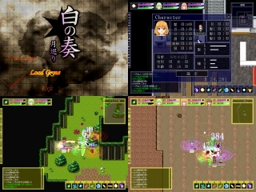
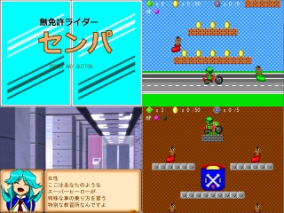
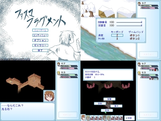
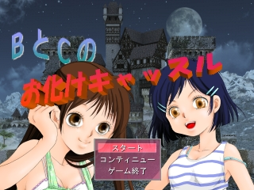

【注意】赤文字の「サイトへのリンク」や【ダウンロード】リンクは、現在のドメイン所有者が当時と変わっていて危険なサイトにつながる可能性がありますので、もしリンク移動時にブラウザの警告などが出た場合は移動しないよう注意してください。
（『緑色のリンク』と『青色のリンク』はそれぞれ「ページ内リンク」と「同サーバー内へのリンク」なので安全です）
第３回 WOLF RPGエディターコンテスト
トップ10動画 / 順位発表 / 審査員から一言 / 作品紹介 / 総評 （どれもページ内リンクです）結果発表
●記念画像● メガネ様より上位入賞作品集合イラスト！ |
第３回 WOLF RPGエディターコンテスト順位発表
順位は、「6名の審査員投票による得点率」 ＋ 「一般投票による得点率」の合計が大きい順に決定されます。| 順位 | 作品名 | 審査員投票 計170点 | 一般投票 計4193点 | 合計 得点率 （％） | ||||||
| 一位 | 次点 | 好印象 | 得点（％） | 一位 | 次点 | 好印象 | 得点（％） | |||
| 1位 | マッドプリンセス ～ディオデラの野望～ |
1 | 5 | - | 20（11.8％） | 53 | 57 | 86 | 522（12.4％） | 24.2％ |
| 2位 | 武神の目覚め | 2 | 3 | 1 | 20（11.8％） | 54 | 36 | 55 | 433（10.3％） | 22.1％ |
| 3位 | 魔界王伝Ⅱ－異界の十二騎士－ | 2 | 3 | - | 19（11.2％） | 35 | 38 | 81 | 370（8.8％） | 20.0％ |
| 4位 | 行商！ | 1 | 2 | 2 | 13（7.6％） | 54 | 32 | 54 | 420（10.0％） | 17.7％ |
| 5位 | ヤジルシージ | 1 | 4 | 1 | 18（10.6％） | 9 | 16 | 61 | 154（3.7％） | 14.3％ |
| 6位 | 都市と力 | 1 | 2 | 2 | 13（7.6％） | 13 | 24 | 73 | 210（5.0％） | 12.7％ |
| 7位 | UCHU | 1 | 2 | 3 | 14（8.2％） | 5 | 9 | 39 | 91（2.2％） | 10.4％ |
| 8位 | 白の奏 -月巡り- | - | 3 | 1 | 10（5.9％） | 7 | 14 | 51 | 128（3.1％） | 8.94％ |
| 9位 | Triangle Triggers | 1 | - | 3 | 8（4.7％） | 3 | 6 | 33 | 66（1.6％） | 6.28％ |
| 10位 | Princess not known | - | 1 | 2 | 5（2.9％） | 9 | 6 | 50 | 113（2.7％） | 5.64％ |
| 11位 | 鍵の番人と次元の大迷宮 | - | 1 | - | 3（1.8％） | 11 | 15 | 39 | 139（3.3％） | 5.08％ |
| 12位 | Wolke-ヴォルク- | - | - | 4 | 4（2.4％） | 5 | 7 | 31 | 77（1.8％） | 4.19％ |
| 13位 | Little Punkish Girl | - | 1 | 1 | 4（2.4％） | 3 | 2 | 21 | 42（1.0％） | 3.35％ |
| 14位 | トレジャーはんてぃんぐ！+ | - | - | 2 | 2（1.2％） | 6 | 6 | 32 | 80（1.9％） | 3.08％ |
| 15位 | Seeker!! | - | - | 3 | 3（1.8％） | 3 | 3 | 26 | 50（1.2％） | 2.96％ |
| 16位 | マジカルファンタジア | - | - | 1 | 1（0.6％） | 8 | 7 | 38 | 99（2.4％） | 2.95％ |
| 17位 | VariantWar | - | - | 3 | 3（1.8％） | 4 | 2 | 18 | 44（1.0％） | 2.81％ |
| 18位 | 夷狄～Road to Hell～ | - | - | 1 | 1（0.6％） | 11 | 2 | 17 | 78（1.9％） | 2.45％ |
| 19位 | Princess Saviour体験版 | - | - | 2 | 2（1.2％） | 3 | 5 | 20 | 50（1.2％） | 2.37％ |
| 20位 | Liberation From... | - | - | - | （0.0％） | 15 | 2 | 12 | 93（2.2％） | 2.22％ |
| 21位 | ドラゴニア | - | - | - | （0.0％） | 10 | 3 | 29 | 88（2.1％） | 2.10％ |
| 22位 | レペ・デュ・ソレイユ | - | - | - | （0.0％） | 7 | 4 | 25 | 72（1.7％） | 1.72％ |
| 23位 | SemiAutomatic Dungeon | - | - | 1 | 1（0.6％） | 3 | 3 | 22 | 46（1.1％） | 1.69％ |
| 24位 | Tohubohu-ArcticaOdyssey- | - | - | - | （0.0％） | 7 | 5 | 17 | 67（1.6％） | 1.60％ |
| 25位 | シナプス | - | - | 1 | 1（0.6％） | 1 | 2 | 24 | 35（0.8％） | 1.42％ |
| 26位 | リトルオープンワールド | - | - | 1 | 1（0.6％） | - | 4 | 18 | 30（0.7％） | 1.30％ |
| 27位 | 戦乱の大陸 体験版 | - | - | 1 | 1（0.6％） | 1 | 2 | 18 | 29（0.7％） | 1.28％ |
| 28位 | Rocket☆Girl | - | - | - | （0.0％） | 3 | 4 | 25 | 52（1.2％） | 1.24％ |
| 29位 | 無免許ライダーセンパ | - | - | 1 | 1（0.6％） | - | 1 | 13 | 16（0.4％） | 0.97％ |
| 30位 | 双六英雄記 | - | - | - | （0.0％） | 1 | 3 | 26 | 40（1.0％） | 0.95％ |
| 31位 | 祖母のために | - | - | 1 | 1（0.6％） | - | 1 | 12 | 15（0.4％） | 0.95％ |
| 32位 | トレジャーキッド | - | - | - | （0.0％） | 2 | 4 | 14 | 36（0.9％） | 0.86％ |
| 33位 | シュネレプント | - | - | - | （0.0％） | 2 | 3 | 16 | 35（0.8％） | 0.83％ |
| 34位 | Genius | - | - | - | （0.0％） | 1 | 4 | 16 | 33（0.8％） | 0.79％ |
| 35位 | 風の少女 | - | - | 1 | 1（0.6％） | - | - | 5 | 5（0.1％） | 0.71％ |
| 36位 | 真夜中のレジスタンス | - | - | - | （0.0％） | 1 | 2 | 17 | 28（0.7％） | 0.67％ |
| 37位 | ミチ | - | - | - | （0.0％） | 2 | 3 | 9 | 28（0.7％） | 0.67％ |
| 38位 | 風花送り・続 | - | - | - | （0.0％） | - | 1 | 20 | 23（0.5％） | 0.55％ |
| 39位 | アウレとノレの物語 | - | - | - | （0.0％） | - | 1 | 18 | 21（0.5％） | 0.50％ |
| 40位 | HAPPY BABY | - | - | - | （0.0％） | - | 1 | 16 | 19（0.5％） | 0.45％ |
| 41位 | ファスマ フラグメント | - | - | - | （0.0％） | - | 2 | 13 | 19（0.5％） | 0.45％ |
| 42位 | 夏の向日葵 | - | - | - | （0.0％） | 1 | 1 | 9 | 17（0.4％） | 0.41％ |
| 43位 | 鳩物語 | - | - | - | （0.0％） | - | 2 | 10 | 16（0.4％） | 0.38％ |
| おひめさまの伝説. デラレン塔からの脱出 |
- | - | - | （0.0％） | 1 | 1 | 8 | 16（0.4％） | 0.38％ | |
| 45位 | 退屈少女 | - | - | - | （0.0％） | 1 | - | 10 | 15（0.4％） | 0.36％ |
| 46位 | そこにいる | - | - | - | （0.0％） | 1 | 1 | 6 | 14（0.3％） | 0.33％ |
| 47位 | 忘れられ島の冒険 | - | - | - | （0.0％） | 1 | 1 | 5 | 13（0.3％） | 0.31％ |
| 48位 | nextutozinrpg | - | - | - | （0.0％） | 2 | - | 2 | 12（0.3％） | 0.29％ |
| 49位 | リーフとパンフの PROJECT UNDERGROUND |
- | - | - | （0.0％） | - | 2 | 5 | 11（0.3％） | 0.26％ |
| 50位 | イライラ☆ボウ | - | - | - | （0.0％） | - | - | 9 | 9（0.2％） | 0.21％ |
| 51位 | 修二の冒険 | - | - | - | （0.0％） | 1 | - | 3 | 8（0.2％） | 0.19％ |
| BRICS OF DESLOBEST | - | - | - | （0.0％） | - | 1 | 5 | 8（0.2％） | 0.19％ | |
| 53位 | 逃亡中 | - | - | - | （0.0％） | 1 | - | 2 | 7（0.2％） | 0.17％ |
| 54位 | 闘技場～夢が現実になるところ～ （体験版） |
- | - | - | （0.0％） | - | - | 6 | 6（0.1％） | 0.14％ |
| 55位 | The game of gohsts。 | - | - | - | （0.0％） | - | 1 | 2 | 5（0.1％） | 0.12％ |
| PUNCH La | - | - | - | （0.0％） | - | 1 | 2 | 5（0.1％） | 0.12％ | |
| 心砕Ⅱ | - | - | - | （0.0％） | - | - | 5 | 5（0.1％） | 0.12％ | |
| RealisticFantasy | - | - | - | （0.0％） | - | 1 | 2 | 5（0.1％） | 0.12％ | |
| 59位 | SOUND MY MUSIC -広がるは人々の調べ- α版・サンプル |
- | - | - | （0.0％） | - | - | 4 | 4（0.1％） | 0.10％ |
| 60位 | 魔空物語 | - | - | - | （0.0％） | - | - | 4 | 4（0.1％） | 0.10％ |
| ゴミの月～Junk Moon～(第1部) | - | - | - | （0.0％） | - | - | 4 | 4（0.1％） | 0.10％ | |
| 62位 | お化けキャッスル | - | - | - | （0.0％） | - | - | 3 | 3（0.1％） | 0.07％ |
| COSMOS | - | - | - | （0.0％） | - | - | 3 | 3（0.1％） | 0.07％ | |
| 64位 | 現実の使者 | - | - | - | （0.0％） | - | - | 2 | 2（0.0％） | 0.05％ |
| 色彩＝シキサイ | - | - | - | （0.0％） | - | - | 2 | 2（0.0％） | 0.05％ | |
| 勇者の伝説 | - | - | - | （0.0％） | - | - | 2 | 2（0.0％） | 0.05％ | |
| 67位 | ソウルリンク 魂の略奪手/体験版 | - | - | - | （0.0％） | - | - | 1 | 1（0.0％） | 0.02％ |
| 68位 | 魔王封印へ いざっ！ | - | - | - | （0.0％） | - | - | - | （0.0％） | 0.00％ |
【↑へ戻る】
審査員から一言
【さくらば結城】『作品自体がもつ雰囲気や統一感・バランス・完成度が高いもの』を重点的に評価しました。自作システム作品の場合、操作面での設計・作り込みによって快適さや不便さが顕著に現れますので、特に注目してプレイしました。前回コンテストに引き続き、とても楽しませていただきました。楽しい時間をありがとうございます！
【しゃこ】
今回も気合の入った作品が多くて楽しめました。新しい発想のゲームや、挑戦的なゲーム等々、とてもクオリティの高い作品ばかりでした。
「バランス」「操作性」「他のシステムとの噛み合い」この辺りで評価を分けることが多く、コンテストのレベルの高さをうかがうことが出来ました。
【セイ】
ゲームは、誰かに遊んでもらわなければ成り立たず、作り手は、常に遊んでくれる人の事を考えて制作しなければなりません。不特定多数の方々に遊んでもらう事が前提になるコンテストという場に出品するのならば、それはなおさらです。
ですので、単純なゲームとしての面白さはもちろんとして、それを遊び手が快適に味わう事が出来るような配慮が出来ているか、完成させただけの自己満足で終わっていないか、などを審査の基準とさせて頂きました。
今回はエントリーされた作品数が多かった事もあり、票の配分が最終的に私自身の嗜好で判断された部分もありますが、どうか御理解頂ければと思います。
【ぺりかん】
感覚的な評価ですが、遊び始めたときにすんなり入りこめた作品や
遊びながらのめりこめた作品に投票しました。
また、「この作品でしか味わえない楽しさ」があるか、
「その楽しさをどのように提供しているか」の観点でも評価させていただいています。
【ぽり0655】
みなさんの作品をプレイしながら、自分のゲーム製作への参考にさせていただいてます。
そのため、私が審査で重視するのは「システムの組み方」や「プレイのスピード・テンポ」のような
ちょっと作者視点寄りのものになっています。
プレイ時に無駄な手間を要求してないか？無駄に時間のかかる作りになってないか？ということを考えながら
プレイさせて頂きました。
【メガネ】
様々なジャンルの作品が揃っていて一概におもしろさを判断するのは難しかったですが、見た目におもしろそうな作品は実際に遊んでみて内容の充実に驚いたり、遊んでみて初めておもしろさに気づく作品もあり、色んな発見があり、楽しみながら審査させて頂くことができました。やや個人的な趣味が反映された部分もございますが、遊んでいておもしろいと感じた作品を評価させて頂きました。
【↑へ戻る】
作品紹介
【1位】『マッドプリンセス ～ディオデラの野望～』 (エントリー番号【21】/ 総ポイント24.2％)
(エントリー番号【21】/ 総ポイント24.2％)
(エントリー番号【21】/ 総ポイント24.2％)- 【ダウンロード】
【運営ﾊﾞｯｸｱｯﾌﾟからDL(安全/89MB)】 - 作者 : あとらそふと
- プレイ時間 :2～3時間
- 作者コメント:
- ◆ジャンル
闘士育成シミュレーション
◆十人十色のプレイスタイル！
ゲーム中にとったプレイヤーの行動が
そのまま闘士の成長につながります。
戦闘に勝つことだけが全てではありません。
とにかく色々な遊び方をすることが
成長への近道です。
◆遊び方の例
・地下迷宮を隅々まで探索する
・アイテムコンプリートを目指す
・錬成で色々な装備をつくる
・ひたすらお金集めに走る
・たくさんのパートナーと仲良くなる
遊び方は、たくさんあります。
是非、お気に入りの遊び方を見つけて
みてください。
-
【審査員コメント】
＜ぽり0655/一位票＞ 訓練して闘技場で１位を目指すRPGです。グラフィックのクオリティもさることながら、錬成時にリストが見れたり、複数の装備をあらかじめ指定してボタン１つで変更できたり、細部までこだわり抜かれた作品だと思いました。
アイテム購入とアイテム売却が一見同時に出来そうだけど個別に行う必要があったところや、迷宮に入る直前に装備を見直すことができたら便利だったなあ、などのちょっとした事が気になりましたが、逆に言えばそういうちょっとした事しか文句を言える部分がないということでもあり、非常に素晴らしいことだと思います。
＜さくらば結城/次点票＞ 自由度が高い育成シミュレーションゲームです。ユーザインターフェース周りの作り込みが素晴らしく、マウスでの快適操作はもちろん、ゲームが始まってから出来る事が徐々に増えていくので、ゆっくりとゲームシステムを覚えていけるようになっています。ゲームの目的は闘技大会で優勝を目指すことですが、行える事が多いので（アイテム錬成・借金返済・パートナー探し・地下迷宮探索・市場での取引等々）じっくりと腰をすえて色々な育成要素を楽しみたい方にオススメです。
＜しゃこ/次点票＞ 装備の付け替えによる、制限つきのカスタマイズが面白い。探索系のスキル持ちの装備はあまり強くないというのが良いですね。装備を3セット登録することが出来るので、わざわざ装備を付け替えるといった手間がありません。装備が多いだけに、非常に便利です。
また、錬金の仕組みがとても分かり易く、どのようにすれば純粋に強い武具を作れるのかというのが最初のほうで理解できます。
日数制限がありますが、期間は十分に長いので、1回通せば大体の要素を味わえます。ただ、そのせいで中盤辺りで純粋な装備の強さは頭打ちになってしまうというのが惜しい。
＜セイ/次点票＞ 多種多様な遊び方の出来る育成シミュレーション。
奴隷市場で買われた新米闘士の少女が、借金を返済して自由になるために闘技場へ挑む――という流れではあるのですが、物語にはそこまで重苦しい雰囲気はありません。主人公の見た目も、お手伝いさんみたいで可愛らしいです（格好の理由付けはされています）。
この作品で一番面白いと感じたのは、単純に戦闘で経験値を稼ぐのではなく、様々な行動を行う事でレベルアップしていくシステムである事です。そのため、とにかくいろんな事に挑戦していく事が成長の近道となっています。実際に出来る事は多く、十人十色なプレイスタイルで遊ぶ事が可能です。
随所に挟まれる物語のテキストは、簡潔かつ必要最低限であり、詳しくは語られないのですが、それがもともと良いゲームのテンポを崩す事がなく好印象。美しいグラフィックも、ゲームの雰囲気に、とてもマッチしていました。
＜ぺりかん/次点票＞ 直感的なインタフェース、自由な育成要素、そして合成によってまったく予想外のスキルを持った装備品を獲得できる要素が印象的です。
単にレベルが最大の装備を揃えればいいのではなく、状況によっては下位の装備がベストだったりすることもあり、序盤から中盤にかけてはドキドキしながら合成していました。
また、育成の自由度に対する「何を伸ばせばいいのか分からない」問題を自動振り分け要素で解決できるようにしてある点や、各画面で操作されていないとヘルプが表示される点など、
初見のプレイヤーに面倒臭さを感じさせない設計には大きな意義があるはずです。
＜メガネ/次点票＞ 奴隷として買われた主人公が借金返済に追われながら、血みどろの戦闘を繰り返す育成シミュレーション。独特の雰囲気を持った優れたグラフィックが作品の魅力です。ゲームを始めた当初は、とても可憐な印象の主人公が闘技場で生々しい流血エフェクトを浴びせ合いながら戦う様におぞましい印象を受けましたが、筋トレを続け地下迷宮を攻略し街の人々と交流していく内に作品の中に楽しさを見つけ、豊富に用意されているシステムにもやりがいを感じることができる万人に勧めたい作品に仕上がっています。効果音や音楽は作品の雰囲気と馴染んだ良い選別が成されていると思います。難易度選択や場面ごとの説明も充実していて作品の雰囲気が好みな方はもちろん、普段ゲームをあまり遊ばない方にも入りやすく遊びやすい一作だと思います。
【一般投票コメント】
[好印象] システムもバランスもよく楽しめました
[一位票] 特に一筆書きな迷宮が面白かったです。
宝箱コンプがなかなか難しく、工夫するのが楽しかったです。
たまに面倒でボスまで一直線に進んでましたが。
[好印象] 装備練成などがある育成ゲームで、ENDも数種類あるのですがセーブ＆ロードが異様に遅い上にやってるうちに作業っぽさを感じられてしまったのが若干残念でした。
[次点票] サクサク感
[好印象] エンドリストとスタッフロールのスキップをください。
[一位票] インターフェイスが綺麗で、操作に関してもヘルプが参照しやすいのでプレイしやすかった部分がよかったです。
[好印象] 美麗なグラフィックスと練られたシステム。さすがの時間泥棒ぶりです。 導入から遊びやすく、熱中しました。 ただ中盤からの即死無双は、抜け道というよりは調整不足に感じてしまいました。
[好印象] 世界観と絵が非常にマッチしていて惹きこまれる。
[好印象] プレイ画面の一つ一つがとても美しく、内容も良かったです。
[一位票] クリアまで約5時間。一気にプレイしてしまいました。ストーリーの進め方や、錬成の方法、戦闘などのシステムが分かりやすかった。キャラクターを自分好みに成長させることができるのも良かったと思う。ストレスフリーに遊ぶことができた。登場人物のグラフィックも好き。2週目からは難易度選択も用意されているのもよかったと思う。
[好印象] 当たらなければどうということはなかったので、もうちょっと装備や資金のやりくり感が欲しい。
[一位票] 不安のないシステム構築、グラフィックのレベルの高さ、何回でも遊べるストーリーなど、総合的な完成度とゲームボリュームから選出させていただきました。
マイナス要素が特に見当たらなかったところが凄いと思います。
またプレイヤーを選ばない内容や、一通り最後まで遊ばせてくれる点も高評価でした。
[好印象] 育成もので奴隷という点。ダンジョン探索もあった所。
[一位票] 作りこみが凄かったです！
[好印象] 戦闘は序盤は慌てますがなれるとスピーディーで楽しい。ＬＶを上げる方法が多種多様で面白いと思いました。ＥＤが淡白だけど各種引継ぎができるのが○。
[好印象] 実績＝レベルというのは目から鱗。全体的に良く出来ているけれどバランす調整が甘めだと感じました（あくまで「普通」で１周プレイした上での感想です）。
[好印象] 安定した高クオリティが凄い。
[好印象] 処理が不安定で遊んでて落ち着かないですが、絵は好きです。
[好印象] あとらそふとさんの絵の雰囲気とゲームシステムへの挑戦的なところがよかったです。
[一位票] 闘技場の敵がてごわくなったら迷宮に潜ってもう一回挑戦すれば勝てるというバランスが良かった。レベルが上がりやすく、サクサク進めるのも良かった。
[好印象] ステータスのありがたみが分かりづらく、また即死技強すぎ。プレイしやすいだけに残念。
[好印象] 雰囲気やインターフェースがとても良い。状態異常が強すぎるのと、回避率の高すぎる敵が気になったが。
[好印象] すごく面白いのだけど、日数制限があるのでなんだか窮屈な感じがします。
[好印象] 主人公に全然不遇さを感じない件について
[次点票] 美麗なグラフィック、遊びやすさ、丁寧なシステムなど、どの点においても圧倒的な作品だと感じました。
[次点票] コツをつかめばサクサク強くなれてよかった。ゲームバランスがちょうど良い
[一位票] 錬成システム（個々の装備にスキルが付く点）
単純に、一番おもしろかった！！
[一位票] 次でやめよう、次でやめようと思っていたら、全クリまでいきました。中毒性が半端じゃないです。
[一位票] ■良かった点
・綺麗なグラフィック（キャラクターが綺麗）
・テンポのよい戦闘（自動戦闘が楽でよかった）
・自由度の高さ（プレイの仕方を選べて楽しい）
・データを引き継いでの周回プレイ（周回プレイ好きにはたまらない）
・マルチエンディング（色々エンディングがあるとクリアするのが楽しい）
・難易度が選択できるところ
■気になった点
・敵の強さが途中から急に上がる気がする（周回プレイを前提としてるから？）
・見落としてるかもしれないが、武器の特性・属性の強弱とかがあるなら知りたい
とても作り込まれていて、高レベルの完成度に驚きました。初プレイ時は何から始めたらいいのか一瞬戸惑いましたが、プレイを勧めるうちに色々な遊び方ができて一気にクリア。マルチエンディングと戦闘・探索・合成と多方向に遊べるのが魅力的です。また、システムも利便性を考慮されていて感動しました。
[一位票] 練成でアイテムを作ったり、地下迷宮を探索したりするのが楽しかった。また、レベルアップが戦闘以外の手段で行えるというのも面白かった。
[次点票] 絵に味があって良かった
[一位票] 操作が分かりやすく、高速戦闘、自動カーソル合わせなど、操作にイライラすることは無かった。
ゲーム自体は単純だが、捨てる要素が殆どなく、またレベルアップの方法が特殊で様々な事を試すきっかけになった。
引き継ぎセーブもバランスが良く、難易度を致命的に下げたりしなかった点も良いと思う。
クリアを重ねる毎に手際が良くなり、育成がスムーズになるのも楽しい、キャラ絵・背景画も美麗で非常に高いレベルでまとまっている作品だと思う。
惜しいと思うのは地下宮殿内の隠し宝箱・イベントレベルアップがかなりバランス崩壊だと思う事。
宮殿内の全てのイベントをまとめて5レベル程度でもよかったと思うし、隠し宝箱内の金貨は精々5倍か10倍程度でよかったのではないか、と思う。
[一位票] シルフェイド幻想譚にも通ずるもののある、周回制のあるゲームとしてちょうどいい１周のボリュームと様々なランキング、多様なプレイが可能である為、色々試行錯誤できるやりこみ要素が素敵である。
また登場する魅力的なキャラの数々、探索と戦闘のバランス、難易度調整で幅広い楽しみ方ができるのも魅力だ。
ただアイテムの最大上限数がネックか。コレクションの楽しみもゲームの要素的にはあると思われるが、どうしても99では不足気味である。
「抜群」という言葉がふさわしい、そう私は思う。
[好印象] 敵キャラ（人間）のグラフィックがミスマッチで残念！
[好印象] ただひと言、ストーリーや世界観がかなりダークであるのに、そのことに対して主人公たちが常に無反応な感じがするのが気になりました。
[次点票] 鍛え甲斐がある所
[次点票] オリジナリティが溢れていて素晴らしい。
若干説明不足の点が気になった。
[一位票] あまり難しくなく程よくやり込め、それでいて本気でやり込もうとすると計算が必要になるような難易度設定があるのがよかった。
EDが選択式なため全EDを選択できるように期日内に条件を満たしていくということも出来て楽しかった。
絵が綺麗な点や戦闘の早送り処理がある点もよかったと思う。
[好印象] システムは良くできていました。やたらと種類が多い合成が絞り込まれ、爽快感を覚える要素があれば一位とするか迷えたかも知れません。
[次点票] ゲーム性と戦略性
[一位票] 他のウディタで作られた作品に比べると完全に独自のシステムを採用されているにも関わらず、直感で操作できるという点は圧巻でした。
数秒放置するとヘルプが表示されるというのは地味だけど実に心憎い計らいでした。
今回のコンテストに出品された作品の中でも出色の出来です。
[好印象] 徐々に装備が充実していく過程が楽しかった。
[一位票] 細かな実績が表示されるところが良い
さらに、実績がレベルに直結するのも好み
コンプリート魂を刺激された
[好印象] 育成・錬成が楽しい。ビジュアル面の雰囲気もとても好きです。
[一位票] 独特の作りこみとやりこみ要素の多さがよかった。
雰囲気のよさも◎
[次点票] 最後まで飽きさせない工夫が随所にあって、とても楽しめた。
[好印象] 良くまとまっていると思います。
[好印象] 練成が楽しい。戦闘のバランスが大味。レベルアップがトロフィーを達成するような感覚で楽しい。
[一位票] 戦闘がシンプルでインターフェイスと相まって、操作がし易い。
反面、すべてがマウス操作であるために中ホイールボタンが存在しないマウスを使う身としては、合成が,いささか不便である。
[次点票] いつの間にやりこんでいた。
突き放したような主人がよかった。
[一位票] 目標がわかりやすくて、作りが丁寧。
それでいて、やりこみ要素も、きちんとある。
絵も印象的で、引きこまれるものでした。
思わず、時間を忘れてのめりこんでしまいました。
[一位票] 難易度が好みで選べる所と周回プレイ出来る所。それと特に育成要素や錬成が面白かった。
ストーリーの都合上仕方が無いのだけれど、主人公が決められていなければなお良かった。
[好印象] 作品群の中でダントツに作りこまれていた。絵は美しく、システム周りも整理されている。後はストーリーにもう少し抑揚があれば……。
[一位票] 育成ゲームとしてのオイシイところを全て抑えてると思う。バランスもかなり考えられてるように感じました。やってて素直に楽しめました
[次点票] 幅広い難易度選択が可能でゲームが苦手な層でも手軽に楽しめる
ゲームの進行度合いが詳細で確認でき、アイテム収集などのやりこみ要素があるのも○
[次点票] マウスクリックで楽々戦闘が進むのが◎。
絵もとても良くて二位票とさせて頂きました。
[好印象] 特に制限がなく自由度が高いのが良かった。
[一位票] 自動戦闘の便利さ、お話がとても気に入りました！
たくさんの終わり方があってコンプリートのしがいがあります！
[一位票] 前作、前々作でも上位にランクインしていただけに、他の作品を優遇しようとも思ったが、
マルチエンディングで幅広いエンディングといい、これまでの作品の要素が詰め込まれたシステム面といい、非の打ち所のない完成度だったため
1番とさせて頂きました。
[一位票] すごく丁寧に作ってあると思いました。
ウディタでこんな育成シミュレーションゲームが作れるとは思いませんでした。
[一位票] 独創的な世界観、サクサク遊べるシステム、フェルザの姐御
[好印象] 素晴らしい出来でした。ついつい、クリアまでノンストップで遊んでしまいました。
[次点票] 非レシピで手探りで探っていく合成システム
[好印象] 敵キャラの雰囲気や、絵柄のタッチが世界観にのめり込ませてくれます。アイテムによる強化が技に影響するところも好みです。
[次点票] 難易度選択から始まり、ヘルプや自動カーソル合わせなどプレイヤーに対する配慮が随所に見られ、グラフィック面も相まって、フリーゲームとは思えない素晴らしい完成度だった。この洋ゲーっぽい雰囲気がたまらない。
[好印象] 装備品のスキルに重複が多く、代わり映えしないのが残念
[一位票] 自由度の高さと安心のクオリティが半端ではない。
[一位票] 絵。ほかにストーリー
やり込みやすく
とてもいいゲームでした
[次点票] 何をどうやったらこんなゲームを作ることが出来るのかわからないレベルの出来。
RPGはどこへいった……。
[次点票] 絵が綺麗だしやりこみ要素があっていい
[一位票] ストーリー、システム、テンポの全ての水準が高く、加えてやり込み要素があるので、プレイし甲斐があった。
[次点票] 育成楽しい！
レベルもさくさく上がるし操作も簡単で、地下迷宮での探索や達成項目を色々埋めていくのも楽しかったです。
プレイ時間も短めなのでさっくりとでき、ＥＤも沢山あってよかったと思いますが少し味気ないのが残念でした。
[一位票] ウルフエディッターで作ったと思えないのが凄い
こんぐらいやらないとなぁ・・・(-_-;)ｳｳﾑ
[好印象] 成長させるのが面白かった。つい周回プレイしたくなる。
[一位票] ゲームの方針、レベルアップ、探索など全体的にシンプルで解りやすく、するりと世界観に入っていける。自己満足的な複雑さを排除し、細やかで丁寧に作られている。
ビジュアルの美しさ、効果音やBGMのチョイスも秀逸。
[次点票] 難易度設定は思ったほどではなかった。無理ゲーはまだ挑戦してませんが。短いストーリーながら深みがあってよかったと思います。
[好印象] システムが非錣北滅鬚・辰拭｣VerUPに期待！
[次点票] Verupで改善されたり、追加の要素が最初から備わっていれば迷い無く一番でした。
最初の提出でバシッ！と仕上げる来るのも重要な要素だと思います。(バグを除く)
[一位票] グラフィック、手ごろな長さ、やり込み要素、他にも良いところは多いですが。
気付いたら３周していたし、私の中では確実に１番です。
【2位】『武神の目覚め』
 (エントリー番号【10】/ 総ポイント22.1％)
(エントリー番号【10】/ 総ポイント22.1％)
(エントリー番号【10】/ 総ポイント22.1％)【ダウンロード】
【運営ﾊﾞｯｸｱｯﾌﾟからDL(安全/2MB)】- 作者 : Foomal
- プレイ時間 :1時間～
- 作者コメント:
- ・ダンジョン探索系RPG
・システム/グラフィック完全自作
・テンポの良いシンプルな戦闘
-
【審査員コメント】
＜セイ/一位票＞ プレイヤーの視点に立ち、いかにストレスを与えず快適に遊ばせるかを考えているという点で、多くのエントリー作品の中でも抜群の作品でした。
操作キーを絞る事で操作を覚える手間が省かれ、戦闘は高速でさくさくと進み、人に話しかけたり、宝箱を開けるのにも決定キーを押す必要がないなど、とにかくストレスフリー。他にもムテキモードや戦利品4倍モードが選択出来るなど、さらに爽快に気持ち良く遊べる配慮が用意されているのも素晴らしかったです。
シンプルに短くまとめた物語、魅力的な自作グラフィック、聞いていて心地良い効果音など、細部に渡って隙がなく高水準なRPGでした。
＜ぺりかん/一位票＞ とにかくストレスフリーなのが魅力の作品です。戦闘・移動・メニュー・ゲームの流れ全てにおいて分かりやすさとスムーズさが追求されています。また、アイテムが使い放題という特徴的な戦闘システムであり、戦術の自由度が高いのですが、ゲームクリア時にどのようなプレイスタイルだったのかを一望できるのも大きな特長です。最後の表示を他のプレイヤーと見せ合うのも密かな楽しさであると思います。その他にもゲームオーバーになってもデメリットが無いどころかメリットがあったり、移動時間を短縮するシステムが用意されていたり、更には無敵モードまで搭載されていたりと、プレイヤーを飽きさせない工夫が随所に感じられました。
＜さくらば結城/次点票＞ レトロなＲＰＧの良い所を、短い時間に凝縮したような作品です。シナリオやシステム等、全般的にスピーディー過ぎるほどにスピーディーで、こんなに早く進んでいいのかと不安になるほどです。ユーザインタフェースがよく練られていて、はじまってから終わりまで何をすれば良いのかが分かりやすく提示されていたのでスイスイ進めました。ただ、システム面の出来がよいだけに、もう少し長く遊びたかったと感じました。
＜しゃこ/次点票＞ ストレスフリーに挑戦したゲームです。無駄な肉をこそぎ落とす！ スピードこそ命！
じゃあスピードだけかと言うと、そうではありません。グラフィックや全体的な雰囲気はよく纏められており、特に戦闘エフェクトは豊富。敵が倒される時の演出は爽快感があります。でもとにかく早い！ エフェクトを見る暇がないぐらいに早い！
このシステムで発揮できる力は全て発揮しているのではないかと感じられる作品でした。
＜ぽり0655/次点票＞ レトロチック超ハイスピードRPGです。「ユーザビリティ」という面においては、今までにプレイしたゲームの中でも飛び抜けて一番です。
ワープや戦闘後全回復は当然のこと、モンスターの強さがマップに表示されてたり、ザコ戦は決定キー押しっぱで蹴散らせたり、デスペナルティじゃなくデスボーナスが設置されてたり、とにかく最後まで一気に進むための配慮をこれでもかというぐらいに入れている作品でした。
ですが、もはやわがままの域な意見かもしれませんが正直その行き届いた配慮が「過保護」すぎて、プレイヤーさんがゲームに求めるであろうドキドキやワクワクを見いだしづらくなってないかと心配してしまいます。機能は無いより有るほうが嬉しいとは言っても、うーん。
＜メガネ/好印象＞ セリフや内容の解説などに無駄が一切無く最低限の情報量で表現されていて、無駄をそぎ落とす事でRPGとしての面白さが追求された作品。オーソドックスなシステムで事前情報がなくても馴染みやすく、自作のグラフィック、SE、システムはどれも高いレベルで実現されていて、倒されてもすぐ復活できるなど遊びやすさも十分考慮されています。最低限の情報量で説明不要の面白さを表現した作品です。
【一般投票コメント】
[次点票] こんなRPGを待っていた！
軽くてサクサク進むのが実に爽快でした。
そして調子にのって進みすぎて敵に苦戦すること多数（笑）。
後、使いきりアイテムと永続で使える杖の使用タイミングが違うことで、使い分けに意味があるのがよかったです。
普通のゲームだと、永続に使えるアイテムがあるとそれに頼りっきりになるので。
どっちを使おうか考えるのは楽しかったです。
後、普通はアイテムは途中で使わなくなるものや最初から使えないものが多いですが、最後までどのアイテムも使い勝手がよかったです。
遊んでてプレイヤーなりの工夫ができるゲームは本当に楽しいです。
[好印象] 主人公をずっと見てる敵エンカウントシンボルがかわいかったww
[一位票] ・高速戦闘にダメージ予想、敵の弱点と耐性の確認など、あらゆる点がユーザーライクである点
・コンプリート、低レベルクリアなど、様々な遊び方ができる点
[一位票] 全体的に非常に親切に作られており操作しているだけで楽しいという稀有なゲーム。
[一位票] サクサク感
[次点票] サクサク進む戦闘が楽しかった。
１周が短く、プレイ記録も付くので暇つぶしにも良い。
[一位票] 戦闘バランスがよくサクサク進めるのが良い。
一部の強い敵をアイテムを駆使して、弱い時に倒せたので一番好印象です。
[一位票] どこまでも親切設計！一人旅を感じさせない戦闘！往復すらも楽しい道のり！なにより、終わってもまたすぐにプレイしたくなった！次回にセーブデータを残せないのがちょっと残念だったけど
[次点票] 楽にクリアーできるところ。
[一位票] とにかくテンポがよくストレスフリー。
いらないものはバサバサ切り捨てて、面白い要素だけコンパクトにまとめられています。
NPCのセリフなどもしつこくなく、かつ必要十分な情報が得られる、よく考えられたものだったように思いました。
気づいたらクリアしていて、もうちょっと遊びたいと思うゲームでした。
[一位票] テンポと斬新なシステム
[次点票] サクッとプレイ出来るゲームで、親切設計で分かりやすい。
[一位票] RPGの面白い要素を、テンポ良く堪能できるように作られていてとても良かったです。
あまり長い時間プレイできない人でも簡単に楽しめる点も良いです。
ストレスを感じさせないよう様々な工夫が凝らされていて、ノンストレスで気持ち良くできた最高のゲームでした。
[次点票] とにかく戦闘がさくさく進む。そしてストーリーもさくさく進む。だけど装備品もたくさん用意されていて、どれを使って戦うか、それを考えるのがとても楽しかった。手軽に遊べて、縛りプレイがやりやすいのもいいと思う。短いプレイ時間でクリアできるのに、まるでやりこんだような気分になれた。
[一位票] サクサク心地よい。
[次点票] こちらが思いつくユーザビリティや、ゲームとして面白いアイデアを既に実行され、さらにそれを一歩昇華させていると思います。
余計なものを排除して、ゲームとして必要なものだけを丹念に紡いだ、引きのデザインにとても驚きました。
また、メッセージではなくチップが語るキャラ・マップチップの作成も好印象でした。
[一位票] テンポの良さ
[次点票] ここまでサクサク進めるＲＰＧ初めてでした！
[一位票] ともかくテンポ！敵ＬＶが一目でわかるので強敵かどうかもすぐわかる。ＬＶＵＰの特技の便利さ。回復しながら攻撃が可能（杖を除く。
などもあり一番楽しく進められた気がします。
クリア後の戦歴もあるので工夫次第ではやりこみも可能ということもプラスです。コンパクトにまとまっていてすごく良かった。
個人的にはおまけで音楽などしっかり聴けたことも嬉しかったり。
[一位票] 何と言っても爽快。
「ストレスフリー」という概念を突き詰めた結果のサクサク感がとても気持ちよかったです。雑魚敵がヌルすぎるとは思いましたが爽快感を重視するのであればアリだと思いました。
唯一少し不満に思ったのは「立ち上がってくるボス」の仕様。HP０になっても倒せないので最初はバグかと思いました。再生後のHPが表示されるようになればプレイヤーに親切だと思います。
[好印象] 超サクサクRPG、海外のFLASHゲーを見ているようでした。
[次点票] やっぱりテンポよくサクサク進んでいけるのが楽しかったです。
自作グラフィック部分もゲームの雰囲気にあっていてよかったです。
[次点票] シンプルで楽しい、戦闘中に装備を変えたりアイテムがいろいろ効果があって面白い。
[好印象] 基本的にサクサク進み、ワープ移動で楽に目的地に行けるところも良かった。
[一位票] テンポがものすごく良い。ゲームの雰囲気（絵、音、文字）も好き。
全ゲームの中で、プレイしていて一番楽しかった。
[好印象] このサクサク感で長編やりたい
[一位票] 世に数多いるRPG製作者の皆さまに、是非ともプレイして頂きたいです！
RPGというジャンルが長年培ってきた"不文律"を破りながら、これほどまでに高いクオリティを維持できたRPGは他にはないでしょう。
RPGというジャンルそのものに一石を投じた作品だと思います。
[一位票] 非常にテンポが良かった。
ストレスを感じさせないような工夫が随所にみられて非常に楽しくプレイすることができました。
[一位票] まずもう導入の演出から痺れました！ スタート直後からサクサク進むテンポの良さ、画面の見やすさ、操作のしやすさ、本当に気持ちがよく爽快にプレイできました。可愛らしいグラフィックにも心和みます。大がかりなものではないけれど気持ちの良い演出が各所で感じられました。
[一位票] 究極のストレスフリーＲＰＧ。記録も色々と残るので、手応えや達成感を求める場合は様々な制限プレイを『記録として』残すことができるのでついつい何周もプレイしてしまえる作品でした。
[次点票] 全体的なバランスがもうものすごいと思いました。
ゲームとしても面白いのですばらしいです。
[好印象] サクサク感がたまらない＾
[次点票] テンポがよいので、さくさくクリアできた。
[次点票] あっさりとしてるけど重量感のある良いゲームでした
[次点票] とにかくユーザーフレンドリィっぷりがハンパじゃありません。
ドロップ４倍や無敵モードがあるなど、とにかくプレイしてもらおうという心がひしひしと感じさせられます。
僕の場合はドロップ４倍でプレイしました。
目の前にいる敵を一撃でばっさばっさと倒していくのはとにかく爽快でした。
もっと長くプレイできれば、と思わせてくれた良ゲーです。
[次点票] サクサク進む展開が心地よく、気がついたら終わっていました。
とても楽しかったです。
[好印象] さくさく進む、それに尽きる。道を塞いでいる敵だけ倒すだけで進めるのでとても気軽に遊べた。ゲーム起動時に自動的にロードされるのも手間がなくて良い。
[一位票] テンポが良くなる工夫がされていてとても良かった
作者にお礼が言いたいくらい面白かった
[次点票] サクサク感が爽快でした。ムテキモード、素敵です。
[一位票] 作品全体を細かいところまで丁寧に作り込んでいるのが非常に好印象です。
ずっとやっていて、イライラする点がないのが良かったです。
個人的にこういったゲーム性が好きなので、システムを変えないで絵やシナリオを変えたマイナーチェンジ版をこっそり出していただき、プレイしたいという願望があったりします。
[好印象] 無敵モード無い方が・・
[好印象] 短時間でストレス無く熱中できる点が素晴らしい。もう少しボリュームがほしいと思わせる作品。
[一位票] ストレスフリーでサクサク進むのが良かった
[一位票] 操作性、テンポの良さ、エッセンスが凝縮されたマップ。
いずれも素晴らしいものでした。
今回は、操作性やマップの冗長さなどに難がある作品が多かっただけに、本作の長所が際だって見えました。
[一位票] とにかくテンポ良く進められました
[好印象] 快適にプレイできるような工夫が随所に見られました。ストーリーがややあっさりめに感じましたが丁寧に作られていて心地良かったです。
[好印象] さっくり出来るＲＰＧとして大変良かったです。
[次点票] とにかくサクサク感がすごい！めんどくささを感じる要素が無く一気にクリアまで行けてとても楽しかったです。
[一位票] サクサク進めるので、一気に最後までやってしまいました。
転移での移動短縮など、軽快さに気が遣われていたのも良かったです。
最後にプレイ時間の履歴が出るので、楽に勝てる状況でも
手早く倒せる方法を考えたりして楽しかったです。
[一位票] ストレスなくさくさく進められてすごく楽しかった！
[好印象] 終わりまでのテンポの良さがよかった。
[好印象] サクサク感が素晴らしい。それしかないがそれだけで最後まで遊ばされた。
[好印象] ぜひ長編をやってみたいです。
[好印象] テンポが良く楽しめた。
[次点票] 非常にスピーディな進行で、RPGにありがちな戦闘の連続でストレスを感じる、ということがなかった。また、アイテム周りのシステムが独特で楽しめた。難易度を求める人には物足りないだろうが、私には丁度良かった。クリアするまで遊ばせてくれる、という点は特に高評価です（今回エンディングを見る前に投げ出してしまうゲームも多かったので）。
[次点票] 全体としてテンポが良く、サクサク進めることができ、とてもよかった。戦闘中に、敵に合わせて武器を替えられるのも戦術性があってよかった。テンポがいい分もう少し長くても良かったが、各所にボス敵がいてハラハラさせられ、楽しかった。
[一位票] 爽快なプレイを追及したRPGでした。王道のシナリオは簡素に徹底されていましたが、それは爽快さを優先するための結果であると理解することができました。基本設計の時点で単純さにとりわけ気を使っていると考えられ、システムの複雑な作品の集まる同コンテストの中でとりわけ異彩を放っていました。
[一位票] シンプルで分かりやすく、なおかつ奥深いシステム。低レベルとか、短時間とか、自分で様々に目標を設定しながら、何度も解いて遊べました。音楽の雰囲気もとても良い。
[好印象] 最強サクサクゲー。多対一戦闘の不利さを全く感じませんでした
[一位票] サクサク進むテンポがとてもよかった。
[次点票] ストレス無く最後まで遊べる爽快感がとても好印象。
ややボリューム不足というよりは、もっと続きを遊びたいと思わせる作品。
[一位票] 選択にワンクッション置く様な煩わしさも一切なく、サクサク進んで楽しめました！
死んでしまった場合の配慮も嬉しかったです。
[一位票] サクサク遊べてサクサクハマれる。街の人たちとの会話にもセンスが光る。ヒリヒリする戦闘も好きなので少々物足りないところはあったが、面白かった。
[一位票] 徹底的に無駄に省いたことによるテンポのよいプレイが出来ること。
なおかつ戦闘はおざなりではなく独自性に溢れ、直感的に分かりやすいものだった。
装備品はどれも特徴ある一品物で宝箱を開けるのが楽しみだった。
チビキャラがかわいいしエフェクトも良し。
最後の冒険の履歴も嬉しい。
楽しくプレイできるゲームだった。
[一位票] 見やすいメニュー画面、アイテムの性能の分かりやすさ、そしてテンポの良さ。ストレスなく遊べました。
[好印象] 少しレトロなグラフィック。しかしゲームの快適さは現代に合っている。
[次点票] 全体的にとてもプレイしやすい配慮がなされ、グラフィックも落ち着いた感じで良かったです。プレイしていてストレスがなく終始楽しむことができました。
[一位票] これはプロの仕事ですね
従来、素人が製作に触れると自らの難易度感覚で調整を行い”嫌がらせ”の域に達することが間々ありますが
一般人のプレイヤーに喧嘩を売って辟易させる事の無い
バランス感覚を持った、このゲームは現在では貴重だと思います
挑戦的な難易度で組みたければクリア後のオマケ感覚でやるべきです
[次点票] サクサク、とにかくサクサク！
[次点票] サクサクとプレイでき、色んな遊び方をすることができるのでとても良かった。
[好印象] さくさくシンプル素敵。
[一位票] テンポよくサクサクプレイできる。
ストレスを感じさせないUIが素晴らしい。
[次点票] サクサク進む無敵モード、最高です
[次点票] テンポがいいです。
あまり深いことを考えずにサクサクプレイできます。
戦闘もスパパパーン、と終わるので爽快でした。
敵が最初から強さがわかる・敵位置が固定ってのも、エンカウントのイライラがなくてよかったです。
敵は弱め・もらえる経験地&お金が４倍になるモードなど救済策もあり、全体としてプレイヤーに優しいゲーム構成になってます。（でも正直リスポーンLvupはやりすぎだと思いましたが・・・）
1週目が終わっても縛りプレイなども出来て色々楽しめました。
ただ、おまけが少々が少ないかな～と思いました。
あとストーリーもあんまり良くわかりませんでした。
気を抜いてＲＰＧをプレイしたい人にはオススメだと思います。
[一位票] さくさく進むことができ、しかもいろんなプレイができたのが良かった
[一位票] 浮いた部分が見当たらなく、誰にでもお勧め出来る作品です！
[次点票] サクサクで最高！理想のＲＰＧ。
【3位】『魔界王伝Ⅱ－異界の十二騎士－』
 (エントリー番号【31】/ 総ポイント20.0％)
(エントリー番号【31】/ 総ポイント20.0％)
(エントリー番号【31】/ 総ポイント20.0％)- 【ダウンロード】
【運営ﾊﾞｯｸｱｯﾌﾟからDL(安全/39MB)】 - 作者 : メガネ
- プレイ時間 :4時間前後
- 作者コメント:
- ストーリー重視の高難易度マルチシナリオRPGです。
[Vistaの方は管理者として実行を選択して下さい]
[8/28 SP・行動力増加、誤字修正]
-
【審査員コメント】
＜セイ/一位票＞ システム、グラフィック、キャラクター、シナリオ――どれを取っても素晴らしい完成度を誇るRPGです。
上記で述べた要素のクオリティの高さはもちろん、メガネさんの他にない個性が随所に溢れていて、気づけばゲームへと没頭している自分が居ます。タコ可愛い。
物語の分岐にも繋がる、仲間を吸収するか否かという選択は、どこか背徳感も覚える悩ましいもので、このゲームのダークな世界観にマッチし、より深みを持たせていたと思います。
RPG好きなら、迷わずオススメ出来る一作品です。
＜ぽり0655/一位票＞ グラフィックもシステムももはや商業作品クラスなRPGです。生まれて初めてCGギャラリーのあるRPGに出会いました。
オリジナルシステムとなると、だいたいの作品が専門用語だらけだったり手間が多かったりテンポが悪かったりするのですが、この作品は専門用語もほぼ使わず、テンポも非常によく、それでなお個性を発揮しているところが素晴らしいです。
グラフィックだけでなく、ちょっとしたイベントなどでも細かい部分がアニメーションする様子は、もはや職人芸といっても過言じゃないかもしれません。
プレイが終わった後に「楽しかった」ってはっきりと思える作品だったと思います。
＜さくらば結城/次点票＞ グラフィックやサウンド等のセンスが素晴らしく、『獣人界』という不思議な世界観を上手く表現されています。フリーシナリオと書かれていますが、ロマンシング・サガのようなシナリオ面での自由度はありません。旅先で出会うキャラクターを『仲間にするか／自らの力とするか』の選択であったり、仲間の育成面での自由度が豊富にあります。自分好みのパーティーを育成・編成してダンジョンに挑めるところが面白かったです。ただ、ダンジョン内での敵との遭遇率が高かったり、自由度に考慮したためか後半の戦闘がやや単調になりがちなところが気にかかりました。
＜しゃこ/次点票＞ 期間制限付の軽ダンジョン探索系RPG
まず何といってもグラフィックの豪華さです。エフェクトも凝っているしアニメーションも凝っている。
なんじゃこりゃあと言ったのは審査してて初めてです。もちろん良い意味で、です。
スキルの付け替えや装備強化、ロールの設定にドーピングアイテム等、カスタマイズ性も高い。キャラが豊富で好きなキャラを扱うことができる。その上キャラもしっかり差別化できている。隙が無いな！ と思いました。
でもエンカウント率の高さだけは勘弁してください！
＜ぺりかん/次点票＞ グラフィックとインタフェースの統一感が印象的な作品です。質の高いグラフィックが独自メニューや戦闘シーンなどの作品全域に行き渡っていて隙がない仕上がりになっています。
RPGとしては、仲間をメンバーに加えるか、吸収して強くなるかを選べる要素が特徴的で、初回プレイ時は機会があるたび主人公のかわりに悩んでしまいました。
ただ、闇雲に仲間の頭数を揃えても4人より多くは戦闘に参加できない点、手当り次第に仲間を吸収してもパーティーメンバーは揃う点から、「吸収しないメリット」・「吸収するデメリット」をあまり感じられませんでした。待機中の仲間が戦闘中に援護してくれる要素などのメリットがあれば頭数を揃える意欲も湧きやすいのではないかと思います。
これは完全な好みの話になりますが人外キャラクターが多い点は個人的に大変魅力的で、キャラグラフィックが豊富なこともあってモチベーションがとても高まりました。
キャラ数の多さで様々な好みをカバーしている点もこの作品の魅力の一つです。
【一般投票コメント】
[次点票] グラフィックと世界観に引き込まれました。戦闘も楽めました。もうちょっとキャラクターのステータスというか属性に個性があればステータス割り振りや武器成長ももっと楽しめると思いました。
[好印象] クオリティが凄く良かったのですが、やはりやってるうちにダンジョン探索がつらくなってくるのが残念でした。
[一位票] とても丁寧に作られた作品。スクリーンショットで一目惚れ。
[好印象] マップが好みのRPGです。
[好印象] 相変わらず絵もシステムも素晴らしい！（前作からのファンです） 武器システム、絶対誰もが１度は失敗してるとは思うけど！ あと途中から作業っぽく感じられたのが非常に残念・・・とはいえ、まだ総クリしてないのでまだまだ遊びます
[次点票] やはり完成度が高い。
回避方法はあるものの、エンカウント率が高すぎるのが残念だった。
[次点票] プレイしてみた感じ「これが本当にフリーソフト」なのかと思ったほど秀抜な作品でした。
グラフィック面は本当に素晴らしい出来だと思います。
システムも十二分に楽しめて、ストーリーの面も面白かったです。
[好印象] ウディタで作ったように思えないゲーム。完成度高いと思った。
[次点票] しっかり作りこまれているところと美麗な絵。
[好印象] SSを見た時や実際にゲームをプレイした時の、印象の強いグラフィックに呆然としてしまいました。この衝撃は、しばらく消えそうにありません・・・！ そのグラフィックを十分に生かせるような、重厚で深みがある世界設定も好印象でした。
[一位票] シリアス系のシナリオと十二星座の騎士たちのグラフィックの良さ。
エンディングが数種類あるところ。
ダンジョン探索システム。
[好印象] ともかく作りこまれていてびっくり。一人旅も複数旅も自由に選べる点と絵がすごくいい。ただエンカウント率が（戦闘自体は回避可能だけれども）高かった。
[好印象] 圧倒的なグラフィック、そしてタコ。
[一位票] まずは完成度。タイトルなどで一部読み込み時に画面が完全に止まるのが気になったが、それ以外は不安定な動作がなく、今回のコンテストではダントツの安定感だと思います。
キャラクターに魅力があり、会話のユーモアのセンスも面白く、戦闘では防御やSP回復にちゃんとした意味を持たせているなど、全体的に好印象でした。
[好印象] やっぱりグラフィック部分が素晴らしかったです。ゲームシステムやストーリーが無難すぎたのが残念。
[好印象] 画像素材がハイクオリティ！ どれもこれも質が高く隙が無く、これだけで確立した世界観を感じることができました。（当PCの処理能力が低いからなのですが、動作がとても重く、プレイ続行が厳しい感じだったのが非常に残念です。）
[好印象] 相変わらずの高クオリティでよかった
[好印象] グラフィックは今回の作品の中で頭ひとつ抜けている。ダンジョンなどでややストレスに感じる部分が多かったのが残念。
[好印象] 自分が気づいてないだけかも知れませんが、周回用の引き継ぎ要素が欲しかったかもです
[好印象] ダンジョンのエンカウント率が高くて、まとまった時間がないとプレイしづらかったです。(あくまでも私にとっては)その点がなければ今コンテストで３本の指に入る作品でした。
[次点票] システムが良かった。シナリオをもうちょっと掘り下げてればよかったんだけど。
[一位票] 完成度が高くておもしろかったです。
[好印象] 星座で主人公を選びたかったです。
[次点票] グラフィックが綺麗だった。
[好印象] グラフィック・システム◯ ただ肝心のゲームとしての面白さが正直無かった。
[一位票] ウディタでここまで作りこめるのかと思わせられた作品でした。前作と違って全てにおいて進化してて非常に良かったです。特にグラフィック・魂の変換などの小細工周りは良く考えられてあると思いました。
[一位票] 丁寧に作られており、とにかくクオリティが高く、フリーゲームに見えない程。ダンジョン探索がより快適になると尚良いと思います。どのキャラクターを使用するか迷う。
[一位票] 絵が素晴らしい。
見た目はやはり偉大だった。
[好印象] フリーゲームとは思えないほど作りが練られていて驚きました。
[好印象] まだ触り程度にしかやっていないがボリュームと作りこみが素晴らしい。フリーゲームなのに驚く。
[一位票] ストーリーがしっかりしていて、キャラが活きているのが良かったです。
面白くて全シナリオ遊びました。
それぞれのエンドを比較するとちょっと考えさせられる内容になっていて良くできてるなと思います。
ただ、周回要素があったほうがRPGらしく、気軽に全シナリオを遊んでもらえると思います。
システム面では、好きなキャラを育成できる要素がとても良いと思いました。
今コンテスト内で一番完成度の高いRPGだと思います。
[次点票] グラフィックに力が入っていて良かった。
[次点票] メニュー画面やキャラグラなど、市販のゲームと遜色ないようなできばえですごくよかったと思います。
[一位票] グラフィックは市販レベル。
システムも新しい試みにチャレンジしようという意気込みが感じられた。
[次点票] 前作に引き続き高い完成度、ナイスバなお姉ちゃんてんこ盛り
[好印象] 圧巻のグラフィック・・・！
[好印象] PS3でも処理落ちするレベル
[次点票] やはり安心の（略
[一位票] 丁寧で隙のない作りが好印象でした。繰り返しプレイしても飽きないように、疲れないように作られていて、プレイしながらうならされました。
[次点票] 前作もやったのですが。
今回もすごくよかった。
ストーリーもいい
[一位票] とにかく選択肢が多彩でやり込める。
RPGらしくガッツリ遊べてよかった。
[次点票] 前作もプレー済み。
前作同様丁寧かつ引き込まれるゲームでした。
[次点票] グラフィックとシステム内容はこのウディコンのみに関わらず、今迄プレイした中では最高だと思います。しかし、内容は第１回ウディコンに出場した魔界王伝の方が自由があって面白かったと思いました。今回も続編と言うような形ではなくリメイクと言うような形であれば、見方がもう少し変わった気がします。
[一位票] 【素敵だと思ったところ】
グラフィックがとても綺麗で、新キャラが出てくるたびにわくわくしました。
シナリオも面白かったです。
それから、アイテムやスキルが共有で、属性が合えば装備出来るシステムや、ダンジョン探索も楽しかったです。
【修正して欲しい点】
カーソルが遅いことと（速度変更可だったらすみません。気づきませんでした）次のイベント時の表記や行ける街の表記をわかりやすくしていただきたかったです。でも、次にやることを記載して頂いているので、それはとても助かりました。
【あったらいいな】
女の子主人公なので、かっこいい攻略キャラと恋愛イベントがあったら嬉しかったです。
素敵なゲームで遊ばせて頂いて、本当にありがとうございました！
[好印象] 三点リーダ「…」多いな！
[一位票] システム面は大満足
吸魂システムやオリジナル要素が多く、とても面白かった。
仲間を取るか強さを取るか。人によって分かれる育て方は好きです。
少しだけ話し方や台詞等を工夫するともっと良くなると思いました、
[一位票] 魂の吸収、仲間との共闘
それぞれ選択できるのがよかった
[好印象] 一応ⅡなのでⅠを期待してプレイしたのですが、自由度が少し減ったかなという感じでございます。
[次点票] グラフィック、進め方の自由度、かなり色々出来るのが素晴らしいと思いました。騎士がもう可愛くて可愛くて。。
[次点票] ストーリー、システムがよかった。
[一位票] 仲間の生死を選択させるストーリー上の分岐が何度もあり、プレイヤーが物語に興味を持ち没入出来る様に工夫がされていたこと。
作品の大部分を占めるダンジョンの作りでは、無駄な時間（必要の無い回り道や何も無い行き止まり）が無いように良く練られていた。
グラフィック及び音楽の質も高く世界観が過不足無く表現されていた。
【4位】『行商！』 (エントリー番号【5】/ 総ポイント17.7％)
(エントリー番号【5】/ 総ポイント17.7％)
(エントリー番号【5】/ 総ポイント17.7％)- 【ダウンロード】
- 作者 : たかみつあきら
- プレイ時間 :30分～
- 作者コメント:
- このゲームはお金を稼ぐ行商ゲームです。
プレイヤーは新米商人になって国中を旅しながら交易品を安く買い、その品を高く買い取ってくれる別の町へ売りに行くことで所持金を増やしていきます。
売買時に金額交渉をしてより多くの利益を追求しちゃってください。
.
2011/8/10 ver1.01（バグ修正と小規模な仕様追加・変更）
2011/8/12 ver1.10（機能追加・バグ修正・変更）
2011/8/14 ver1.11（バグ修正・若干仕様変更）
2011/8/14 ver1.12（バグ修正・若干仕様変更）
2011/8/17 ver1.13（バグ修正）
2011/8/26 ver1.14（バグ修正・若干仕様変更）
2011/8/28 ver1.15（バグ修正・仕様変更）
-
【審査員コメント】
＜ぺりかん/一位票＞ 商売に付き物の面倒くさい要素を全てそぎ落とし、「仕入れて」「売る」ことだけをシンプルに楽しめる作品です。ゲーム性そのものはシンプルながらも、何をどこで仕入れてどこで売るかの選択肢が多く、自分なりの販路を確立する楽しさがあり、エントリー作品の中で最ものめりこんでしまいました。また、利益を追求するだけではなく、交易を通じて良い方向にも悪い方向にも街に影響を与えられるところには強い魅力を感じます。
これは要望になってしまいますが、世界を飛び回っていると色々なイベントが発生するので、いつ何が起きたのかをあとから振り返れる日誌のようなものがあると行商するのがより楽しくなりそうです。
＜しゃこ/次点票＞ 粗いながらも面白さと(金銭的)爽快感を兼ねそろえた行商ゲームです。
積載可能量が増えた瞬間と宝石を売る瞬間に脳汁が出ます。歩けば歩くほどお金が増えるので、移動が苦じゃありません。
仲間にすることが出来るキャラも多いです。正直、普通に話をしてくれるキャラの方が少ないんじゃないかと思うぐらいです。お前らフリー過ぎだろと何度かツッコミました。
パンと水を重量制限いっぱいに持って話しかけても、催促すらしないで汚水をすする姉弟に涙。
＜ぽり0655/次点票＞ 世界を歩きまわってアイテムを流通させていく経営よりのRPGです。
行商人の基本「安い場所で買って高い場所で売りさばく」を行いながら街を成長させて変動していく相場を見極めるのがポイントです。
何か斬新なシステムを作ったワケでなく、オリジナルのグラフィックを使ったワケでもなく。
それでも長時間ハマってプレイできる「純粋な面白さ」がこのゲームにはあると思います。驚きました。
＜さくらば結城/好印象＞ 商人となってお金を稼ぐ事が目的のゲームです。安く買って高く売るのが基本ですが、傭兵をやとってモンスターと戦ったり、人助けをしたり、街の復興に貢献したり、自ら店舗を出したりと、様々な事が出来るようになっています。どんな事が出来るのか探りながら遊んでいく感覚が楽しかったです。
＜メガネ/好印象＞ 行商として広大な世界を自由に行き来し、壮大な目標の達成を目指す交易シミュレーションRPG。グラフィックにはあまり特徴の無い作品ですが、広大なワールドマップに多くの街が点在し、登場するNPCの数やセリフ量が膨大で行商として行える行動の幅が広く、作りこみのすごさを感じさせます。古典的なRPGの雰囲気を持ちつつ、内容的には斬新な取り組みが成されている作品です。
【一般投票コメント】
[一位票] 自分が今までやったフリーゲームの中ではなかなか無いタイプの内容で、引き込まれました。
商売ゲーム特有のワクワク感をとても感じることができました。もうちょっと取引のバランスの調整やお店や国ステータスの存在感を出したりイベントが増えると更によくなると思いました。
[一位票] 全応募作の３分の１もプレイ出来ていないので投票するつもりはなかったのですが、
（他の方に非常に申し訳ないので・・・）
今回プレイしたものは個人的には操作的な難作も多かったので、
そういう意味で丁度やり易かったこと、
自由度も高いこと、
あと取引が普通に面白いことで、
このゲームで他のを一通りやろうという部分が断たれました。
これ自体もクリアはしていませんが、
ここで足止めさせたというのはそれだけ魅力があったということだと思うので
投票に転じました。
大作を殆ど出来ていないのであくまで
少しでもやったものの中での一番です。
[好印象] 噂みたいな感じで他の町の大雑把な相場情報や特産品がわかるといいかも。
[好印象] 仲間が6人ずるずる連なって歩いてくれるのがうれしかった。
[次点票] 新鮮
[一位票] 今までにあまり見ないジャンル「行商」に目をつけて、システム的にもわかりやすく、リアルタイムで変動していく日付によって変わる価格の値段など、まさに「行商」のためだけに力を注がれて、作品としてぶれていないところ。
人それぞれで作業ゲームかどうかは好き嫌いがわかれるところだが、個人的にははまりました。
[好印象] このタイプのダラダラできる感じが良かった。
[好印象] やることはお金儲けくらいしかないんですが、とても楽しいです。やめどきがわからず、ずるずるプレイしてしまいました。
[好印象] ストーリーの進め方がシンプルで、目的がはっきりしているので最後までプレイしたくなる。
[好印象] がっぽりお金を稼げて面白い。が、お金の使い道が物足りないと思った。
[次点票] 正直な所、最初は「微妙かな～」と思ってましたが、イベントで積載量が増加したあたりで「おっ」と思い、だんだん楽しくなってきました。
「行商」をメインにするという斬新なアイデアとそのシステムを上手く絡ませたシナリオ（メリンダの復興）が素晴らしかったです。
[一位票] 今ウディコンで一番ハマった作品。
商人見習いの数の多さに重要なNPCが埋もれてしまう残念さがありましたが、
扱えるお金の数が徐々に増えていく楽しさと、
とある町のイベントには正直感心させられました。
[一位票] 交易で人口などが増えたり町を発展させられて面白い。
隠れたアイテムを探したり寄り道も楽しい。
[一位票] システム全般が練り込まれていていいですね。
やりがいがあります。
冒険者を雇う……ってのもリアルでいい感じ。
バランスはやや甘めですが、凝った作りは最高です。
[一位票] 町を行き来して物品を売り買いして商人として成長する仕組みが面白かったです。メリンダ復興までの道のりが感動的でした。細かい部分のドラマとか演出とか、人間の感情描写がゲームに感情移入するのに良かったと思います。
[一位票] ちょうど自分が探していたタイプのゲーム。
まるで自分で発注したかのようにやりたいことが出来た。
相場や都市の成長などといった概念が非常に面白い。
ただ、作業ゲーになりやすいために人にすすめる際には注意が必要
[好印象] 復興イベントよかったです。
[好印象] 水運のない国だ…
[一位票] 純粋に、一番面白かった・やり込んだ作品だったので選びました。基本システムを使った名作の一つとして残る、素晴らしい作品だと思います。
[次点票] 各地を飛び回り商品価格をメモしながら、楽しく行商できました。画面の見やすさやサクサク操作感もとても好印象です。プレイしやすく、丁寧に作り込まれたことが感じられました。価格交渉も面白かったです！（成功するようになった時はちょっと嬉しかったり。）どんどん各地を巡って、何度もやり込んでいきたいと思えるゲームでした。
[一位票] ただの金稼ぎゲームと思いきや、自分の行動結果で町が発展するのが面白かった。
[一位票] 大味になりがちなシステムだと思うのに
しっかり作り込んであって楽しめました。
ところどころ邪魔にならない範囲で
ピリッとしたシナリオが入るのもいいですね。
ラストも雰囲気が出てて良かったと思いました。
[一位票] システムはシンプルですが、かなりのめりこめる作品でした。欲を言えばもう少しやり込み要素があると嬉しいかも？
[一位票] ある街で安く買って、ある街で高く売る、という基本的な部分がしっかり出来ています。
６時間くらい一気にやってとっぷりハマりました。やめ時がわからない(笑
面白いと思ったのはやはり、大きく儲けた時、初めて自分の店を持った時かな。達成感が心地よかった。
[一位票] 最初は売上の立つルート開拓に試行錯誤し、
利益が出たら積載量を増やして、といった
稼いでいるという手ごたえが面白かったです。
[次点票] 長い時間遊んでいて飽きがこなかったのが良いです。
相場の変動や戦闘ばっかりやってていてもいいとうプレイスタイルの自由さが良いスパイスとなって長時間のプレイに耐えうる要素になっていると思います。
[一位票] 地味なタイトルだが、
内容は非常によく作りこまれている。
プレイヤーの自由度が高く、商売・戦闘・ミニゲームなど要素が多く楽しめた。
今回の作品の中で最も長く熱中することが出来たので一番にする。
[好印象] 相場の変動を考えて売りさばけるのがよい。ただ利益を生むだけでなく、行商により街を発展させていけることを伝えてくれるのもよかったと思う。
[一位票] 自由に世界を歩き回れて、隠しアイテムやイベントがしっかり盛り込まれているところが夢中になれました
[好印象] 商人が満喫できました。欲を言うならもう少し続かせて欲しかったです。
[好印象] 一旦始めると止められなくなります。同じ場所で同じ物の売買を続けると相場が変わるという点から作者様の気合が伝わってきました。自分で交渉して成功した時の爽快感が堪らなかったです。
[一位票] プレイする前は物を売り買いするだけのゲームかと思ったが、所持金が増えるにつれて出来ることが増えていくのが楽しく、気付いたらクリアまで一気にプレイしていた。
[一位票] さっくり遊べて、人によってプレイスタイルも変える事が出来るし、尚且つやりこみ要素も完備。ＲＰＧとしても、シミュレーションとしても完成されていてとてもよかったと思います。
[一位票] 交易品の売買で利益をあげるというシステムはありがちだが、バランス調整がとても良かった。
商人は弱いため戦うために兵を雇うという発想がグッド。
自分の店舗を持つことも出来るのも好印象だった。
全体的に良く出来たゲームとしてまとまっている。
システムインターフェイスも十分。
[次点票] 多少バグがあったものの、基本システムを生かしつつ
行商を楽しめるシステムは面白い。
[一位票] ただ買って売る、というだけのシンプルなものをここまで簡潔にまとめ、楽しく遊ばせるのはお見事。
[好印象] 後でじっくりやらせて頂きます。
[次点票] トレードにおけるレート変動が好く出来ている。台風や日照りで、急激に変動するシステムが、付随していたら(難易度は上がるが)もっと
面白くなっていたと思う。
イベントが少ないのが残念。
[一位票] 気がついたら何時間でもやっていそうなやり込み要素の高さ、そしてどこに行って何をするのも自由という自由度の高さに何より魅力を感じました。個人的にはメリンダのイベントはホロリときました。
[一位票] ジャンルとして好みなので。
出来も悪くない。
[次点票] ある町で購入した物品を他の町で高く売るという単純な行商作業が基本となるRPGでしたが、多彩なイベントに後押しされ最後まで退屈せずにプレイすることができました。中間部の初号店を持つ付近でプレイの道標に若干欠け、不安を感じましたが、イベントの質、量ともに他作品を圧倒的に凌ぎ、丁寧な製作態度を感じる作品でした。
[次点票] やり込み要素が最高でした。次回作やバージョンアップがあったら是非プレイしたいです。
[次点票] 非常に珍しいジャンルなので、不信感と期待感と共にプレイを開始したんですが、
細かいところまで考えられたシステムや、
全体のバランスの完成度といい、
フリーゲームだということを感じず、
ストレスもなく、気が付けば何時間もやりこめる
という奥深さなどを評価させて頂きました。
[次点票] 商いゲームという、ジャンルが斬新で面白かったです。
一切戦わなくてもクリアが可能というコンセプトがとても良かったです。
[次点票] ものすごくハマった。ただ店を持つだけでなく、見捨てられた街を復興させるイベントや隠しアイテムなども面白かった。ただ、デバッグ用のキャラクターが堂々と立っていて、普通の村人と間違えて話しかけた時に謎の隠しパラメータを上昇させられたのにはしょんぼり。これが無ければ一番だったかもしれない。
[好印象] 意外にもストーリーに惹かれた。
[次点票] フィールドを歩きまわってお金を稼ごう！という、行商をメインにしたゲームです。
特に良かったのはダッシュ機能。広いマップを駆け巡ってお金を稼いだり、未知のマップを走る爽快感は他のゲームではあまり味わえないと思います！戦闘も簡潔なので本編の邪魔をしません。
最初は"巡り廻る"と似ている感じがしていましたが、アイテム探索や、値切り、輸送容量を考えたり、店舗を立てるなど、どちらかというと大航海時代３や太閤立志伝５みたいな楽しさを感じました。ハマる人にはハマります。
[好印象] 野生の馬を100匹ほど捕まえて売ると、速攻で終わる件
[次点票] 個人的には、この作品のいろんな街で、刻々と変わる相場の状況が好きで、こうゆうゲームは
好きなゲームのジャンルだったので、面白かった！
[一位票] シンプルなつくりで、どっぷりはまれるゲーム。
個人的に一押しだと思います。
[一位票] 大好きだけど見つからないジャンルで、やりたいことができるゲームだった。
[一位票] 全体的に面白かった。
基本システムもいいけれど、小さなイベント一つ一つも楽しめた。
[一位票] 面白かったです。世界観が広く、売買品の数も豊富でお店の方も良かったと思います。後もう少しイベント数を増やして欲しかったです。
[好印象] 従来のRPG等と違った遊び方が出来て新鮮だった。
[一位票] お金稼ぎ楽しい！
気が付けば何時間もやっていました。
町の状態を良くしていったり、町の人の反応が少しずつ変わっていくのも面白くてよかったと思います。
あと、日付とか大して気にしないで出来るのも個人的に良かったです。
[好印象] SLGが好きなんで・・・ あと、リオと聞くとリオのカーニバルが出てきた
[一位票] 商品を売買するのが面白かったです。
「ここは○○が特産だから、この町で売れば・・・」っと、考えさせられました。
サブストーリーも良く、特に貧困した町の話は非常に優秀だと思いました。
一つ悪い点を挙げるとすれば、戦闘のテンポが悪いですね。まぁ、作者さんが明言しているように戦闘は本当におまけなので、あまり気にはなりませんでした。
やりこみも出来るので、長時間遊べました。
（プレイ時間が１５時間いったのは、hack9以来です・・・）
こんな面白いゲームをやったのは久しぶりです。
[一位票] 軽くクリアする分には楽が出来る要素があったり、隠し要素で超強いボスがいたり、ライトユーザーからヘビーユーザーまで楽しめるゲームだと思います。
[好印象] お金をためる、新感覚のRPG?でした。面白かったです
【5位】『ヤジルシージ』 (エントリー番号【37】/ 総ポイント14.3％)
(エントリー番号【37】/ 総ポイント14.3％)
(エントリー番号【37】/ 総ポイント14.3％)【ダウンロード】- 作者 : れいさんチ
- プレイ時間 :30分前後
- 作者コメント:
- 【NEW】8/27 ver0.94を公開（不具合修正、細部の調整）
シンプルなルールの思考型パズルゲームです。
マップに矢印アイテムを置いてキャラクターを誘導し、
クリア条件の達成を目指してください。
全28ステージ。箸休めにどうぞ。
-
【審査員コメント】
＜さくらば結城/一位票＞ 【クイズ系のパズルゲーム】
ゲームによくあるアクションパズルとは違い、どちらかというとクロスワードやロジックに近いクイズ系のパズルゲームです。お題を達成できればステージクリアとなり次のステージへ進めますが、全てのアイテム（矢印）を消費して達成すると『パーフェクトクリア』となります。ひとまずお題をクリアしてすぐに次のステージに挑むのも良いし、より良い解法を見つけ出してパーフェクトクリアを目指すのも楽しいです。マウスでの操作が快適で、ストレスなくプレイ出来ます。パズル好きな方には文句なしにお勧め出来る作品です。
＜しゃこ/次点票＞ 出されたお題にそって、矢印を使用してキャラクターを動かすという分かりやすいパズルゲーム。クリアするだけなら簡単でも、パーフェクトでクリアするには与えられた条件を全て使用する必要があるというのが上手い。
＜セイ/次点票＞ よく練り込まれた、遊びやすいパズルゲーム。
キャラクターを誘導する矢印を設置して、指定された結果へ導くだけというシンプルなルールなおかげで、非常に取っ付きやすく気軽に遊べる作品へと仕上がっています。
見た目のデザインや演出のセンスも素晴らしく、ゲームの雰囲気に合った音楽も、遊ぶ人をプレイにのめり込ませるのに一役買っています。
頭を使うゲームがお好きな方は、ぜひ遊んでみて下さい。
＜ぺりかん/次点票＞ ルールが分かりやすく、プレイの幅が広く、そして何よりも見ていて面白いパズルゲームです。
パズルとしては予測力を求められる類ですが、
とりあえず、で試してみた結果がすぐに分かるのでとても気楽に挑戦できます。
ギミックや難易度に対してのステージ量もほどよく、
徐々に慣れながらステップアップしていけるつくりになっています。
ちょっとした息抜きにも、腰を据えてガッツリとパーフェクトを狙うのにも耐え得る幅の広さを備えていて
広い層にオススメできる作品に仕上げられています。
＜ぽり0655/次点票＞ マウスで操作するスタイリッシュパズルです。ルールは単純、かつ高難易度の問題は非常に頭をひねる必要ありでついつい先まで進んでしまう中毒性があります。
グラフィックや細かいところのアニメーションも含めて、短いながらもしっかり作りこまれている作品だと感じました。
製作者として、非常に参考にすべき部分がたくさんある作品だと思います。勉強になりました。
＜メガネ/好印象＞ シンプルなルールで少し頭を使う、息抜きにちょうど良いパズルゲーム。オフェンスとディフェンスどちらか一方の勝利、もしくは引き分けに持ち込むといったクリア条件も斬新で、難しく考えずに何度もリトライしてクリアを目指せます。作風に合った軽快な音楽とシンプルなデザインが素敵で、普段ゲームを遊ばない人にも勧めたい作品です。
【一般投票コメント】
[好印象] ルールは簡単なのにほどよく手ごわいのがよかったです。画面も作りこまれ、キャラがかわいくちょこちょこ歩くのも見ててたのしかったです。
[一位票] グラフィックやUIの完成度が高く、ゲームバランスも進行に合わせて新規要素の登場するなどよく調整されているなと感じました。まだ3面ほどパーフェクトクリアができていないのですが、その辺のパズルの難易度も楽しめました。
[次点票] パズルゲームとしては一風変わったタイプとして非常に楽しめました。
動きも良かったし、次回作でまた変わったパズルが出ないかと気になる作品でした。
[一位票] 分かれ道に矢印置くだけ…のゲームなはずなんですけど、なんでこんなに頭を使わされるのでしょう。同じステージでも通常クリアとパーフェクトクリアで難易度が変わってくるのがたまりません。久々に攻略ノートを作って遊びました。
[一位票] とにかく頭を使わされた。
ルールも分かりやすくプレイしていて楽しかった。
[次点票] 上手くいきそうで上手くいかない。
マウス操作で１回のトライも短いので
時間つぶしに最適です。
[好印象] 洗練されたUIと気持ちいい効果音、そして斬新で面白いルール。 これはびっくりしました。楽しい！
[好印象] ルールが分かりやすくステージ制で気軽に遊べるのがいいと思った。
[好印象] 矢印をモチーフにしたポップでTOY感溢れるデザイン・インターフェースに、まず痺れました！ プレイする人を選ばないルール設計も親しみ易くて好感が持てますし、ゲーム難易度もそれほど高くないので気軽にチャレンジできる点も高評価でした。
[好印象] シンプルながら統一されたグラフィック・演出にプロの技術を感じました。
[好印象] エキスパートは運頼み（キリッ
[好印象] 独特のルール、全体のデザイン、BGM面白かったです。
[次点票] ウディタでこんなゲームが出来るのかと感心した。
時間も程よく、ちょっと暇なときに軽くやれるのもいい。
非常に完成度の高い作品。
[好印象] サクッとできて、頭を使う。見た目のセンスもずば抜けている。パズルゲームとして申し分のない名作だと感じました。
[好印象] 簡単軽快操作でとても楽しい！ オフェンス勝利・ディフェンス勝利・引き分け、と、クリア条件を三種にしていることで更にステージ毎の変化が出て、頭を切り換えて考えていくのが面白かったです。
[好印象] こういうパズルは好きです。ただ、まだ7割ぐらいしか解けていません。
[好印象] デザインが非常に洗練されていました。内容も頭の体操になって歯ごたえがありました。
[好印象] ちょうどよい難易度で気楽にプレイ出来た。
[次点票] 最初の問題は簡単だが徐々に難易度が上がる調整が上手いと感じた。
普通にクリアするだけなら簡単だが、パーフェクトを狙おうとするととたんに難しくなるので長くやり込める。
グラフィックやGBMも世界観にマッチしている。
パズルゲームとしては群を抜いた出来栄え。
[好印象] ノックバックと回転矢印の組み合わせなど、ルールが活きていて面白かったです。それから、タイトル画面や操作ボタンがきれいで雰囲気がまとまってると思いました。
[好印象] あ、頭が固いのが良くわかった･･･。
[次点票] パズルとしてよくできていたので最初から最後まで一気にやってしまいました。ただ後半のルールは複雑すぎて解いている感がしないので、途中までのシンプルなルールだけでやって欲しかった感もあります。
[次点票] ルールが覚えやすく、それでいて幅広い難易度が準備されているのが良かったです。またゲーム部分だけでなく、ビジュアルの面も高い完成度で唸らされました。
[好印象] 矢印により駒を誘導して課題をこなすパズルゲームで、答えの過程となる駒の動きがかわいらしく、正答を得たときの爽快感がひときわでした。アイテムの役割が若干理解しにくい場面があり、難易度の高い課題は（苦手な人にとっては）あきらめるほど難しいものでしたので、チュートリアルやヒントを充実させれば文句なしの一品になると思いました。
[好印象] 難しくて最後まで解けなかったけどｗ、システム周りがはっきりしていて、分かりやすかったのが好印象。
[好印象] 簡単に見えて難しい……でもついパーフェクト狙っちゃう。音響系のセンスがとても好みです
[好印象] シンプルで、爽快で、なおかつ奥深い非常にパズルゲームらしい作品でした。
[好印象] 適当に置いてもクリアできるのが良いですね、パーフェクトを狙う気はしませんが
[次点票] 市販のパズルゲームに劣らない完成度ではないかと思います
グラフィック・サウンド・パズル性・操作性 どれを取っても悪い点が見当たりません。
難易度は結構高いほうだと思います
３つ目の難易度は１問目から歯が立ちませんが
２つ目までのステージを見るだけで見た目のインパクトと遊びのインパクト両方が備わっています。
【6位】『都市と力』(エントリー番号【7】/ 総ポイント12.7％)
【ダウンロード】- 作者 : ryu
- プレイ時間 :5時間
- 作者コメント:
- ペットを育て、闘技場を勝ち抜き、
迷宮奥のボスを倒したりする育成RPGです。
※ver1.15 細部調整
※ver1.14 バグ修正/ハードウェア音源同梱
※ver1.13 素材を売却できなかったバグ修正
-
【審査員コメント】
＜メガネ/一位票＞ 「ペット」を育成するマスターとなり闘技場の攻略を目指す育成シミュレーション。陰鬱な雰囲気と「超蟻」などのネーミングも独特で、今回の投稿作品の中でひときわ異彩を放つ世界観を持っています。シナリオは独自の世界観を表現しつつ、システムの解説を的確にしてくれる丁寧な作りでとても好感が持てます。最初に提示される目的が明確で、システム、シナリオともに無駄がなく展開が速く、プレイヤーの意思が反映される選択肢が豊富なので自分からすすんで楽しもうとするやる気を今回最も引き出してくれた作品でした。育成の自由度が高く自分好みのペットを育成するのはとてもやりがいがあります。画面の情報量が多く、初期から行動の選択肢が多いですが、何か行動を起こせば分かりやすい解説が必ずあるので、徐々に作品のシステムを理解し独特の世界に引き込まれていくと思います。内容が濃く遊び尽くすまで何時間でもプレイできる作品です。
＜しゃこ/次点票＞ 自分好みのキャラクタを自分好みに育てることができる、キャラの差別化を完全に排除したカスタマイズ性重視の育成ゲームです。
能力値、成長傾向、スキル等全てが自分好みに調整できるのが非常に面白いです。
背景やキャラクタ、ウィンドウ色等が上手くかみ合っており、雰囲気が上手く纏まって表現されています。
ダンジョン探索も簡単で、ストレスなく進めることができました。
キャラを複数育てる利点が無い点、雪だるま式に強くなってしまう点を改善すれば面白くなると思います。
＜セイ/次点票＞ 自分の好きなペットを育て、闘技場を勝ち抜いていく、ダークな世界観の育成RPGです。
物語や演出が、どこか暗い世界観を丁寧に表現しており、遊んでいて自然と馴染む事が出来ました。
育成部分もテンポ良く遊べるため、コツが掴めてくると、非常に高い中毒性が出てきます。ただ出来る事が多いぶん、そこまでに少し戸惑う方もいらっしゃるかもしれません。
主人公やペットの名前、ペットのグラフィック、難易度などを後から変更出来るなど、オプションが痒い所に手が届いているのは、非常に好印象でした。
＜ぺりかん/好印象＞ 育成ゲームの醍醐味である「成長した感」をたっぷり味わえる作品です。
ひたすら戦いを繰り返し、溜まったお金で訓練し、ダンジョンでスキルを集めてはまた戦い……。
コスト配分によって行動を自由に組み立てられる戦術性の高さ、スキルの豊富さから、未知のスキルを求めてダンジョンに挑んでいるだけでも相当楽しめました。
自分なりのベストなスキルの組み合わせ、戦い方を編み出せると更に戦いが楽しくなること請け合いです。
＜ぽり0655/好印象＞ 「ペット」を使役し、訓練して最強のマスターを目指すRPGです。
訓練してダンジョンを進めて闘技場でランクを上げて……という一連の流れは他のゲームにもありますが、
それぞれにおいて極力手間がかからないようにしてくれてる「気の利く」システムがありがたいです。（例えばダンジョン終了後の自動換金とか闘技場の敗北時即再戦とか）
ちなみにこれは余談ですが、ただひたすらに「嫁がほしい」と喚いた結果、私のパーティには非常に偏りができました。
このプレイスタイルになってしまった方は非常に多いと思うのですがどうでしょう。え、私だけ？まじでー
【一般投票コメント】
[好印象] 水準的。好みか？というと違うかな。
[好印象] 育成ゲームとしてはなかなかの作品。セットできるスキルに制限があるなどはいいのですが、やはり若干物足りなくなりました。
[好印象] 一般的な育成ものです。
[好印象] 幅広いゲームシステムで飽きが来ない作りになっていた。
[好印象] 戦闘とスキルセットが面白い。育てるのが少し単調。
[一位票] ありとあらゆることがスピーディで無駄がなかった点。
[好印象] ペット預かり所があるとはいえ、実質１匹で済んでしまうのが残念。その他はＳＴなど説明不足なところもあるけど面白かった。ダンジョン中のテンポはこういうのもありだなあ…と。辞典要素も○。
[好印象] スキルの取捨選択に悩むのが楽しかったです。欲を言えば闘技場での団体戦などがほしかったです
[次点票] 育成に対する作業ゲーが好きな方は是非。
ペットは一言も喋りませんが、妄想好きならこれだけでご飯3杯いける。
文字が細い明朝？ながら黒縁のせいで見づらいのが難点、でも慣れます。
[次点票] 小規模で地味ながら、キャラを育てる楽しみはあると感じました。UIと会話シーンがもうちょっと洗練されれば、さらに印象が良くなると思います。
[次点票] 願う → 嫁！
最初こればっかりでしたワーｗ
シンプルなスキル制でありながら、選択に幅があって楽しい。戦闘自体は割とすぐ決着がつくことも多い（ように成長させたからかな？）のでサクサクでした。
ラスボス戦はきつかった。まずHPあげるところから闘いが始まりました。やっぱ一筋縄にはいかねーや。
[次点票] ストーリー（どん底から這い上がる話が僕の大好物なので）
[次点票] 戦闘システム。中毒性あるつくり。ダンジョン関連は拡張性高そうで期待。
[好印象] サクサクできる快適さと、力の支配というテーマに好感をもちました。とても気に入っております。
[一位票] 無駄が無い所
[次点票] ペットのグラフィックが育成意欲をそそる。
また、とりあえずクリアした程度では探索先がまだまだ余っていたので、やり込みが出来そうな気配を感じた。
ただやり込むとなると後半単調になりそうな気がする。
[好印象] キー操作が統一さえされていれば次点と成り得たのですが・・
[次点票] ペットやスキルの種類が豊富だった為、色々なプレイスタイルで遊べるのが良かった。
[次点票] 鍛え上げる作業がじわじわ来る
[好印象] 初めての願いのイベントで「嫁！」「婿！」と並んでいたときはどうしようかと思いました（笑） 育成だけでなく迷宮の探索も面白かったです。
[次点票] 順当に。
[好印象] 探索を夢中になってやっていました。
[次点票] ペットの育成がとても面白かった。まだクリアしていないからストーリーについてはなんとも。出来ればスキルセットのキャパシティを増やす方法あればもっと楽しめると思う。
[好印象] ストレスの少ないインターフェースで○。気がつけば時間が経っていたゲームでした。
[好印象] シンプルながらやりこみがいのある良いゲームだと思いました。
[好印象] 戦闘はよかった
[一位票] 1対1だから出来る高速かつスリリングな戦闘と、程良く単純なダンジョン探索が楽しいゲームです。特に戦闘では強力な連携技をいつでも使えるわけではないことや、コストの低い弱ワザも、先手をとったり弱点をついて、死にスキルとならないところが面白いです。
あと、負けた際に戦闘開始時からやり直せるのが地味に嬉しい。このゲーム、スリリングさだけでなく、こういった細かいフォローがニクいのです。普通のRPGに飽きてきた人に特におすすめしたい！
(ただし、シナリオは薄いです！)
[次点票] 荒削りだけどそこが好ましかった。
[好印象] 中毒性アリ。世界観が良かった。
[好印象] 無駄なイベントやダンジョンを省けばよかったかもです。ＰＣ熱くなって怖かったです。
[好印象] やり込めた。チマチマ育成するのが楽しい。
【7位】『UCHU』 (エントリー番号【48】/ 総ポイント10.4％)
(エントリー番号【48】/ 総ポイント10.4％)
(エントリー番号【48】/ 総ポイント10.4％)- 【ダウンロード】
- 作者 : panop
- プレイ時間 :30分
- 作者コメント:
- 避けなくていいシューティングゲーム。
好きな機体とサポート機能を組み合わせ、
バリアを駆使して先を目指しましょう。
Cキーでバリア！Cキーでバリア！
-
【審査員コメント】
＜さくらば結城/一位票＞ 【レトロな雰囲気の縦スクロールシューティングゲーム】
見た目が非常にレトロなので『敵を撃つ』事が主体のゲームかと思いきや、『敵弾を避ける』要素（弾幕系シューティングにある要素）もしっかり入っています。バリアを展開出来るのが特徴的で、使い方が分かるとゲームの面白さが一気に跳ね上がります。全体的にクオリティが高く、デザインセンスやシステム等、一作品としての完成度が高かったです。
＜しゃこ/次点票＞ ランキング機能、リプレイ機能など、一通り揃った縦シューティングゲームです。
主武器と副武器をそれぞれ4種類から選ぶことができ、様々なプレイスタイルで遊ぶことが出来ます。
Cでバリアのおかげで難易度もほどよく、挑戦意欲がわく難しさでした。
＜メガネ/次点票＞ エフェクトが美しいスピード感溢れる縦スクロールシューティング。色鮮やかな弾幕や派手なエフェクトが画面を覆い尽くすほどに飛び交う様は一見の価値があります。各ステージは個性溢れる巧みな構成で、息つく間もなく多種多様で情け容赦のない華麗な弾幕が展開されます。弾幕は熾烈極まりないだけに、それらをかいくぐって全ステージをクリアした時の達成感はいっそう強いものになり、全編通して今大会作品屈指の爽快感と映像美を同時に体感することができます。シューティングが苦手でも、絶妙に難易度調整されているので低難易度と初心者向けの機体を選択すればクリアは可能だと思います。不思議な言語を用いて喋る登場人物たちのグラフィックもすばらしく作品の個性を際立たせています。グラフィックとシステムの両面で高度な技術が発揮された作品です。
＜セイ/好印象＞ 完成度の高いゲーム部分はもちろん、美しいグラフィックと雰囲気に合った音楽が素晴らしいSTGです。
それぞれ四種類ずつあるショットとボムの組み合わせで、様々な戦い方が可能なため、何度でもプレイしたくなります。
イージーでも敵の攻撃はかなり激しく、全体を通して厳しい難易度ですが、敵を倒した際に手に入るエネルギーを集める事で使用出来るバリアのおかげで、STGが苦手な人でも辛い場面を打開可能となっているので、非常にバランスが取れていると思いました。それでもノーマルやハードになると、相当に厳しい戦いを強いられるので、歯応えを求める方には、特にオススメです。
ハイスコアやリプレイ機能の搭載も嬉しい。
＜ぺりかん/好印象＞ 敵の弾を避ける必要が無いことがこんなにもありがたいことだったとは。
シューティングゲームというと敵弾の回避がシビア過ぎて敬遠する方もいるかもしれませんが、
本作はボタン一発で敵の弾を完全にシャットアウトできます。
もちろん無制限に使えるわけではりませんが、かなりの頻度で回数が補充されるので
「ヤバい！」と感じたときに使う程度ならかなり回数に余裕ができます。
また、メイン武装とサブ武装がそれぞれ4種類あり、プレイスタイルをガラッと変えられる点も良く出来ている点も楽しく、
途中でゲームオーバーになっても装備を変えて気分一新してみようという意欲が湧きます。
グラフィック・エフェクトもとても綺麗で、何度でも遊びたくなるシューティングゲームでした。
＜ぽり0655/好印象＞ 避けるぐらいならバリアで正面から弾を受けて立つ弾幕シューティングです。弾幕やパーティクルの描画が非常に綺麗で、プレイしても見てても楽しい作品です。
シューティングの醍醐味でありながら初心者にとっつきにくい「避ける」要素は、かなりの回数使用できるバリアの存在によって、初心者にはバリア多用による気軽プレイ、慣れている人にはバリアを制限して本気プレイのようなプレイスタイルのすみ分けができるようになっている作品だと思います。
【一般投票コメント】
[好印象] シューティングが苦手な私でも面白かったです。でもポーズボタンください。
[好印象] 良くできた弾幕STG。全体で見てクオリティ良く、楽しかったのですが、高スペックが要求されるのかかなり重かったのが残念です。
[次点票] グラフィック全般の美しさに舌を巻きます。
自由に組み合わせを選択できる兵装は（使いやすさには大きな差があるものの）それぞれ個性的で、どれもよく練られていると思います。
敵弾が多くいわゆる弾幕STGというジャンルになるとは思いますが、斬新な切り口で楽しむことができるゲームでした。
Cキーでバリア！
[好印象] シューティングとしての楽しさはもちろん味わえましたが、なんと言ってもその美麗なグラフィックに魅せられました。
[好印象] 体験版の延長ではなく、新しく作成された箇所に楽しめる要素や驚きがしっかり込められてたのが嬉しかったです。
[好印象] 加算合成を駆使したエフェクト・弾幕が美しかったです（その分処理は重かったですが）。
[好印象] 正統派ながら弾幕要素があるSTG、面白かったです。
[好印象] 「美しい」という形容がぴったりなグラフィックだけでなく、なんどもリトライしたくなるちょうど良いバランスに脱帽です。
[好印象] レトロなBGMと美しいグラフィックがすごくよく調和していたと思います。素敵な懐かしい感覚。敵弾やボス敵機デザインも美しいので、見惚れて突っ込んでしまうこともしばしばでした。シューティング下手でも、いざという時にはバリアもできるのでとても楽しめました。機体ごとのキャラグラも可愛いです。
[次点票] レーザー＆コレクターでがしがし稼いでいくとそれだけで快感です。ラスボスのレーザーを掠りまくるともう絶頂です。
[次点票] 夢柱もやりましたが、こちらはスピード感も増して、避けるのが苦手でもエリアで解決できとても良かったです。ただ、会話が読みづらい上に消えるのが早いのが残念。
[好印象] 武装の種類の豊富さに驚きました。自機が判りづらいというのはありましたけど、いろいろな武装を試す面白さがあって何度も再戦しました。
[好印象] 自機を小さくして当たり判定を点にするのは凄く良い。
[好印象] ただ避けるゲームではなく、バリアの運用を考えるのが重要というのが面白かったです。シューティングが苦手な方にもやってみてほしい作品だと思いました。
[好印象] グラフィックがきれいだった。背景もとてもいい。
[一位票] オートボムなどのシステムのおかげでSTGとしてはゲームに付き合わされる感がなく、のびのびとプレイできて楽しかったです。
[好印象] ショットやサポートが複数から選べて、さらに子機もあってと、かなり好みの作品でした。でも、ちょっと難しかった…。
[好印象] STGとしての完成度がとても高いとおもいます。私が未熟なせいだと思いますが、敵の弾とアイテム（得点？）の見分けがつかないです
[好印象] STG苦手な自分でもバリアのおかげで楽々進めました。
[一位票] 弾幕ゲーは好きなので楽しくプレイさせていただきました。
BGMも作品の雰囲気に合っていたと思います。
ただ、サポートのコレクターが強すぎてちょっとバランスが崩れかけてる気もしました。最悪、よけないで敵の密集地でエリアを張っていれば、突破できてしまいます。
……そういう仕様かもしれませんが
【8位】『白の奏 -月巡り-』(エントリー番号【1】/ 総ポイント8.94％)

-
【審査員コメント】
＜さくらば結城/次点票＞ ほぼオートバトルに近いタイプのアクションＲＰＧです。戦闘フィールドでは、自分で操作するのは主人公のみで、仲間（最大３人）は自動で行動します。戦闘フィールドで主人公を操作しながら、仲間達が自分を回復してくれたり、敵と戦っている姿を眺めるのは楽しいです。難点としてはユーザインターフェースの作り込みが甘く、操作性の面でプレイし辛い所がありました。しかし、それ以外の魅力が大きく、十分楽しめました。
＜セイ/次点票＞ 一緒に育った血の繋がらない少女二人による、少し甘酸っぱい物語のRPGです。
ステータスや武器の選択、装備による服装の変化、さらには仲間の自作など、様々な点で自由度が高く、プレイヤーの好きなようにカスタマイズ出来ます。その上で、ステータスのリセットが容易であったり、装備によるステータス変化の重要度を薄くする事で、気軽に服装の変更を出来るになっていたりと、自由度が高いと、どうしても気になりがちな所にも、きちんと気が配られています。
全体的に非常に丁寧な作りですが、どこかシナリオが淡々としているのが残念でした。冗長にならない程度に、もう少し一つ一つのイベントを掘り下げられていれば、さらに魅力的になっていたかもしれません。
＜メガネ/次点票＞ 可憐な少女が立ち塞がる敵をなぎ倒しながら旅を続けるアクションRPG。オープニングの演出や登場人物のセリフから、既に作品独特の雰囲気を放っており、これから何が始まるのか期待を抱かせるような雰囲気作りが丁寧に成されています。作品の中核となるアクションはキーボードとマウスの両方を使い、操作に慣れない間は苦戦しましたが、適度な難易度とスムーズな操作性のおかげで長くプレイでき、操作に慣れてくると戦闘の爽快感を味わうことができました。キャラクターのメイキングは作品をより楽しむために欠かせない要素になっていて、装備が見た目に反映されるなどアクション以外にも楽しめる要素が豊富にあります。登場人物の意味深なセリフなど独特の雰囲気があり、完成されたアクション要素と共存する個性的な世界観が魅力の作品です。
＜ぽり0655/好印象＞ オンラインRPGをシングルプレイにしてシナリオつけたらこうなるんだろうなー、という雰囲気の作品です。
マウスとキーボードをすべて使って操作するため、システムは一般的なRPGと大きく離れており、
多重ウインドウを自由に操作できたり、ドラッグアンドドロップで直感的にプレイできたり、
「インタラクティブ」な作品だなあ、と思いました。
１つだけ惜しいと思ったのは、キャラクターのサイズのせいなのか剣の当たり判定の小ささのせいなのか、
どうにも「戦闘がちまっこい」感じを受けてしまったこと。
せっかく画面サイズとマップが大きいのだから、戦闘の規模も大きくして派手にすればよかったかも。
【一般投票コメント】
[好印象] ネットゲームを彷彿とさせました
[好印象] ちょっとしたハンゲームみたいなゲームをウディタで再現してるのがいい。ただ若干操作性に難があるのが残念。
[一位票] 自由度の高さ
[次点票] ＭＭＯＲＰＧを意識したシステム構築再現率には驚愕させられた。
ＷＡＳＤ移動に慣れてない人には移動自体から苦痛に感じられるが、個人としてはＷＡＳＤ移動と同時のマウス操作には慣れていたので、特に問題はなかった。
しかし、いきなり操作性が難易度が高い気もするので、実戦でのスキルや魔法の使い方や、アイテムの性能の表示の方法、戦闘での優先されるべきスキル…そこらへんの説明とインターフェイスをより感覚的に分かりやすくしてもらえたら、もっと楽しめた作品になれたと思います。
[好印象] キャラクターをぞろぞろ連れて行く発想はおもしろかったです
[好印象] 操作しやすいアクションRPGで非常に面白かったです。
[好印象] 魔法を撃つのが凄く爽快！その反面通常攻撃はもう少し広く攻撃したかったです。
[一位票] キャラクターの自作がよかった。
装備によってキャラの立ち絵が変化するのもよいアイディアだと思う
[一位票] 戦闘システムが好きでした
[次点票] すごくゲーム画面が細かかったでござる
ネットゲームしてるような感覚になった
[次点票] 丸2日遊びました。すごく楽しかったです。
不満に思うところもありましたが、それ以上に気に入りました。
特に気に入った点は以下です。
・いろいろカスタマイズできて楽しいです。装備品でドットが変わるのもすごく嬉しいです。装備の選びがいがありました。
・カスタマイズしたキャラを手軽にぐりぐり動かせてさらに楽しいです。
・仲間がちょろちょろ動くのがとても可愛いです。
・メニューなどもカスタマイズできるのが親切で嬉しいです。
不満な点は以下です。
・戦闘やマップが単調に感じました。
・町のマップに人があまりいなくて寂しかったです。
・ステータスなど調整できるのは良いのですが、調整できすぎて各キャラの個性（魅力）が薄く感じました。
・もっとプレイしたかったです。
以上です。
すごく楽しめました。ありがとうございました。
[好印象] 高度な技術力に一票。とてもお気に入りです。
[好印象] 紹介サイトを見てなかなか良さそうに感じたが、実際にやってみるとテンポが悪すぎた、ただ、改善するならぜひ遊びたいです。
[次点票] とにかくシステムが素晴らしいです。アクション部分だけでなく、ほとんどの部分がマウスでできるので、プレイしていて非常にやりやすかったです。
[好印象] 仲間のAIとかよく作られてるな、と思いました。
[次点票] 操作面に少々戸惑いましたが、色々な所に挑戦してる作品だと感じました。
[好印象] 力の入れようが伝わってくるが、システムや操作性が悪く、最後までプレイできなかった。操作が疲れます。
[一位票] どんなところにも手が込んでいて、とにかく素晴らしかったです。
ストーリーも、エンディングの入り方が小賢しくて、不覚にも鳥肌が立ちました(褒め言葉)
[次点票] アクションRPGでこういうのが好きなので。
盾キャラつくって高火力ボンボンたのしい
[好印象] クリックゲーのMMOな感じのゲームだと思います。楽しかったけど戦闘などのシステムが説明不足で分かりにくかったです。
[好印象] タイトル画面から、雰囲気が良く、作品へのこだわりを感じました。ただ、防御系をあげてしまえばごり押しが可能なため、調整な気がしました。
[次点票] システムがすごく凝っていて、ちょっと難しかったけど楽しんでプレイできました！
[好印象] MMO風味の再現性？には素直に感動するのですが、少しオリジナリティーに欠ける感じです。
[好印象] 操作性に若干違和感がありましたが、全体的な完成度が高く、プレイしていて楽しかった。
[次点票] 多彩なギミックの魔法やマウス操作による攻撃方法の違いなどを盛り込んであり、意欲的な作品であること。
色違い装備やその見た目への反映があり、装備を乗り換える楽しさを味わえたこと。
【9位】『Triangle Triggers』(エントリー番号【3】/ 総ポイント6.28％)
- 【ダウンロード】
- 作者 : ダブリス
- プレイ時間 :約20分～
- 作者コメント:
- ジャンル：
スクロールしない2D横アクションシューティング
※ゲームDLはDL先URLから、
メニュー「TriangleTriggers」をクリックし、
作品紹介ページのDL「Triangle Triggers v1.02」
をクリックして下さい。
※プレイ時間の"約20分"は
ステージモード全クリア時間の目安となります。
コメント：
ステージ少なめのアクションシューティングです。
ステージモードは1ステージ約4～5分でクリアできると思いますので、他の方の作品プレイの合間にちょろっとプレイ頂けると嬉しいです。
難易度設定はありませんが、難しいと感じた方はコンフィグで「カジュアルモード」をONにすることをお勧めします。
ストーリー紹介：
とある部隊に所属していた主人公アルク。彼の部隊はミッション中の事故により壊滅。
アルクは全身をほぼメカナイズ（機械化）され一命をとりとめた。
そして、新たな部隊に配置され、機械化された身体で単身過酷な戦場へと送りだされることとなる。
それを受け、彼は無言で戦場へ向かうのであった。
更新履歴
[8/10]誤字修正致しました。
[8/9]DL出来ない（100%私のミスです）状態を修正。
[8/8]一部敵が地面にめりこむバグを修正。
-
【審査員コメント】
＜メガネ/一位票＞ ステージ上を縦横無尽に駆け回り、次から次へと降下してくる強敵を豊富な兵装で迎え撃つ、無限リトライ爽快アクションシューティング。被弾しても何度でも復活でき、リトライはスコアに影響するだけでその場でやり直しが利く、ゲームオーバーのない親切な設計が素晴らしいです。上級者向けには一度被弾するとステージの最初からリトライするサバイバルモードも用意されていて、何度撃破されてもクリアできるまで時間を忘れて遊べるほど病み付きになる面白さです。とにかく敵を撃破し続けるだけで面白く、飽きの来ない作りになっています。ステージはスクロールしませんがステージ上に降下してくる敵やアイテムの予測落下地点を考慮しての位置取りがおもしろく、ただ遊ぶだけでも自然と有利な戦術が身についてきます。ステージは5つとボリュームは多くないですが、さまざまな種類の兵装を使って何度も繰り返し遊ぶ楽しさがあり、オリジナルステージ作成機能を使ってさらに長く遊べる可能性を秘めています。プレイ中に表示されるテキストはゲームに集中していると見逃してしまいがちですがシリアスな展開や濃い登場人物同士の掛け合いが面白いです。意気込まず手軽に遊べて短時間で爽快感溢れるアクションを堪能できる秀作です。
＜しゃこ/好印象＞ 武器の弾数が決まっていることから、必然的に様々な武器を使用する必要があります。このおかげで、戦闘中のマンネリ化を防ぐことができるのが良。
通常設定では少し難しいと思うこともありますが、カジュアルモードにすればテンポ良く動くことができます。それを含めるとほどよい難易度でした。
一部タフな敵は体力の残りに応じてドット絵を変えるなどしていただければ、攻略の目安になって良かったかなと思います。
＜セイ/好印象＞ シンプルな操作で、気軽に遊べる横アクションSTGです。
ストーリーモードは、何度死んでもゲームオーバーにはならないため、詰まる心配がなく、誰でもクリア可能です。歯応えを望む方には、一度死んだら終わりのサバイバルモードや自作ステージを作れるモードなど用意されており、様々な楽しみ方が可能になっています。
武器の種類が豊富で、一つのステージが長過ぎないのも良かったです。
ただ、トランクに入っている武器が何なのか取ってみるまでわからない、新たに出現する敵が避け辛くそれで死んでしまう、プレイヤーが一発で撃沈され、その度に再配置されるのでテンポが崩れがちなど、気になる点もいくつか。
これらの細かい点を改善していけば、さらに面白くなる作品かと思います。
＜ぺりかん/好印象＞ ジャンプアクションで踏みつぶされる敵の気持ちがよく分かる作品です。2Dガンアクションとして各種取り揃えられている武装で次々と湧いてくる敵を薙ぎ倒していく爽快なゲームなのですが、敵と接触すると問答無用でミスになってしまい、武装は拾うまで中身が分からない点が難しさを生んでいます。
しかしミスになってもペナルティがほぼ無くプレイを続行できるため、いくら難しくてもプレイ意欲は下がりません。
慣れていないうちでも敵を倒していく楽しさを味わえ、慣れてきたらスコア狙いでノーミスに挑戦するなど、間口の広さが魅力でした。
＜ぽり0655＞ １画面で全て行われるガンアクションです。自分も相手も容赦なく撃ってきますが、
容赦なくノーペナルティで復帰できるのでノンストップでどんどん進んでいくことが出来る爽快感が素晴らしいです。
イベントもありますが、画面外で進行する上に全く見てなくてもほとんど影響のないものなので、
爽快感を求める人はシナリオに邪魔をされずにどんどん進めて、じっくり見る派の人は脇道として楽しめるありがたい仕様。
敵（特に高度の違う敵）に弾を当てるのが大変で、強い銃より連射の出来る銃で弾をばらまいた方がラクというのがプレイしてて惜しいと感じました。
ほんのちょっとだけロックオンとかつけるといい感じに個性が出そう。
【一般投票コメント】
[好印象] 決まったMAP内だけで敵を倒していくアクションシューティングですが、特に戦略性を求められないのが残念でした。どんなに死んでもいずれはクリアできる、そんな初心者に優しい点はいいですね。
[好印象] ゲームオ-バーがあったら、クリアできませんでした。
[次点票] ステージがスクロールしないシューティングということで、他のシューティングとは違った感覚で楽しめました。サバイバルのステージ５の鬼畜さも良かったです(笑)。
[好印象] それぞれの武器の特性の強弱バランスがよく、操作もしやすい。
[好印象] 武器がたくさん用意されているのがよかった。
[一位票] 簡潔で始めやすいゲームシステムと、スコアアタック的な奥深い要素がうまく組み合わさっていると思いました。
[好印象] 難しいけど面白い。
[好印象] まず的に潰されただけで消えたことにびっくりしました。シューティング＋マリオというイメージ。サバイバルモード以外だと何度やられても復活できるのがいい。
[好印象] テンポが凄くいいんですが、セリフを見てたらずがずが死んでしまうッ。
[次点票] 相手の攻撃は激しいけどゲームオーバーがなく、ストレスを感じずにプレイ出来た。
[好印象] 全体のムードがとても格好良かったです。ストイックな雰囲気の主人公が素敵。撃沈しても、サクッと復活して続けて楽しめる親切設計が嬉しかったです。楽しい・面白い台詞など多そうなのに、キャラの操作に手一杯で読み損ねてしまった部分が多く残念でした。もう少し、文字を読み取りやすいメッセージウィンドウだとありがたかったです。
[好印象] やられても即復活、スコア以外に死亡回数が影響しないので気楽にサクッとプレイできました。
[好印象] 単純に弾を撃ってはね回るだけで楽しいというゲームで良かったです。敵の出現方法がワンパターンしかなく、難易度が上がると理不尽さが際だつような気がします。そのせいか自分には長時間このゲームをプレイできませんでした。
[好印象] それぞれの武器を操作しているときの反応が良かったので、とても爽快感がありました。システム周りは昨年同様こだわりを感じました。
[好印象] スコアをオンラインで競いたいですね。下手ですが。
[好印象] ランダムで拾える武器ごとに、その場で戦い方を考えることになるのが面白いです。一回のダメージも許されないサバイバルだと特に。
[好印象] マ○オみたいで、手軽に遊べるゲームで良かったです。
[一位票] ルール簡素、操作簡単、戦闘爽快
夢中になりました
[好印象] スムーズなACTゲームで良かったです、降ってきた敵につぶされることが多かったのが気になりました、ストーリーももう少し長めで一工夫あれば良かったと思います
[好印象] シンプルで面白かったです。敵の弾を避けるのは大丈夫なのですが、上から降ってくる時に当たって死亡することが多く、そこがもう少し何とかなればなぁと思いました。
[一位票] ストレスなくプレイさせてくれるのが良かった。
キャラの会話も面白かったです。
【10位】『Princess not known』(エントリー番号【17】/ 総ポイント5.64％)
- 【ダウンロード】
- 作者 : かみぶくろ
- プレイ時間 :15～30分
- 作者コメント:
- このゲームは、暇つぶし用短編総合アクションゲームです。
今回は数人で作ったので、パッと見の出来は良いように見せています、見せているだけです。
ストーリーは軽く楽しめる程度に用意していますので出来たら最後までやってくれるととてもありがたいです。
[8/9更新]ロードバグと二面のフリーズを修正
バグは取ったつもりですが、取りきれずに残ったものがあった場合
気が向いたらでいいので、報告して下さるとありがたいです。
[8/10更新]謎のフリーズを修正
フリーズをしたらBGMを疑うことを学びました。
指摘のあった決定等のSEも一応埋めておきました
二面スクロールロックも修正
バグ報告ありがとうございました。
さっさともう一つの方も終わらせて投稿したいと思います。
[8/10更新]ショートカットを削除
確認のためにしていた、ショートカットを消し忘れておりすみませんでした。
[8/17更新]SE差し替え
規約違反っちゅー事でアイテム発見時のSEを差し替えました。
-
【審査員コメント】
＜ぺりかん/次点票＞ 暗躍する姫の一挙一動が勇者の行動に反映され、しかもミスになってもしっかり経緯が描かれるため、どう転んでも楽しさを味わえる素敵な作品でした。
キャラクターも一人一人の個性がはっきりしていてイベントが楽しく、このシーンを切り抜けたらどうなるんだろう？この先どうなってしまうんだろう？とグイグイ引き込んでくる作りになっています。
個人的に、二章の魔王戦演出は必見です。
＜セイ/好印象＞ 姫を助けに来る勇者を姫がサポートするという、一風変わった発想のアクションゲームです。
三人の姫が皆、個性的で可愛らしく（同時に、ちょっと怖くもあり）、勇者や魔王も非常にキャラが立っていて、キャラ同士のやり取りを読んでいるだけでも楽しかったです。イラストがゲームの雰囲気にもあっていたのも大きかったですね。
肝心のゲーム部分も、ステージ毎に、姫の個性に合わせた仕掛けとなっており、飽きずに楽しめました。ラストには、ちょっとしたどんでん返しがあるのも憎いです。
唯一気になる点を挙げるなら、パロディなネタが多数含まれているので、人によっては気になる部分かもしれません。
イラスト、シナリオ、システムなどが非常に噛み合った良作です。
＜ぽり0655/好印象＞ お姫様やるのも大変だACTです。方向性の違うアクションをいっぱい取り入れながら、全てで１つの物語として一貫してるのは
やっぱり作者さんの力量がきちんとあるからなんだろうなあと思います。
シナリオもそれぞれのキャラクターの個性が立ってましたし、難易度もただクリアするだけならちょっとずつチェックポイントを進めで行けばいいというありがたい仕様で、全体的にいい水準の作品だったと思います。
あと個人的には勇者にナイフ投げるときの赤面ロタ姫がかわいいです(*´Д｀*) ロタ姫かわい……ってあれー？なんだかロタ姫が終盤で（以下略）
【一般投票コメント】
[好印象] システムもバランスもよく楽しめましたちょっと重かったですが
[好印象] ステージ毎にゲーム内容が変わってしまう一風変わったアクションゲームですが、全体的に楽しめる作品でした。
[好印象] 舞台裏なので最後まで地味だとよかった。
[一位票] 台詞がいい。面ごとにやれる行動が違う。
1面が一番面白いが。
手助けして、その反応がいちいち面白い。
[好印象] 顔文字やスラングなど、嫌いな人は受け付けないだろう要素も山盛りですが、キャラクターとテンポが良くて最後まで楽しめました。 自分ニコ厨なんでｗｗﾌﾋﾋｗｗｗという人向け。
[好印象] キャラクターが凄く可愛い。絵も設定も。
[好印象] ゲームも楽しいけど、キャラに個性があっておもしろかった。
[好印象] 勇なまみたいな雰囲気で凄く楽しかったです、とにかくキャラが濃い。
[好印象] アイディアが面白い。ただちょっと理不尽な死に方をするので、そこは気になりました。
[好印象] 僕は青鬼系はダメなのですが、最終ステージで追いかけてくるのが彼女だったのでなんとかクリアできました。姫って偉大。
[好印象] コミカルなノリが素晴らしい。純粋に楽しむことができました。
[好印象] 定番の勇者ではなく、お姫様（しかも隠密行動中）を操作できるなんて！ いろいろと、ちょっと吹っ飛んだ内容（笑）で楽しかったです。もっとたくさんのステージを遊んでみたかったように思います。
[好印象] ドタバタしながらもしっかり作ってあって面白いです。最後はちょっと不親切だったかな？
[好印象] 好きです
[好印象] バラエティに富んだアクションが良いゲーム。全体的な演出と、姫の可愛らしさがそれらを引き立たせてたように感じます。ただ最終話が難しくて未だクリアできません(笑
[好印象] コンセプトもシステムも面白かったです。４章が難しいです。
[好印象] 逆転の発想のストーリーとキャラごとに違うステージの方向性が面白かった。ただ、ラストの落石がランダムなのはストレスが溜まった。
[好印象] 一枚絵が豊富・アクション大目・ヤンデレマジ怖い。
[好印象] 単純に登場キャラクターがおもしろいので、プレイしている間は何も考えずに楽しめました。投票に際しては、やり直しプレイがやややりにくい点（会話などテンポが悪くなる部分をうまく省略する機能などが欲しい）を減点して一二番に推せませんでしたが、プレイして良かったと思える作品でした。
[次点票] イラストと丁度いいプレイ時間
[好印象] 勇者に助けられる側の視点からストーリーを進めていくというのは、今までになかった着眼点だったと思います。その上、３人の姫の個性に合わせたアクションパートもそれぞれ完成度が高く思わず息を呑んでしまいました。最終章のアクションは私には難しかったです。
[次点票] ステージごとにシステムが違っていて楽しめました。
キャラの掛け合いやステージクリア後の日記、ゲームオーバー時等の演出も面白かったです。
[好印象] 面白い発想でした！
[好印象] 最初から最後までスムーズにプレイできました。イベントスキップやキーコンフィグがあればもっとよかったです。
[好印象] 設定が面白かった。しかし、評価狙いで繰り返しやるときに、演出が飛ばせるとよかったと思う。
[次点票] 魔王と勇者と姫のコミカルな感じが非常に好印象。
各種アクションも適切な難易度とわかりやすい操作性でさっくり楽しめました。
[好印象] 可愛らしい絵とコミカルなストーリーがよかった。
[好印象] RPGの裏側が題材と言う面白いACT、こういう奇抜なアイデアのゲームが増えてくれるととても嬉しいです
[好印象] 姫が罠を解除する、という発想が斬新です。斬新といえば最終章もですが・・・あれは完全に不意討ちでしたね。各ステージは内容が異なり飽きずにプレイできました。ただステージ数が少ないのが残念です。
[一位票] 魅せ方が素晴らしい。
[次点票] 最初のステージが地味にきつかったのが逆に面白い
何度も挑戦できるし、やっていると「ああ、ここでこうすればよかったのか！」と気づけるのも楽しかったです。
【11位】『鍵の番人と次元の大迷宮』(エントリー番号【2】/ 総ポイント5.08％)
- 【ダウンロード】
- 作者 : ふぇ
- プレイ時間 :6時間（クリア後含：100時間）～
- 作者コメント:
- ・所謂不思議のダンジョン（難易度高め）
・クリア後99Fダンジョン2つ+闘技場ダンジョンあり
9/9 ver1.62 『ベル』で挑むモード追加
-
【審査員コメント】
＜メガネ/次点票＞ 不思議のダンジョンの一通りの要素を実装していて市販の製品に比べても遜色のないプレイ感覚を味わうことができます。初めて不思議のダンジョンを遊ぶ方でも個性的な世界観や登場人物たちの紡ぎだす物語が面白く、親切なチュートリアルや飽きさせない工夫が豊富に用意されているので、気軽に楽しむことができると思います。不思議のダンジョンを遊んだ経験のある方は、空のECシステムや魔法陣などといったオリジナル要素を中心に同ジャンルの他の作品にはない個性的な遊び方を楽しむことができます。不思議のダンジョンを忠実に再現しつつ、とっつきやすく気軽に遊べる丁寧に作られた作品だと思います。
＜ぺりかん＞ 敵をアイテム化できるのが新しいローグライクゲームです。
ただアイテム化できるだけではなく、
一度アイテム化した敵は図鑑で解説を眺められるのが収集癖をくすぐります。
敵のアイテム化アイテムは豊富に手に入ることもあり、
新しいダンジョンに挑んでは未知の敵を追い求めたくなる作品でした。
＜ぽり0655＞ 入るたびに構造が変わるローグライクRPGです。空腹度や倉庫などのこの手のゲームによくある要素はひと通り全て備えつつ、
「特定のアイテムでトドメを刺すと、そのモンスターの技が使えるようになる」という要素が新たな可能性を見せています。
某ゲームのモンスターを捕まえるときのようなHP調整が求められるので、ただ強い武器だけ携えて行くワケにはいかない
その選択が面白いと思いました。
【一般投票コメント】
[好印象] おお～・・・と思いましたが、新鮮味は？
[好印象] 新しい敵＝新しい技の入手チャンスとなっていて、戦闘のモチベーションが維持されるのがうまいと思いました。 予め難易度高めと注意書きがされていますが、実際はそんなに構えることなく気軽に遊ぶことができます。
[次点票] 再現度
[好印象] 非常に完成度の高いローグライクゲームで、やり込み要素が素晴らしかった。
[好印象] ウディタで不思議のダンジョン系のゲームを作っているだけでもすごいのに、さらに独自のシステムもあって楽しめた。
[次点票] 不思議のダンジョン系が好きなので
[好印象] ウディタでローグライクを作る技術力に脱帽。細かい不具合が散見されるのでバージョンアップに期待。
[次点票] 能力値が引き継がれるため、初心者でも取っ付きやすいと感じた。若干レスポンスに難があるのが気になったため、二番目に良いと評価した。
[好印象] 個人的な懐かしさと、しっかりと創られているなぁと感じた点に一票を。
[次点票] あらは多いけどローグライクのＲＰＧとしてちゃんと成り立っていたので。
さらにバランス調整や練りこんだものをプレイしてみたい。
[次点票] アイテムの出入りのインタフェースが最高。慣れるともう元に戻れなくなりそう。
基本的なシステムをしっかりと把握。
やればやるほど、ギミックが増えていくのは初心者にとっても経験者にとってもワクワクする。
日記システムが面白い。
[好印象] ECのシステムは面白かったです。ただ、バグが多いのが気になりました。バグがなくなったらまたやるかもしれません。
[好印象] 斜め移動に関してはもう少し工夫の余地があると思いますが（個人的に一歩ずつその都度方向を選べる操作性がほしい）、それ以外は満足できました。さんざん迷った上で一番、二番には入れませんでしたが、個人的順位では3位だと思います。
[一位票] まさかウディコンで不思議なダンジョンが遊べるとは思いませんでした。まだ完全とはいえませんがかなりうまく再現できていて、これからの期待をこめて一位に投票しました。とってもおもしろかったです。
[好印象] ウディタでここまでローグライクを表現出来たのは素晴らしいと思います。
[一位票] ローグライクが好きで楽しめました。
裏ダンまでクリア
[次点票] 不思議のダンジョンを作っていたのがすごい！
と思いました。どうやって作ってるのか気になります。
[好印象] シレン系のシステムがよく作りこんであってすごい！
[次点票] 目新しくはないですが、やはり好きなゲームシステムなので。
[好印象] 不思議のダンジョン系ゲームとしての再現度が高い。難しいだろうけどもう少し操作が楽だともっといいと思います（ボタン配置的意味で）
[好印象] 不思議のダンジョン系は好きなのですが、テキストのサイズが小さいのがネックです。
[好印象] ローグ系だが、Elona等に比べてオリジナリティに乏しい
[一位票] ダンジョンの造りがしっかりしていて、ほかの
ダンジョンシリーズには無い、新しい発想のアイテムとかがとてもよかった！
[好印象] 不思議のダンジョン系と言う新たなジャンルの取り組みは良かったです。ただ、動作が重過ぎました。
[好印象] アイテム集め楽しい。キャラが可愛い。
[一位票] ダンジョンシステムがよかったです。
私の好きな不思議のダンジョンが素晴らしく、
チュートリアルや簡単な操作方法が魅力だと思います。
ダンジョンごとに、回数や広さが違い、モンスターハウスに引っかかるのを注意しながら、進んでゆく感じがよかったです。
[好印象] 「白の奏」と同じく再現にびっくり。こちらもプラスの部分が何かあればという感じです。
【12位】『Wolke-ヴォルク-』(エントリー番号【23】/ 総ポイント4.19％)

- 【ダウンロード】
- 作者 : FlowingWind
- プレイ時間 :2.5時間～
- 作者コメント:
- 完全自作システムの全方位アクションゲーム。
全40種類以上のミッションに挑め！
空を飛び戦う者「ヴォルク」が実用化された世界。
戦争に翻弄された少女、ソフィアの物語。
-
【審査員コメント】
＜しゃこ/好印象＞ 撃って割って切り刻め！ スポーツ系シューティングアクションゲーム。
数々の攻撃を避けながら敵のシールドを削り、敵のシールドが割れたら持っている高火力武器で一気に叩きのめす。これぞアクション！ といった感じのゲームでした。ブースト移動を駆使して敵を撃破する一連の流れは、スピードがあり爽快です。( ただし自分は筋肉しか上げなかったため、敵の固さに差が出る可能性があります。ご了承ください )
敵の攻撃は、大きく分けて威力の高いレーザーと追尾性の高いミサイルの二つがあり、自分の腕に合わせて倒す敵の順番を考えられます。
戦闘時間の長さに比べて戦い方の幅が少ないのと、武器がアサルトライフルと近接の二強気味なのが気になりました。
＜セイ/好印象＞ 空を縦横無尽に飛び回る全方位型のSTGです。
ブースト移動で敵を攻撃を避けつつ、遠距離武器で敵のシールドをブレイクさせ、近接武器で一気に撃破していく流れが上手く決まると、とても気持ち良い作品です。
操作も最初のチュートリアルをクリアすれば、すんなり覚えられます。
ただ、難易度が全体的に高く、爽快感を覚えるまでには、それなりに練習が必要となるので、敷居が低いとは言い難いでしょう。
高い難易度に燃える方、アクションゲームが得意な方には、オススメな作品です。
＜ぺりかん/好印象＞ 敵の放ったミサイルをかいくぐって距離を詰め、ブレードを一閃！そんなかっこよさを実現したゲーム性が特長の作品です。
操作やゲームシステムは分かりやすくシンプルにまとめられている一方、
敵の動き方はかなりいやらしく作られていて一筋縄では行きません。
しかしゲームオーバーになっても経験点が溜まって無駄にならないこと、リトライがしやすいことなど、プレイヤーの意欲を削がない工夫がされていて安心して遊べました。
＜メガネ/好印象＞ 全方位を自由にスクロールできるシューティング。さえぎるもののない空を舞台に次々に現れる敵を射撃と近接武器で撃破していきます。近接武器の威力が高いのでブーストで敵との間合いを詰めて一気に切りかかる攻撃が有効で爽快感があります。キーボードとマウスの両方を使って攻撃を回避し、敵を撃破していく操作はプレイヤーの技量を必要とし不慣れな人には難しいかもしれませんが、独特な操作感覚を味わうことができるのでシューティングが苦手な方にも一度は遊んでほしい作品です。
＜ぽり0655＞ 全方位360度「横」アクションシューティングです。非常に広いマップの中を縦横無尽に飛びながら互いに撃ちあっていく作品です。
ミサイルを撃ち落とすことができたり、それは敵も例外じゃなかったり、画面外の敵にもちゃんと弾がヒットしたり、システムの作りこみはウディコン内で一番だと思います。
ただ、敵のHPが高く、戦闘が冗長に感じられてせっかくのマップ内を縦横無尽に動ける爽快感が薄れてしまっているように感じられるので、すべての敵は１～２発で倒れるようにしてそのぶん敵の数を増やすとかのほうが感覚としては面白いかもしれません。
【一般投票コメント】
[一位票] 今回プレイできたアクションゲームの中ではシステム面を考慮しても良く動くいい作品でした。
操作に慣れるまでが人を選びそうですが、ちょっと慣れてしまうと遠距離からの攻撃では物足りなくなり、接近して斬りこめる楽しさと、迂闊に近づきすぎても逆にやられてしまう緊張感に加え、若干のやりこめる部分もあるので最終的にはいい感じに終われる作品でした。
[好印象] 初見では操作が難しい印象を受けましたが、慣れてくると楽しいです。ミサイルをうまく撃墜できると気持ちいい。 数字キーよりもQ,Eキーで装備を前後に切り替えができたら操作しやすいんじゃないかと感じました。
[好印象] シンプルで見やすく、分かりやすいインターフェイスが素晴らしかった。
[好印象] シールドブレイクを積極的に狙えるようになってくると、凄く白熱しますね！ 内容の割に処理が軽いので、システム構築の点としても、とても感心しました。
[一位票] やりごたえがありました
[一位票] コ○マ粒子が漏れ出たような作品でしたが、「画面外の敵を倒すのが楽しい」
そんなゲームでした
[次点票] 武器を使い分けての空中戦闘はスピーディーで楽しめました。
[好印象] まず遠くから銃でシールドを壊し、それからブーストで急接近して剣で一気に倒す、この流れをつかんでからは爽快でした。飛び込むタイミングを計る時の緊張感がたまりません。
[好印象] ウディタでここまでのアクションが可能とは…驚かされる作品。
[次点票] 作者さんは3年連続のエントリーだけあって完成度が高いですね。
戦闘のバランスがとてもよく、難しすぎず簡単でないのが良かったです。
おまけ程度のストーリーでしたが、[Hard]モードのジョークは面白かったです。
【13位】『Little Punkish Girl』(エントリー番号【53】/ 総ポイント3.35％)
- 【ダウンロード】
- 作者 : うぃ
- プレイ時間 :5分～
- 作者コメント:
- 音ゲーです。
おまけでエディットモードもついてます。
※(好きな曲や動画も追加できます。 説明不足でした。 申し訳ないです。 詳しくはマニュアルをお読みください。)
※9/10更新 曲の再生時間の切替 難易度の表示 等追加
ver.1.01以降の更新はお手数ですが作者サイトよりご確認ください。
-
【審査員コメント】
＜ぽり0655/次点票＞ いわゆる音ゲーです。このジャンルには、使用キー数や音符出現方向などで様々な細分化がされているのですが、そのジャンルを複数用意し、なおかつ自作も可能にしていることで、幅広い人に受け入れられるゲームデザインだと思います。
また、非常に多機能な作りのためどうしてもFPSが下がりがちですが、処理落ちを見越したサウンドと画面の同期（処理落ちしても画面と音楽のタイミングがズレないようにするシステム）もしっかりしていて、まさに「ぬかりない」クオリティだと思います。
個人的には１曲が長かったように感じたので、２分あたりで強制フェードアウトのオプションをつけてみるとさらに良かったんじゃないかと思います。
＜ぺりかん/好印象＞ プレイしてみるとぬるぬる動くメニュー、安定した画面デザインに目が行きますが、
最も凄いと感じたのが音楽としっかり同期が取れている点です。
恐らくBGMの再生フレーム数を管理しているのだと思いますが、
そのおかげでBGMに合わせてノリノリになれました。
また、モードが複数実装されているのも印象的でしたが、「上から来る」モードはどのボタンを押せばいいのかが直感的に分からなかったため、設定されているキーが画面下部に表示されるようになるだけでもかなりプレイしやすくなると思います。
＜セイ＞ ウディタでも、ここまで出来るのかと思わせられる本格的なリズムゲームです。
譜面の流れて来る方向や難易度の調整、キー設定などが自由に変更出来、プレイヤーを快適に遊ばせるための配慮が行き届いているのが、とても好印象でした。
凝ったデザインや多くのBGMが収録されているのも良かったです。
ただBGMによっては長く感じる、ゲーム中に表示される絵に動きが少なく寂しい、譜面に合わせてキーを押した時の演出が少し簡素などの点には、まだ改善の余地があるかなと思いました。
【一般投票コメント】
[好印象] ウディタでは珍しい音楽ゲーム。DDRタイプやポップンタイプなど、やりたい操作でやれるのは良かったのですが、折角のエディットがあるのに自分の好み曲を導入できたりしない点が物足りなさを感じました。
[好印象] 使用キー数、難易度、速度変更が簡単に自分好みに設定できて遊べるのがよかった。
[好印象] 細かい所まで設定できるナイスな音ゲーでした。願わくば自分のお気に入り曲を入れてエディットできたらなあ…。
[好印象] 音ゲーの出来自体は素晴らしいのですが、少し長すぎる曲があったのが気になったかも。
[好印象] ウディタでここまで完璧な音ゲーを創られたことに驚嘆いたしました。キャラの可愛らしさも相まってとても好きな作品です。
[好印象] ドット絵すごく可愛い！ ポップですね！ 音ゲーは初プレイで、スコアとか散々でしたが、音楽を聞きながらちょこまかと動くドット絵を見ているだけでも楽しめました。
[好印象] ウディタで音ゲー！それもプレイ画面を複数のレイアウトから選択でき、エディットモードまで搭載、と非常に凝った作りの素敵な作品でした。
[一位票] 自分で譜面を作れるのはすごいと思いました。
[一位票] ウディタでここまで音ゲーを作れるんだな、と思い一位票にさせていただきました。
プレイ中のアニメも可愛らしくて良かった。
エディットまで実装してあるのが凄かった。
[好印象] やってみると中毒性がある
【14位】『トレジャーはんてぃんぐ！+』(エントリー番号【19】/ 総ポイント3.08％)
- 【ダウンロード】
- 作者 : りくがめ
- プレイ時間 :2～4時間
- 作者コメント:
- マウス＆キーボード縦横無尽アクションRPG再登場！
システムを全面改装し、雰囲気はそのままに
操作性と戦略性が大幅にアップ。
新キャラクター追加！新シナリオも追加！
大小約50のイベントを用意しました。
本作は昨年コンテストにエントリーした「トレジャーはんてぃんぐ！」のリメイク作品です。
攻守を独立させた独自のシステムによる爽快感溢れる戦闘が特徴。主な目的はとある遺跡に眠る秘宝を手に入れること。その他フリーイベントが多数用意されています。
このゲームにはレベルという概念がないため主人公が強くなるということはありません。代わりにこのゲームには難易度設定が準備されているため、どうしても進めない時はオプションから難易度を下げて再挑戦してみてください。
難易度を再調整し、アクション初心者から上級者まで楽しめるバランスに仕上げました。
*攻略ヒント*
イージーでもまだ難しいよ！という人へ。
「井戸を覗いてみてください」
-
【審査員コメント】
＜セイ/好印象＞ 可愛らしく魅力的に描かれたキャラクター達によるテンポの良いアクションRPGです。
前回のコンテストにエントリーした作品のリメイクという事で、細かい部分にまで気を配られており、非常に遊びやすかったです。
キャラクター達のやり取りが楽しいメインの物語はもちろん、クエストによる寄り道も豊富で、ボリュームはたっぷり。
システム面でも、メニューで受けたクエストをいつでも確認出来、一度行った場所にも転移可能など快適な作りです。
戦闘はさくさくと敵を倒して進める上、二種類の装備を切り替えられるので、いちいち装備を変える手間が軽減されています。装備によって主人公の見た目が変わるのも良かったです。
何よりも各所の細やかな作りが光る作品でした。
＜メガネ/好印象＞ お宝を巡り奔走する主人公の活躍を描くアクションRPG。マウスとキーボードを併用して操作キャラクターと照準を操作し、敵の攻撃を回避しつつマウスで敵に照準を合わせて攻撃する少し変わった操作方法は慣れるまで時間が掛かりましたが個性的で面白いです。普通の敵は簡単に倒せて、ボスはなかなか強力なのでやり応えがあり難易度はうまく調整されていてアクションゲームとしての爽快感は十分な出来です。登場人物同士の会話も豊富でアクションと合わせて展開が速く、立ち絵は表情豊かに表現されていて、プレーヤーを楽しませて飽きさせない工夫が豊富に詰め込まれた気軽に遊べる作品です。
＜ぽり0655＞ 「へー続編かー……ってちょっと待ってリメイクだって！？」というフリーゲームには珍しいアクションRPGのリメイク作。
当たり判定などの前作で指摘された部分がきっちり直っており、メニューのデザインやクエストリストなど進化した部分も多くありました。
あくまで「ゲームのコンテスト」としてだと、前作と流れは全く一緒ということでこの作品の評価は出来ませんが、
「一度作り始めたものを責任持って納得いくまで仕上げる」という精神は見習うべきじゃないかと思います。
【一般投票コメント】
[好印象] 装備などによって性能や戦い方まで変わるのでそれなりに楽しめました。
[好印象] 大変楽しめました
[好印象] 攻撃の当たり判定をきちっと取るようにしたことで「思い通りに動かせる感じ」が大幅に改善されました。UIもしっかりテコ入れされていて、これは良いリメイク作だと思います。
[好印象] RPGなのに… シューティングみたいな操作性がよかったです
[好印象] マウスで攻撃するシステムはまるでガンシューティングのようで非常に面白かった。
[好印象] 非常に遊びやすいシステムと、会話が面白かったです！ ベッドから二人がぴょんと起きるところが、とても可愛らしくて好きでした！
[好印象] 暖かい世界観とキャラが好きです。最初は操作に混乱したけど、慣れるとターゲットでひゃっはーができます（魔力枯渇に注意！。クエストもよかった。
[好印象] キャラの掛け合いが面白く、ついつい先を……とプレイしていてクリアまで。魅力的なキャラクターが素敵でした。
[一位票] 明るい雰囲気でキャラクターの会話も楽しく、テンポよく進んでいくので最後まで飽きずに遊べました。難易度に対する配慮も好印象でした。
[好印象] 無印もプレイしたけど、だいぶ遊びやすくなった印象。ただ、できれば死亡回数０でクリアしたかった。ラスボスで10回、隠しダンジョンで90回は死んだ気がする。しかも難易度調節忘れてたorz
[好印象] 軽い謎解きゲーム、セーブ機能は無いがスキップが充実していて気にならなかった。
[好印象] アクションＲＰＧというより全方位シューティングにゲーム性は近い印象が個人的にはあります。良作だと思いますが、一部の敵配置が逆方向からマップに入ることを想定してないかのような配置だったので、そこを改善してほしかったかな。
[好印象] キャラクターが好印象。
[一位票] 分かりやすいインタフェース、シナリオ迷子にならないクエスト確認やアクション下手への救済などの親切設計、そして魅力的なキャラクター達がとても素晴らしかったです。
[好印象] 攻撃の種類や装備の能力により、前作より戦略性が増えていて楽しめました。
[一位票] 前作より操作性が向上しており、シューティングが苦手な人でも進みやすくなっていた。転移機能も便利でクエストが進みやすく、本編もクエストも楽しめる。
会話機能の中の雑談機能が場所ごとに会話が異なり、キャラの性格などがより分かりやすいため親しみがもてる。
[次点票] 装備のバラエティー具合
クエストの多さ
よく作り込まれてるなと思いました
自分だったらここまで出来ないなぁ・・・ヽ(;´Д｀)ﾉｳﾋｬー
[好印象] FPS操作のACTですが操作性がグッドです、調べるのに接触だけで済み左手のキャラ移動から指を離さなくてすむと言う細かな点も好評価です
[次点票] 凄く大好きな作品の第二段がでてうれしいです。
ところどころにツッコミがあって、マウス操作でプレイできるため、とても簡単+爽快でした！
[次点票] 前作よりも難易度が落ちていて、アクションが苦手でも何とかなった
【15位】『Seeker!!』(エントリー番号【20】/ 総ポイント2.96％)
【ダウンロード】- 作者 : えんとつ
- プレイ時間 :1～2時間
- 作者コメント:
- ファミコン臭が漂うオーソドックスな短編RPG。
基本システム中心だけど、なんとか基本システムにはたよりたくないんだ！
そんな箇所が随所でみられるかもしれません。
-
【審査員コメント】
＜しゃこ/好印象＞ 雰囲気が良い。ほのぼの心温まる話。ほどよい難しさ。バランス良く3つがまとまっている話だと思いました。
ドットや文章表示等がうまく統一されており、昔ながらのRPGといった雰囲気が上手く出ています。非常に上手く纏まっていました。
＜ぺりかん/好印象＞ 全体的に優しい雰囲気でバランス良くまとめられているオーソドックスなRPGです。
ゲーム性は王道ですが、グラフィック・シナリオ・キャラクター・セリフなどが丁寧に作られているのが伝わってきます。
ゲームバランスは簡単過ぎず難し過ぎず、シナリオも展開が気になり、やめどきが分からず一気に遊んでしまいました。
エンディングを迎えて「ああ、良かったなあ」と思える素敵な作品です。
＜ぽり0655/好印象＞ レトロチックRPGです。使っているのは基本システムそのままなのですが、全てレトロチックなドット＆ひらがなカタカナで新鮮味を感じました。
そしてこれまたレトロチックなシナリオに、レベル上げ作業を行わずにさらっと進むことの出来る難易度調節。
非常に「安定感」のある作品だと思います。すごく楽な気分でプレイ出来た作品でした。
＜セイ＞ FC時代を思わせるレトロな雰囲気のRPG。
ほんわかした物語が、昔風のグラフィックが物語と上手く噛み合っている作品です。
丁寧に製作されているのが感じられ、目立つ点はありませんが、非常に安心感を持って遊ぶ事が出来ました。
【一般投票コメント】
[好印象] 適度にできあがったRPGです。
[一位票] アイテムやスキルが必要最小限にとどめられ、コンパクトにまとまっているのが好印象でした。
[好印象] 昔懐かしのゲーム観がいい。書体が見にくかったのが残念
[好印象] 気持ちいい効果音が好印象でした。 素朴でいいカンジのグラフィックと気取らない文章で、誰でも楽しめるゲームだと思います。
[好印象] レトロな雰囲気が好き。
[一位票] 子供たちの冒険する雰囲気が前面に出ていて最後までほのぼの楽しく遊べました
[次点票] 古き良き時代のゲームのようで良かったと思います。
[好印象] レトロな雰囲気とさくさくっとできるところが良いと思います。
[好印象] レベルの上がるペースがちょうどいい感じで心地良かった。
[好印象] ドットがイイ感じ。
[好印象] テンポがいいので気楽に遊べるのがいい。ただ、ファミコンを意識しているのか、ひらがなだけの文章は読みにくく感じました。
[好印象] 二，三十年前のファミコンゲームをリメイクするていうときにこういった方向でリメイクするのもアリじゃないかなと思わせるゲームだと思います。雰囲気は一番好きです。作者にはこの方向でもっとがんばって欲しいと勝手ながら思っています。応援してます。
[次点票] まるでファミコンのＲＰＧ（某ＭＯＴＨＥＲ）をしているかのような感覚になり、ストーリーもきっちりとまとめられていて、実にいい作品でした。極め付けはドット絵の完成度！素晴らしい出来だと思います。
[好印象] 心温まるストーリーが素敵でした。
[好印象] これといって特徴は無い・・・ような気がするが、短くキレイにまとまってて好印象
[好印象] 程良くまとまっていて遊びやすかったです。
[好印象] 主人公と幼馴染が竜を探して冒険する、という王道シナリオRPGですが、とてもバランスよく作られており、安心してプレイすることができました。よくあるシナリオを丁寧に感じさせたのは、王様と竜のそれぞれの子供への接し方が入念に作られていたところだと思います。とても爽やかなエンディングに、心が洗われたような気がしました。
[好印象] ほのぼのしたストーリーが良かった。作品も丁寧に作られていて好印象。
[次点票] ファミコン、スーパーファミコンの頃のような懐かしさのあるRPGで好感が持てた。ドット絵も良かったが希望をいえばもう少しバリエーションが欲しいかもしれない。
基本システム中心だが改造を加えているとのことでまだ踏み込んでいってほしいと思う。一位票と迷った位十分良い作品に思う、今後にも期待。
[好印象] カワイイは正義
[一位票] 懐かしさを感じるレトロな雰囲気が好感でした。ファミコンのようなドット絵が可愛いです。キャラクターの動きがちょこちょこしていてたまりませんし、ストーリー自体も綺麗にまとまってたと思います。竜の子可愛い・・・！
【16位】『マジカルファンタジア』(エントリー番号【58】/ 総ポイント2.95％)
【ダウンロード】- 作者 : ゆうぽん
- プレイ時間 :2～4時間
- 作者コメント:
- 魔法使いを目指す女の子が主人公の
短編ファンタジーRPG。
オリジナルのボイス付き戦闘システムと
成長システムが特徴です。
初めてのウディタ作品になります。
いたらないところも多いと思いますが、
少しでも楽しんでもらえたら幸いです。
[9/6更新]Ver1.2
・戦闘バランスを若干修正(主に看板先)。
・アイテムの追加。
・一部のアイテムの効果変更。
-
【審査員コメント】
＜ぺりかん/好印象＞ 魔法がメインのRPGですが、通常のRPGとは異なり1行動ごとにMPが溜まっていきます。
レベルを上げて詠唱力を鍛えれば開幕早々大魔法を無制限に乱射できる爽快感が楽しい作品です。
単純にレベルを上げれば魔法を習得できるのではなく、スキルポイント制を採用しているので
先に高威力魔法を覚えるか、威力を犠牲にして詠唱力を上げるかを悩むことができます。
後半はどうしても最強魔法をぶっ放すゲームになってしまいますが、
そんなレベルに辿りつくまでの過程は間違いなく楽しいです。
ストーリーを含めて全体的にテンポが良く、夢中で最後まで遊んでしまいました。
＜セイ＞ 魔法学校を舞台にしたオーソドックスな内容のRPGです。
物語に際立った点はなく、尖った個性というのは、この作品にはあまり見られないのですが、とにかく丁寧に制作されているのは好印象でした。
戦闘では、毎ターン、個々のキャラクターの詠唱力という数値分だけMPが増え、詠唱力が増える中盤以降は惜しむ事なく魔法を使って進んでいく事が可能です。メインの話だけなら難易度は比較的抑えめな事もあり、序盤以外は、非常にさくさくと進む事が可能でした。ボイスも戦闘を華やかに彩ってくれており、とても良かったと思います。
ただ、戦闘においてのキャラクターひとりひとりの個性があまり強くなく、全ての魔法を覚える終盤になると、なおさらにそれが薄まってしまっていたのが残念でした。
＜ぽり0655＞ いい感じにかわいいRPGです。MPが戦闘終了時に0にされ、戦闘中のみ毎ターン回復していくため、回復魔法が移動時に使えず、戦闘開始後数ターンたって初めて使用可能になります。そのため、ザコ戦といえどHP管理に気が抜けません。
顔グラフィックやオリジナルボイスなども含め、非常に作りのしっかりした作品だと思います。
【一般投票コメント】
[一位票] シンプルだが、うまくまとめたシナリオ。
キャラクターの役割分担が好印象。
[次点票] レベル上げが楽しかった。戦闘もテンポよく、ストレスをほとんど感じることなく進めたのがよかった。でも見えてるのに、行けない場所が多かったのが残念
[好印象] ボイスにもびっくりしましたが、この作品の良かった点はよみやすくて素直なテキストだと思います。 どんどんレベルが上がって次はどのスキルを覚えるか考える楽しみがある反面、戦闘バランスが容易く崩壊するのでその辺はもう少し練ってもよかったかもしれません。
[好印象] 良作。長編バージョンもやりたい。
[好印象] ストーリーの主題や主人公達の心情、主人公達を取り巻く世界設定が丁寧に語られていて、とても好感が持てました！ キャラクター設定も、かわいらしく纏まっていたと思います。
[次点票] シンプルで分かり易いＲＰＧだったこと。苦なくプレイできました。ボイスが付いているので戦闘も弾み、レベルアップ後のスキル振り分けも良い要素でした。
[一位票] キャッチーなストーリーで唯一最後までプレイできました。
戦闘が基本システムのものでしたが、キャラの声がある分、感情移入してプレイできました。
[一位票] 声が可愛い。システムやストーリーは王道だが丁寧に作られていて良かった。そしてなんといっても声が可愛い。
[好印象] 顔グラがとても綺麗で可愛いですね。戦闘ボイス付きにもびっくりしました！ 始終優しい雰囲気でとても癒されました。
[好印象] キャラの属性に見合った魔法があると戦略の幅が広がって良いかな、と思いました。
[好印象] 顔グラ良し、テンポ良しで、お手軽だけどしっかりした作品でした。ダンジョンが短めだったことがテンポの良さを感じる要因だったと思います(ボリューム足りないという方もいらっしゃるかもしれないので賛否両論なのかもしれませんが)。表情にバリエーションがあるとなお良いかなと思いました。１点だけ、逃走すればいいだけなのですが、ハーピー２体出現したときの催眠術が凶悪だったのが少し気になりました。
[一位票] ストーリーがしっかりしていて最後のあたりはｲｲﾊﾅｼﾀﾞﾅｰになってしまいましたー。
戦闘中の魔法を使ったときや攻撃を受けたときのボイスがよかったです。
[好印象] 詠唱力のシステムが、ポイント振り分けで考える要素になって面白かったです。
[好印象] 仲間二人が若干らんだ◯ダンジョンと被ってるような印象でいまいち名前を覚えられなかった。ぜひボツルートも実装していただきたい
[好印象] 可愛い上ボイスまで付いている主人公達が良かった。難易度は低めだが手軽に魔法無双が堪能できるのでこれはこれで良い。もうちょっと細かい部分を作り込んでくれれば更に良かった。
[好印象] 特筆すべきはバランスの良さだと思います。無理なくレベルも上がりお金も貯まり装備品も買え、サラリサラリと順調に進むため安心感がありました。戦闘システムも、SPが1ターン毎に増えていくという興味深いもので、大変楽しくプレイできました。
[次点票] 分かりやすいシステムと、優しい気持ちになるキャラの会話が、とても魅力的でした。
ただ、顔グラはもう少し種類があっても良かった。
後、その後の対応はとても丁寧でしたが、バグの多さが気になりました。バグは、ストーリーに入り込むのを邪魔するので……。
[好印象] 戦闘バランスがとても良くできていると思います。ストレスを少なめにする設計が出来ればより良くなると思います（ダッシュできるようにするとか転送の間と重要施設（主に購買部）の距離を短くするとか）
[好印象] ほんわかしていて、とても和んで遊べました。
[次点票] 最初は弱い魔法すら連発できないのに、最終的に強い魔法をバンバン撃てるようになるので、成長が実感できました。
[好印象] 隠しダンジョンを削って、本編の尺を伸ばした方がいいかも
[好印象] 喋った瞬間、驚きと感動を覚えました。
【17位】『VariantWar』(エントリー番号【59】/ 総ポイント2.81％)
- 【ダウンロード】
- 作者 : THE-MAKER
- プレイ時間 :約１時間
- 作者コメント:
- [8/16]
>>一部バグ修正。8/14以降の修正のため、8/14分と修正版でデータ別になってます
横スクロール型のメカニカルアクションシューティングです。
ステージをクリアしていき溜めた資金でパーツを購入し、部隊を編成して戦うゲームです。
メカ好きな方は是非。
処理が不安定なところがあるのが泣き所です・・
-
【審査員コメント】
＜セイ/好印象＞ 資金を集めて、自機や僚機をカスタマイズするのが楽しい横スクロールのSTGです。
自機だけでなく僚機もカスタマイズ出来るので、パーツの組み合わせを考えるのが楽しい作品でした。
操作性もしやすく、機体のドットや動きも非常に良く出来ていると思います。
ただゲージの色が一緒なせいか、味方と敵の判別が難しいのと、ストーリー性が皆無なのが少々寂しかったです。
＜ぺりかん/好印象＞ ミッションをクリアするたびに装備が追加される→セッティングして試し撃ちする→装備が追加される……
そんなループがクリアするまで止まらない作品です。
特に稼ぎプレイをしなくても気になった装備を買うのには十分な金額が溜まる難易度がミソで、
あれよあれよと最終ミッションにたどり着いてしまいました。
装備がグラフィックに適用される点もカスタマイズの楽しさを増しています。
また、各装備には細かいパラメータが設定されているのですが、
「ごちゃごちゃうるせー強そうなものを集めたら強いんだ」とばかりに大雑把に装備しても
なんとかなってしまう（あるいはなんとかならなかったりする）のも嬉しいです。
＜ぽり0655/好印象＞ カスタマイズできるロボアクションです。自機の武装や装甲を購入してカスタマイズし、戦場に出てその賞金でカスタマイズして……と言う流れです。ロボ好きな人からしてみればカスタマイズ画面のステータスを見てるだけでニヤニヤしてしまいます。
アクションも非常になめらかに動いて、ウディタらしくないという印象をうけるぐらいよく出来たシステムでした。
唯一惜しかったのが、戦闘中敵味方が混戦してくると、どっちがどっちかわかりづらくなってしまうことでした。
敵機体のカラーを極端に変えるとか、専用のマークを表示させるとかすると非常に分かりやすかったかも。
【一般投票コメント】
[次点票] 空中の滞空感、高速機動の疾走感が良かったです。
[好印象] ガンハザードなつかしい！ もうちょっとストーリーやキャラクター性があるゲームだったらどハマりしそうです。全作品中一番のびしろがありそうに感じました。 ところでしなちく
[好印象] 作者のロボ好きな気持ちが伝わってきて遊んでいて楽しいです。ただ、画像読み込みエラーのような初歩的ミスは直してから出すべきだと思います。
[好印象] 2D版ACって感じで楽しかったです。ただ背景とかマップの絵がおざなりでちょっと残念です。
[好印象] とにかく動かすのが楽しく、またカスタマイズをするのも楽しいゲームです。バグ修正版に期待しています。がんば!
[好印象] 現時点での完成度は低くても、将来を見れば1番期待できると思える作品でした。
[一位票] 資金でのパーツ購入と部隊を編成
[好印象] マウス操作の利点を活かした作品でした。マウス操作主体のゲームは不得手なのですが、シンプルでとても操作しやすかったです。兵装の種類も多く、試すのが楽しかったです。
[好印象] ACT系では一番面白かった。
[好印象] ロボットを操作して敵機を撃破するシューティングアクションゲームで、プレイ当初はマウスとキーの両方による操作方法に戸惑いを感じましたが、難易度が慎重に抑えられていて最後まで楽しくプレイすることができました。装備を変えるとチップのグラフィックが変わり、カスタマイズをするのがとても楽しかったです。戦闘の合間の十字キー操作もマウス（もしくはWASD）でできるようにするなど細かい部分の快適性を追求すれば圧倒的なクオリティの作品になると思いました。
[一位票] 最後のミッションあたりでバグったが、面白かった
[好印象] よくできているアクションゲームだと思います。欲を言えば全てをWASDとマウスで操作可能な操作性が欲しいです。特にメニュー画面
[好印象] 横スクロールメカアクションとしてはよかったのですが、メニュー画面が少々観づらかったです。
[一位票] ロボット系が趣味に合った
【18位】『夷狄～Road to Hell～』(エントリー番号【27】/ 総ポイント2.45％)
- 【ダウンロード】
- 作者 : 茶の花マン
- プレイ時間 :６時間～
- 作者コメント:
- ※報告BBSにて注意点を掲載しております。
最新版をお持ちでない方はご一読ください。
はじめまして！
半年前から友人と二人でSRPGを作っていました。
SE、マップチップ以外は全て自作です。
熱い展開が好きな人は是非プレイしてみてください！
よろしくお願いします！
ver. 1.24 8/14
隊から抜けたはずの兵が残ってしまうバグを修正
-
【審査員コメント】
＜ぽり0655/好印象＞ 「どうしてここまで技術力がありながらここまでブッ飛ばせるんだ！」というぐらいハイテンションなSRPGです。システムはしっかり作られていて、なおかつ各種画面効果のクオリティも非常に熱いものになっているのでとてもプレイしていて白熱できる作品です。加えてシナリオやグラフィックも非常に出来がよく、「すべての面においてハイクオリティ」という印象を感じました。
唯一気になったのは戦闘中自分のターンのときの無駄な手間。わざわざ数回キーを押さないとキャラ切り替えも戦闘も行えないというのはもうちょっと省略できるんじゃないかなあ。
【一般投票コメント】
[好印象] ウディタでは珍しいSRPG。動きは重かったですが内容としても良く作りこまれていたため楽しめました。
[一位票] 粗は目立つが、熱さがある。
戦うユニットの周りに居るユニットの統率力がプラスされるシステムは面白い。
[次点票] 今年はタイトルから力を入れている作品が多かったような印象を抱きましたが、一番インパクトがあったのはこの作品かもしれません。他にロード専用の画面までご用意されていて、プレイヤーに飽きる暇を与えない作品でした。ゲーム内容はというと、戦略性があって非常に歯ごたえがありました。スタートアップガイドはよくまとまっていて、その存在意義を否定するどころか寧ろあそこまで丁寧にお作りになったことに感心しました。ですが私はゲームのプレイ中に、ゲームと(txt,html,pngなどを閲覧するための)アプリケーションとを行ったり来たりしないプレイスタイルでしたので、ゲーム中にチュートリアルなり会話によるヒントなりが無かったことに些か物足りなさを感じてしまいました。例えば、薬草学の知識は装備した後、叢の上で待機しなければいけないというのはゲーム中にもヒントがあればとても助かりました。私の中では、その点が１位票と２位票の間の隔たりになりました。
[一位票] 戦闘シーンが動いて凄いと思った。
ストーリーも硬派で良かった。
[好印象] 家畜に神はいない。元ネタわかります。キャラの死亡率が高いので、育成したい人のために救済措置がほしかった。
[一位票] シナリオが面白く、サイドビューの戦闘を良く作ったと思った
[一位票] とにかくストーリーが面白い、最近はこういう展開を考えれる人が少なくなってきてるなぁと思っていたので特に惹かれました。それと絵も自分好みで世界に入り込みやすかった、これからも頑張って欲しいです。
[好印象] 複数対複数の戦闘システムはエムブレマーも納得の出来、テンポが遅いので挙げなかったが、まじいい発想です。
[好印象] 戦闘の独自性とストーリーのよさ
[一位票] 想像以上にSRPGとしてキチンとした作りで、楽しく遊べました。
荒さは感じますが、作者のこういうものが作りたいという気迫が伝わったので一番良かったです。
[一位票] 操作性がよく、テンポがよい。
【19位】『Princess Saviour体験版』(エントリー番号【8】/ 総ポイント2.37％)
- 【ダウンロード】
- 作者 : あなす
- プレイ時間 :2時間前後
- 作者コメント:
- カスタマイズ要素を重視したRPGです。
全てのシステムを自作しており、テンポ良く進めるゲームを目指して作りました。
ゲーム中で説明していますが独特のシステムが多いので、サイトの方を一見していただければわかりやすいかと思います。
体験版ということで序章を切り取った内容となっております。
こんなゲームが作られているんだなと思ってもらえれば幸いです。
8/31にver1.11をアップしました。
UIなどを改良いたしましたので、ウディコン期間中のverより若干遊びやすくなったかと思います。
-
【審査員コメント】
＜しゃこ/好印象＞ 考えることが楽しい、カスタマイズ性の高いRPG
スキル選択、アイテム制限、能力ドーピングと非常に高いカスタマイズ性を持っています。
また、戦闘にも様々な要素を盛り込んでおり、それらの要素が上手く噛み合っているのが驚きです。
そんなに盛り込んでいるなら戦闘も面倒なんじゃないのか、とも考えられますが、ところがどっこい雑魚ならMP( 敵の攻撃をある程度肩代わりするバリア )の消費さえ無視すれば攻撃連打だけでも普通に進めます。
MPの存在のおかげで、戦闘中の戦略だけでなくフィールド戦略にも富むというのが良し。このバランスはなかなかのものだと思いました。
システムの説明のしかたも、上手く小出しにしており、複雑なシステムを組んでいるにもかかわらず、すんなり入ってきたのが良かったです。
今回は体験版ということで終始説明になってしまったので、本編を楽しみにしています。
＜メガネ/好印象＞ 立ち絵の魅力で作品を遊ぶやる気が大きく増していると思います。マップ上の障害物を乗り越えるアクションキーは他に無い作品の個性になっていると思います。とても手間のかかる作業を丁寧にこなしているのが作中のいろんな場面で見て取れて、完成がとても心待ちな一作です。メニューを開くキーと閉じるキーが別に設定されていたり、セーブと勘違いしてロードすることがあり、細かなところに馴染めませんでしたが、音楽の選別が良く完成品に期待できる体験版だと思います。絵に魅力と個性がありますのでより前面に出すと完成品が素晴らしいものになると思います。
＜ぽり0655＞ カスタマイズ性抜群なRPGです。スキルやアイテムのカスタマイズはもちろんのこと、
普通ならなかなか気づかないキーの割り当てや様々なタイミングでのウエイトの頻度などまでの細かい気配りが嬉しい作品。
戦闘においても、戦闘後自動回復や敵モンスターの弱点がすぐわかるような「至れり尽くせり」な作品でありながら
作戦や相手の特性について吟味しないと勝つのは難しいちょうどいい難しさがあると思いました。
あと個人的に、それぞれのマップのちょっと小粋な名称、好きです。
【一般投票コメント】
[好印象] 装備やスキルの組み合わせを考えたりするのが好きな人にオススメできそう。 グラフィックは美しく、開発サイトによればUI周りもまだまだ手がいれられるそうで。完成がとても楽しみです。 文章に狙い過ぎなまでのクセがあるものの、これは思わずニヤっとしてしまいます。
[一位票] プレイしていて懐かしい感じになりました。世界観やキャラクターが大好きです。細部のこだわりが凄い。
[好印象] ZONEによって変わる主人公の技をどのように活用するかという戦略が立てられるのがいいと思った。
[一位票] 大体がお約束の集まりだったが、これから先の展開に期待したい。
[好印象] プレイヤーを引き込むような展開。オリジナル戦闘システム。プレイヤーの事を考えて作られている作品…今後に期待です。
[好印象] 独特のシステムとカスタマイズ性、グラフィックと、どれもレベルが高く感じました。体験版でなければ一位に選んでたと思います。
[次点票] 本編に期待の意味で次点票入れさせていただきます。
[好印象] WAだなぁ、と思いつつも完成に期待します。
[一位票] キャラの専用立ち絵や独自の戦闘システムなど
工夫が凝らしてありかつサクサク進める感じがよかったです。
[好印象] 完成版が待ち遠しい作品。金子氏へのリスペクトにあふれた自分好みの作品。世界観やオブジェクトの説明など細かい所が作りこまれているのが良かった。
[好印象] 戦闘システム等説明が難しい所が多々ありますが、凄いと思いました。
[好印象] 全体的に、クオリティが高く、オリジナリティもあった作品。完成品もプレイしたいので、ウディタ公式でもアップして下さい！
[好印象] システムが良かった
[次点票] シナリオも良く出来ていて、
何より飽きさせないマップを
作れていると思う。
体験版である事が惜しい。
【20位】『Liberation From...』(エントリー番号【34】/ 総ポイント2.22％)
【ダウンロード】- 作者 : k.imayui
- プレイ時間 :5～8時間
- 作者コメント:
- 少しレトロな雰囲気の長編ファンタジーRPG。
グラフィック全ドットとBGMを自作。
サイドビュー戦闘のオーソドックスなシステムになっています。
【最終更新2011.9.10 ver2.10】戦闘テンポを改善・その他修正点はブログを参照してください。
-
【審査員コメント】
＜ぽり0655＞ レトロチックなRPGです。レトロはレトロでも、かなり古いタイプのゲーム機を感じさせるドットです。
文字フォントもちょっと違うものを起用して、かなり異色の雰囲気を放っています。
やや戦闘のテンポが悪い気もしましたが、それもレトロチックと思えば納得。
ちょっとだけ懐かしい気持ちにさせてくれる、そんなゲームだと思います。
【一般投票コメント】
[一位票] ・長く暗めだったが妙に印象に残った。海賊達とさいごの船旅と船の音楽が忘れがたい
・住人達の会話がシュールだったり。敵ボスが変態とか妙な生き物 イルカ・・・？
[一位票] 作品中で正統派なタイプのRPGから選んだ・少々古い感じがするが・・・。サイドビューでシリアスな傾向が好きなので
[一位票] 世界観、会話が良い、四天王カッコイイ。
まだ途中までしかしていないので、
後ほど・・・。
[一位票] 何とか投票期間ぎりぎりでクリアできました。長編は評価が難しいですね。ゲーム中盤以降引きこまれました。終盤敵が強かったかな。うーん…王道に終わらないＲＰＧでした
[一位票] 世界観とシナリオとキャラクターです
ゲームがリアル的になったご時勢ですから… レトロ的はかえって 新鮮かも知れないです
シナリオは… 自分には予想外の展開が多かったかも知れない…
また… ALL BGM オリジナルのがよかったです
タイトルテーマとボステーマが好みです
あと… 後期戦闘BGMですね
欠点というのは… 戦闘が ちょっと単調になってしまうことですね...
個人的に 続編を希望します
[一位票] 相談で仲間と喋れるところが良かったと思います。
[好印象] 普通のRPGにはない暗い雰囲気がよかった
[好印象] キャラクターとその心情描写はエントリー作品の中で1番だと思います。
[好印象] レトロで独特な雰囲気のあるドット絵、「いかにも」なチープさでありながら何とも言えない味わいがあって面白かったです。途中まで、会話や展開の多少の粗さも味わいのうちだと思いながら楽しんでプレイしていましたが、次第に話の展開についていけなくなっていったのがすごく残念でした。
[一位票] スタンダードなRPGとしては非常に丁寧に作られていると思います。
昨今のRPGのような甘さやギャグや萌え要素は控えめで少し昔の硬派なRPG好きにお勧めしたい。
戦記ものだが全体的に暗くて物静かな世界観やストーリーはどちらかというと大人向けとは思えます。
[一位票] オリジナルのグラフィック、音楽が、独自性があり、よかった。ドットがイイ！
[一位票] 壮大なファンタジーＲＰＧ．物語の時間の流れがよかった。特に後半から終盤にかけて。後半はもう少しイベントを増やしてほしい気もする。
[次点票] たくさんのキャラクターがいて、たくさんのキャラクターが離別していく。進めば進むほど希望が小さくなっていく。虚しくなっていく。その先が気になる。と、すっかり嵌っていくシナリオが良かったです。
[一位票] クリアまで遊ばせていただきました。ストーリーがよく練られていて、王道的な展開かと思いきや随所で意外な展開があり、とくに最後の第３部から終章にかけては引き込まれ目が離せませんでした。
[一位票] ストーリーがとても心に残りました。
エンドロールで仲間が順に映っていく所は特に･･･。
[好印象] FC版FF2を思い出す雰囲気とストーリーでとても好みです。狙ってやっているのでなければ、戦闘がもう少しスピーディだったらもっといいと思います。
[一位票] イマナパーク。
[一位票] グラフィック、バトルのシステムやテンポなど全体的にファミコンとスーパーファミコンの中間といった感じ。全ドットであること（敵ドットはファミコン、マップはスーファミ初期位か）昔のRPGらしい硬派さは評価できる。
希望としてはドット絵のレベル、バトルのテンポなどスーファミ位まで上げてもう少し快適さ、視覚の良さも求めたい。システム面はもう一歩踏み込みが欲しい。グラフィックは味わいがあると思うので是非ドットのままで追求して欲しい。その辺に期待の意味合いも込めての一票。
[一位票] まずはレトロな良さに惹かれ、だけどレトロだけでない現代性も感じられました。ゲームのバランスも良く考えられていて、戦闘シーンのキャラのポーズ、敵のグラフィックなどで楽しくプレイができました。それから物語の展開に意外性があり意味深い感じが好きになれました。
[次点票] グラフィックに味がある。
【21位】『ドラゴニア』(エントリー番号【66】/ 総ポイント2.10％)
【ダウンロード】- 作者 : MASAMUNE
- プレイ時間 :20時間以上
- 作者コメント:
- レベリング中心のRPGです。
一応、バトルシステム等すべて手作りです。
-
【審査員コメント】
＜ぽり0655＞ クエスト型RPGです。戦闘システムにはじまり、各冒険者からの「情報」をもとにクエストを行なったりなどのあらゆる要素がオリジナルで、新鮮な気持ちでプレイ可能です。
グラフィックやシステムのデザインも丁寧で、製作には想像以上にかなりの時間がかかったんじゃないかと思います。
あらゆるシステムがオリジナルなのは非常に素晴らしいのですが、そのための解説が雪崩のように続いていったのはプレイヤーさんの混乱の元だったんじゃないかと思います。
一部機能はロックしておいて、進行と共に段階的にオープンなどのほうが混乱が少なくなっていい感じかも。
【一般投票コメント】
[好印象] ダッシュや会話のスキップが有ると良かった。
[好印象] STING製のUIが似合いそうなゲームデザインですね。 パーティ編成によるボーナス、使い込むほど強くなる武器、任意の行動タイミングをセットできるバトルフェーズなど、今回出展された中で最も凝った戦闘システムが完成されているように思いました。 ただ最初のチュートリアルで詰め込み過ぎなのが少し気になったのと、ザコ戦でいちいち行動をセットし直すのが面倒なので、その辺をオシャレにこなせたらより快適になるんじゃないでしょうか。 またシステム偏重というわけでもなく、シナリオ、セリフ回しなどにも作者の個性がうかがえて良かったです。
[好印象] どうにも詰んでしまう展開が多い印象。それさえなければ一番だったかも。
[好印象] 少しテンポに難ありだが、丁寧に作られていると思った。レベルの影響が少し大きすぎるような。カットオフゲー？
[好印象] 独特の戦闘システムや取引画面の丁寧さ。
[好印象] 戦闘システムが楽しすぎる。が、敗北時のペナルティ（経験値獲得的できない）が厳しい。ユーザーに優しくない作りが目立つ。
[好印象] 作り込みは悪くないと思いますが、個人的に合わない部分が多いので一，二番には推すことが出来ませんでしたが。嫌いではありません。ＲＰＧのゲームの文化としてこういったゲームが出てくるのはいいことだと思います。がんばってください。
[好印象] 相当作り込まれているなという印象を受けました。ただ、戦闘がいちいち面倒な気がしました。戦闘が面倒な割にセーブが制限されているので、時間のあるときにゆっくりプレイしたい作品だと思いました。それから、メニュー画面で各項目を最初に選択したときに、ヘルプが出てくるところは好印象でしたが、量が多すぎて詰め込みすぎではないかとも感じてしまいました。Princess Saviour体験版のように、徐々にメニュー項目を解放していくという形の方が、個人的には頭にスンナリ入ったように思います。 以上２点が１位２位と３位の間の壁になりました。
[次点票] やりごたえのあるシステムだと思います。
今後の修正に期待しています。
[好印象] 独特なシステムが印象に残ったゲームでした。このままちょっと手を加えたらそのまま売れそうなゲームだと思います。
[好印象] 面白い。若干戦闘が面倒くさいけど、自作システムはすごい。
[一位票] クエストの内容、戦闘の仕方などが他とは違いおもしろかったです
【22位】『レペ・デュ・ソレイユ』(エントリー番号【6】/ 総ポイント1.72％)
【ダウンロード】- 作者 : 成田一帆
- プレイ時間 :12時間
- 作者コメント:
- 基本システムのオーソドックスなダンジョン探索型RPGです。探索とアイテム集めを楽しめるように、ていねいに作りました。宝箱から毎回ランダムに出現するアイテムを集めて、迷宮の謎に挑戦してください。
[8/27更新] Ver 1.08 メッセージの誤字を修正
[9/03更新] Ver 1.09 戦闘中のウェイトを短縮
-
【審査員コメント】
＜ぽり0655＞ 仲間のありがたみを知るダンジョンRPGです。レベル１・レベル２の頃はスライム×２にもやられかねないジリ貧パーティのなか、
ちょっとずつレベルが上がってちょっとずつ仲間が増えていって次第に強い敵にも勝てるようになって、という成長を感じられる作りでした。
そのためダンジョンの攻略速度は比較的遅めですが、じっくり攻略派には非常に楽しめる作りだと思います。
ちょっと気になったのはパーティーの命中率の低さで、序盤のジリ貧時にこちらの攻撃が外れまくると精神的にすごく来るので
ギリギリを狙ったゲームのときは運要素は完全に排除してしまってもいいと思います。
【一般投票コメント】
[好印象] 良く練られたRPGですね。キャラによって進めないとこがあるなど考えさせられます。
[好印象] 丁寧に作られてるなと感じました。お金のやりくりがシビアなところが好きです。
[一位票] 簡単すぎず、難しすぎず、いちばんハラハラできるくらいの絶妙なバランスです。見事。
戦闘のみならず、種々の細やかなイベントも丁寧な作り込みがなされています。
オーソドックスで高品質。とても好きなタイプです。
[好印象] どこでもセーブだったなら個人的にもっと気軽に楽しめた
[一位票] 戦闘バランスは、レベル上げすればそこそこ無策でも、ボスをも蹴散らせるのが良かった。
[好印象] 町の人との会話とか細かい所が丁寧に作られていて良かった。ただボス（イカ辺りから）強かった…！
[好印象] まとまってる
[一位票] 美しい町並みに心が和みました。丁寧に作られた外観に加え、シンプルで無駄のないシステムとテキスト。遊び手への優しさが感じられます。媚びたり、奇を衒ったりしない、清潔な作品が好きです。
[好印象] シンプルだけど王道っぽいダンジョン探索で楽しめました
[好印象] システム面にもう少し力を入れてプレイヤーがプレイしやすいように工夫すればもっと良かったと思います。
[次点票] 若干戦闘のバランスが厳しい気もしたが良いＲＰＧの雰囲気が出ていた。
[好印象] 戦闘バランス等練られていて、丁寧に作られているだけに、エンカウント率の高さが探索の楽しみを減じていると思う。特にダンジョンが複雑になってくると、ストレスを感じる。ボス戦前にそれとわかるような合図が欲しい。
[好印象] ダンジョン探索RPGは多く見られますが、丁寧な作りこみにこちらも引き込まれ、何度も何度もダンジョンに潜りたいと思わせる作品でした。敵の強さも仲間の数も適度で安心してプレイできました。序盤にお金が手に入りにくいのが若干難点かと思われますが、それを上回る作りこみに脱帽です。
[一位票] 丁寧に作られている。
[好印象] オーソドックスなRPGとして楽しませて頂きました。
[次点票] オーソドックスで暖かみを感じる雰囲気がいい。
選択した性別によって作中の反応が変わるのもよかったです。
[次点票] しっとりとした感じが。
[好印象] 変に小難しい設定もなく、シンプルで良かったです。
【23位】『SemiAutomatic Dungeon』(エントリー番号【51】/ 総ポイント1.69％)
【ダウンロード】- 作者 : g
- プレイ時間 :3時間～
- 作者コメント:
- 9/4 Ver1.07に更新
＊＊＊＊＊＊＊＊＊＊＊＊＊＊＊＊＊＊＊
・ままならなくて歯がゆい感じ
・ノリの重くない感じ
・軽くマルチエンドな感じ（３つ）
というコンセプトのゲームです。
ダンジョン探索ゲームですが、
半分以上は自動で中の人が探索してくれます。
ただ中の人はあんまり頭よくないので、
歯がゆい思いをするかもしれません。
後半はバランスがシビア気味です。
＊＊＊＊＊＊＊＊＊＊＊＊＊
Ver1.07
・Readme.txtを追加
・死後の世界（ゲームオーバーイベント）を追加
・妖精の小路用のランダムイベントが街道で発生していたのを修正
・街道以外のエンカウント率がおかしかったのを修正
・ラスボス戦時のお助けキャラのSPを調整
・いらないファイルを見つけたので削除してちょっとだけ容量削減
・誤字脱字をたくさん修正
・一部セリフなどの追加・変更
・一部演出などの変更
・雪原の特定ランダムイベントで、イベント経験値が入らないことがあるバグを修正
・雪原と湿原のランダムイベントを追加
・全員が戦闘不能の場合、休憩ではなく探索を行うように仕様を変更
・街道の特定ランダムイベントにて、お金を手に入れたと表示されるのにお金が増えないバグを修正
・湿原の特定ランダムイベントでの戦闘が逃走可能になっていたのを逃走不能に変更
Ver1.06
・雪原の特定イベントにて、意図しないキャラの経験値が減少するバグを修正
Ver1.05
・ラストダンジョンの方針メニューが表示されないバグを修正
Ver1.04
・女主人公の場合、特定ルートEDにてピクチャが正常に表示されないバグを修正
Ver1.03
・湿原フロア2とフロア3で帰還時のアニメが再生されなかったのを修正
・雪原フロア2とフロア3でランダムイベントが起こらないバグを修正
Ver1.02
・ダンジョン内で方針選択のカーソルが吹っ飛ぶバグを修正……できてるといいな
・まとめて鑑定時に特定アイテムが空白に変化するバグを修正
・使用素材.txtを追加
Ver1.01
・特定ルート時に敵ピクチャの表示が消去されないバグを修正
・湿原ランダムイベントにて、踏破値及び現在位置が0になるバグを修正
-
【審査員コメント】
＜ぺりかん/好印象＞ プロローグのやり取りが好みすぎて心を鷲掴みにされました。
本編が始まってからもメインキャラの3人がしょっちゅう絡むのが楽しく、
先へ進めるモチベーションが上がります。
キモとなる探索システムは戦闘よりもランダムイベントが重視されているところに新規性を感じ、
大胆に進んでアイテムを集めたい……でも体力が危ないから慎重に進まざるを得ない……と、悩むのは楽しかったです。
しかし、探索1回にはかなり時間を要するのに、全滅すると容赦なくゲームオーバーになってしまうのは厳しく感じました。
例えば「所持金が0になる代わりに経験値と探索度は残る」などの救済措置があると肩の力を抜いて遊びやすくなるのではないかと思います。
＜ぽり0655＞ 半自動RPGです。プレイヤーに出来るのは「慎重に進むか大胆に進むか」を選ぶのと戦闘を行う程度で、回復やダンジョン進行・各種イベントまでどんどん自動で進んでいくのが気軽でいい要素だと思いました。
イベントも自動、と言っても方針によって結果が変わってきて、例えば慎重に進む場合は「触らぬ神にたたりなし」精神、大胆時は「なるようになる」精神で、「自分のプレイスタイルを保ったまま自動化できる」作品だと思います。
ただ、ダンジョン１つ攻略にかかる時間が割合長めで、ボスで負けてしまったときにけっこうな時間が巻き戻されてしまうのでそこで戦意喪失しかねないのが残念なところ。セーブを制限するときは負けてもすぐに取り戻せるようにイベントアニメの頻度速度を調整してくれたほうが嬉しいかな。
【一般投票コメント】
[次点票] ダンジョンをオート探索するという画期的発想（個人的に）。
オープニングの日記に惹き込まれた。
[好印象] イベント遭遇率に難がありました。
[好印象] 一歩進んで二歩下がるシステムでなかなか思うように進めませんが、リスクとリソースをはかりながらじわじわと攻略していく感覚が面白いです。 仲間のキャラクターも立っていて、地の文、会話文ともに安定しています。 パッと見の派手さはないものの、このゲームとても好きです。
[好印象] 半オートで３人の行動に何度やきもきしたか。運要素が強くてうーむと思うけどキャラは好きです。
[好印象] 運任せの部分を減らし、何百回と見ることになるアニメーションをスキップできれば次点候補と出来たのですが・・
[好印象] 半自動なので手軽かと思ったら、計画性が必要で楽しめました。細かい判断が行動方針任せでままならないもどかしさも、また楽しいです。
[好印象] イベントが面白い。全ての場面で無謀を試したくなる。
[一位票] 無機質で味気ないタイトルながらもマルチエンドかつ、そこに至るまでのストーリーも簡潔にまとめられていて良かった。正直、最終戦闘前のシーンで目頭が熱くなった。単調になりがちな自動探索も、SE音を挟んだ会話によってテンポ良く仕上がっており、ちょこまかと動くホコグラや仲間同士の掛け合いは見ていて楽しかった。戦闘バランスや、装備を揃えるための所持金に関してはかなりシビアで、何度か全滅もしたが今となっては良い思い出。個人的にはHENTAIマッチョが一番ツボでした
[好印象] コントが面白いので、むしろゲーム部分が邪魔に感じる
【24位】『Tohubohu-ArcticaOdyssey-』(エントリー番号【32】/ 総ポイント1.60％)
- 【ダウンロード】
- 作者 : Livryl
- プレイ時間 :5時間程度
- 作者コメント:
- ハックアンドスラッシュなヤリコミＲＰＧ。
ｱｸﾃｨﾌﾞﾀｲﾑﾊﾞﾄﾙだったり、素材を集めて装備を作ったり、自由な育成が主な特徴。
挑め、己が思うままに！(Ver1.11)
-
【審査員コメント】
＜ぽり0655＞ 経験値やレベルの概念が無く、自分の好みにキャラメイクできるRPGです。一見普通の基本システムに見えてアクティブタイムバトルだったり、スキル習得からステータスまで自分の好きに選べるようなシステムの作りが見事な仕事だと感心します。
また、成長しないので戦闘は結構レベルが高く、調子に乗りすぎて先に進んでいくと強くなったモンスターにボコボコにされてプレイヤーが深い悲しみに包まれることになるため、常時ステータスと周囲に注意して進むのも面白いです。
ただ、アクティブタイムバトルは面白いのですが、いくぶんテンポが悪い気がします。スピーディーに戦闘が進めばもっとクオリティが良くなるのが確定的に明らかなので、次は戦闘のテンポまで考えて作ってみるといいんじゃないかなあと思います。
【一般投票コメント】
[次点票] 戦闘のテンポを含めて、そこそこサクサク進められるのが、気持ちよいです。
[好印象] UIがあまりにも不親切すぎて正直厳しい出来ですが、やろうとしていることは面白いと思います。
[一位票] 育成の自由度が高くてやりこめたし、さらに絵も素晴らしかった。解像度が640x480でもよかったのでは？と感じるほどクオリティは高かったと思います。
[次点票] 取っ付きにくそうだったけど、どんどん引き込まれるストーリーと、仲間のカスタマイズ性の高さが良かったです
[好印象] 育成の自由度が高く、あれこれ方針を考えるのが楽しめました。L.o.Gの存在も探索時の緊張を保つのに良かったです。
[好印象] 内輪向けならともかくブロントはやっぱ最初から最後まで出突っ張りのNPCには向いてない。ブロント語・ノムリッシュ語のれあどめはちょっと笑った
[一位票] ダンジョン探索RPGが好きなので、個人的にはとても気に入っている。
LOGの存在もあって、レベリングをしてもある程度の緊張感を保ったままプレイできるのがいいと思う。
[好印象] 成長要素やプレイヤーが主人公を設定できる所は楽しいが、戦闘がテンポが悪い上地味なのが難。成長がどこでもできれば良かったとも思う。
[好印象] キャラが味が出ていて良かった。
[一位票] 墓場のシステム
[一位票] プレイの幅がある所。
それと、キャラの個性とやりこみ要素が楽しかったです。
[次点票] 個人的に１番長時間たのしめた作品です。
１位と迷ったのですが、戦闘アニメーションがないため２位にしました。
作者様なりのこだわりから、戦闘アニメはあえてつけていないのかもしれませんが、やっぱりどことなく寂しいです。
【25位】『シナプス』(エントリー番号【64】/ 総ポイント1.42％)
- 【ダウンロード】
- 作者 : かみぶくろ
- プレイ時間 :1～1時間半
- 作者コメント:
- このゲームは、知り合いの発案に乗せられて作ったRSLGゲーム?です。
ストーリーやゲーム性はあまり気にせず、ダラダラとして頂けたらありがたいです。
一応、対戦モードも搭載しています。
-
【審査員コメント】
＜ぺりかん/好印象＞ ゲームシステム・舞台設定ともに秀逸です。
ボードゲームのように描かれていますが実際はリアルタイムシミュレーションに近く、
ユニットが細かく動くので眺めていて楽しいです。
この手のゲームは防衛に回った方が有利なのかなと思いましたが、
敵ＡＩがしっかりと作られているせいかどんどん切り込まれてしまい慌てる羽目になりました。
駒ごとの役割、昇格要素など、既存のテーブルゲームの要素にオリジナリティを加えて
ゲームに落とし込めている点は素晴らしいです。
＜ぽり0655＞ ターン制じゃないボードゲームです。基本的にはチェスや将棋のような「コマを動かしてキングを倒す」ものなのですが、リアルタイム制で、どっちがどれをどのタイミングで動かしてもいいというシステムだったのは戦略性があって面白いと思います。
しかも遠距離攻撃できる魔法使いや、うまく爆発に巻き込んで大量に倒すことが可能な地雷屋などは、考え方によって戦略の幅が非常に大きくなる良い要素じゃないかなと思います。
個人的には、全てのコマの残LP（HP）が一目でわかればさらに良かったかな。
【一般投票コメント】
[好印象] 近づけると実際に戦うのを見るのが面白かったです。
[好印象] 操作性の悪さが目立ったが、システムは面白かった。
[好印象] 最初のんびり始まったと思ったら、いつの間にか手に汗握る総力戦になっていたりして、焦ったり燃えたりいろいろでとても面白かったです！ マウスで操作できればもっと遊びやすかったかもしれません。またはもう少しカーソルの移動が速いと爽快感があったのではないかと思いました。（全体的に操作がもっさり？に感じられましたので。）
[好印象] 自動進行が新感覚で面白かったです。顔グラもかわいい！
[好印象] システムは凄いと思いましたが、操作が難しく途中の試合に勝てませんでした。一旦停止して、一度に指示を出せたらやりやすかったと思います。
[次点票] 将棋のような戦略ゲームの駒をユニット化して、ターンではなくてリアルタイムで操作するゲーム。
ゲーム自体が面白く、ユニットの種類も豊富で、かなり面白かった。
良いと思った点
・ルールが単純でいきなり戦闘にもちこまれても何となく理解できる。
・全く使えないユニットが存在しない、活用方法を考えるのが楽しい。
・盤面が単純で分かりやすい。
良くないと思った点は、リアルタイム操作なのでコンピューターに明らかに有利な点。
これはゲームの性質上仕方ない事なのだが、キーボード操作とCPUではキャラを操作する上で不公平感がする。
もう少しCPU側に目に見える縛りをつけてくれたら…なんて事を思った。
また、終盤になるとかなり難易度が高く、地雷をいかに王に当てるかというゲームになってしまい、作者が考えていたゲームのやり方ではないんじゃないか？というプレイになっていた。
単純に地雷の攻撃力を下げられると終盤かなり無理ゲーだし、何とか上手く調整して欲しい。
作者あとがきとクリア評価は蛇足だと思う。
次回予告はともかく、個人的な人間関係を書く必要はないはず。
クリア評価は辛口すぎてそれ以上プレイする気を削ぐ。
私の技量が一般の人に比べて足りないせいかもしれないけど、あまり良い印象は受けませんでした。
製作者さんの立場を考えず色々書きましたが、もう一つの作品「Princess not known」と共にとても面白いゲームでした。
今後に製作されるゲームも楽しみにしています。
[好印象] ゲームシステムが好き。
[好印象] いそがし
[好印象] かわいい絵だったのでついついやってしまいました。面白いです
[一位票] RTSは一般に難しいですがこれは簡略化されていてとても分かりやすくそれでいて面白いゲームでした
顔グラもオリジナルのいい味が出ていてなおかつストーリーもなかなかです。
なによりウディタでRTSを作れる技量とチャレンジ精神が凄い、ウディタの可能性を新たに感じさせてもらった作品でした。
【26位】『リトルオープンワールド』(エントリー番号【30】/ 総ポイント1.30％)
【ダウンロード】- 作者 : 傘ネズミ
- プレイ時間 :１～２時間
- 作者コメント:
- 300×300=90000マスの小さなオープンワールド
（というより箱庭）を冒険するRPG
-
【審査員コメント】
＜ぺりかん/好印象＞ 広い世界の各地にギミックが配置されていて、訪ねた先々でイベントを見るのが楽しい作品です。
移動範囲が広い分、ワープポイントが用意されていて、イベントもあっさり風味のものが多く気軽に楽しめました。
ただし、すぐに最高クラスの装備品が入手できてしまい成長感を得られなかったので、装備の種類や入手手段を増やすと探索・戦闘の楽しさが上がるかもしれません。
＜ぽり0655＞ いわゆる「箱庭」RPGです。30x30を１ブロックとして、それが10x10ブロックに区分けされているワールドマップを自由に動きまわり、自分で目的を見つけて自分で解決するスタンスは新しいと思いました。
また、ステータスのインフレっぷりも特徴で、10ダメージちょっとしか与えられなかった主人公が、数分後にとても強い武器防具に身を固めて1000ダメージオーバーなんてことも普通にあるのが面白いです。
ただ、「自由度の高さ」がウリなのかもしれませんが、現状では敵の配置のせいでほとんど選択肢がありません。自由度をウリにするなら最初からどこまでも行けるぐらい選択肢があるほうがいいかも。
【一般投票コメント】
[次点票] 広大な世界にたたき込まれて、後は何をしてもいいというのが新鮮でした。超ダッシュのおかげで広いフィールドも快適で、世界を走り回るだけで不思議と面白かったです。
[好印象] １つのマップでこんな素晴らしいRPGが作れるとは。
[好印象] 世界を歩く箱庭ゲー。緩く楽しめました。レベルもさくさくあがるのでボス戦以外は楽。ただ、ヒントを見つけられない間は某方ＥＤが登録されると思い込んでいました。あれは怖いものだ…（謎。
[次点票] 冒険の基本は"歩く"こと！
独創的なシステム、複数のエンディングも面白いですが、それ以上に、この90000マスの世界は主人公＝プレイヤーが"歩きたくなる魅力"に溢れています。
無垢な探究心だけを鞄に詰めて冒険する。昨今のRPGが忘れがちな大切なテーマを、本作は見事に描ききっていると思います。
[好印象] エンディングが全て拍子抜けだった。全部見てから調べる看板に期待したらただのエンカウント制御だった･･･
[好印象] 今の感じでもっとMAPを丁寧にしてもう一度やってみたいです。
[好印象] アイデアが良い。ただ色んなシステム周りの雑さが目立ち損をしている。戦闘バランスや地図（見難い）など。
[好印象] あまり引き込まれなかったはずなのに気づいたらエンディングをほぼコンプしていた不思議なゲームでした。
[次点票] 箱庭みたいな雰囲気がツボでした。フリーシナリオ・マルチエンドが好きなので楽しいです。
【27位】『戦乱の大陸 体験版』(エントリー番号【60】/ 総ポイント1.28％)

- 【ダウンロード】
- 作者 : もっぴー
- プレイ時間 :30分
- 作者コメント:
- 9/10 Ver.0.15更新
詳しくは同梱されている更新履歴をご参照願います。
ジャンル：リアルタイムストラテジー
ほぼ全て自作システムの本格的RTS。
あなたは一国の指揮官となり、
資金を集め、兵士を動員して敵国を駆逐してください。
総勢100ユニットでのごちゃごちゃした戦闘を
お楽しみください。
基本はマウス操作なので、
フルスクリーンでのプレイを推奨します。
体験版では使用できる国･ユニット、
その他機能などが制限されています。
-
【審査員コメント】
＜セイ/好印象＞ あまり馴染みのないジャンルだったのもあり、新鮮な気分で楽しめたRTS作品。
資金を集めて建物の建造や兵士を育成を行い、最終的に敵国を倒すという作業は、地味でありながらも、非常に中毒性がありました。
ちょこまかと動くユニットは可愛らしく、その動きを見ているだけでも楽しかったりも。
しかし、場合によっては、あちらこちらで同時にユニットの動きを制御する必要もあったりするので、もう少しスムーズにカメラの移動が出来ると良かったかもしれません。
まだ体験版という事で、出来る事が少ないのが残念でしたが、完成が楽しみな作品です。
＜ぽり0655＞ まさかまさかのRTSです。全てマウス操作で、操作しなくてもある程度キャラクターは自動で行動してくれるというAIの作りがすごく頑張ってると思います。
まだ要素はそれほど多くありませんが、現時点でも一定期間未踏の地が黒く隠れてしまったり、指定したポイントまでのルート探索もきっちりやってくれたりウディタをかなりのレベルで使いこなしている方だと思います。
完成すれば文句なしの高評価。完成版が公開される日を楽しみにしています。
【一般投票コメント】
[好印象] 兵士作って建物たててくSLG 変わったタイプですが楽しめました。体験版だったので完成が楽しみです。
[一位票] システム・斬新さ。
[好印象] 体験版ながら素晴らしい出来。RTSは大好物ながら自分のPCでは途中から凄く重くなりました。
[好印象] 実に素晴らしいシステムです。体験版なのが惜しまれます。これからに期待しております。
[次点票] 個人的にはじめてみるタイプのゲームで、画面上をちびキャラがワラワラ動くのが面白かったです。単純に町とかを作るだけでもいいかも。
[好印象] 完成を期待します。
[好印象] 完成期待
[次点票] 体験版ということでユニットに制限などありますが、可能性を感じます
プレイ感覚的にはコマコンシリーズに近いですかね
後半でキャラが増えてきますと、多少重く感じるようですので
雲やエフェクトのON/OFF等が出来ると更に良くなるのではないでしょうか？
[好印象] 全体の操作感はよくない。けれど面白くなりそうなので完成版に期待。
【28位】『Rocket☆Girl』(エントリー番号【55】/ 総ポイント1.24％)
【ダウンロード】- 作者 : 皐月紫龍
- プレイ時間 :1時間
- 作者コメント:
- ジャンル:
無双系ロケット☆アクション
説明:
縦横無尽にロケットの如く飛び回り、画面を埋め尽くすほどの敵の集団をせん滅する!
爽快ロケットアクション。Rocket☆Girl。
ゲームのあらすじ:
近未来。人類は外宇宙からの侵略者『黒翼』によって衰退の一途をたどっていた。
だがある日、『バトルドール』なる人造戦士が作り出された事により、戦況は一変する。
レジスタンス軍団『ヒノデ』は、黒翼達に対し、
バトルドールを用いた戦略を展開していく。
作戦遂行中、倒れたとある《男》を介抱する。
その《男》は、元の体を取り戻すため、戦いに身を投じることになる。
8/14 ver1.02へ更新
8/15 エンディングの後に無限ループしてしまう進行バグを修正。
-
【審査員コメント】
＜ぽり0655＞ お色気すごくあざとい！（褒め言葉）爽快アクションです。体当たりで大量のモンスターを倒していくのですが、体当たり中はモンスターはおろかマップ障害物も全てスルーするという斬新設定で、一度攻撃モードになると自分を邪魔するものはなにもありません。
代わりに攻撃モードが終了すると今までのロケットぶりが嘘のように無防備になるので、調子に乗りすぎてもいけないという絶妙なところでプレイできます。
プレイ中ほとんど何も考えずにとにかく突撃したいタイプの人に。
【一般投票コメント】
[好印象] 豪快でした
[好印象] 勢い誤って味方を吹っ飛ばしたときにリアクションがあって吹きました。ごめんね味方。
[次点票] 爽快感のある戦闘と、独特のセリフ回しに好印象を受けました。戦闘バランスとしてはHPさえあればどうにかなってしまうところが、良くもあり悪くもあるかなと思いました。何気にマルチエンディングであることに驚きました。
[好印象] 開始5分で吹くゲーム、いろんな意味で想定外でした。
[一位票] すごく楽しかったです。
頭からっぽにして楽しめました。
こういう楽しさは商業ゲームでは味わえない気がします。大好きです。
無駄な部分に無駄に力を入れるその心意気もすごく好きです。
特に気に入った点は以下です。
・肩書き：行動する度になにかしらの肩書きがつくのがとても楽しかったです。いろんな遊び方をしてみたくなります。
・エンディング：種類が的確でした。気になるキャラにはエンディングが用意されていて、満足できました。
・おもらし：なんでこんなに力が入っているのでしょうか。専用ゲージを作るほどのことでしょうか。私はこういうの大好きです。もっとやってください！
・アクション：超単純ながら爽快でした。なにが起こってるのかよくわからないカオスな感じがすごく楽しかったです。
不満点は特にありません。エンディングがスキップできないことくらいです。
とにかく楽しかったです。ありがとうございました。
[好印象] バグ多かったけどテンポ良く最後までいけました
[好印象] ストレス解消によさそうです。基地にいる仲間を攻撃した場合にリアクションがあるのも笑えました。
[好印象] 絵がとにかくきれいだった。
[好印象] 爽快感！
[好印象] まさかの男の娘ゲー。システムは爽快感があってとても好みです
[好印象] 意味の分からないシステム満載で最高です
[好印象] 爽快でした！
【29位】『無免許ライダーセンパ』(エントリー番号【46】/ 総ポイント0.97％)

【ダウンロード】- 作者 : ダラダラアリ
- プレイ時間 :30分
- 作者コメント:
- [2011/09/10主な更新内容]
・ステータスのレイアウトを変更
・タイトル変更
・モンスター達の移動処理を修正
・顔グラフィック追加・くつトカゲ
・ポーズはい/いいえの位置を変える
・ラスボスがジタバタしすぎるので修正
その他多数
[2011/09/09主な更新内容]
・英語版ストーリー完成
・クリア評価を追加
・ジャンプのカクカクを減少
・サウンド追加
・センパライダーの名前変更可能に
・プレイヤーキャラの性能を調整
その他多数
[2011/08/14主な更新内容]
・ポーズ追加
[2011/08/13]
・「無免許ライダーセンパ」公開
===================================
スーパーヒーロー教習所生徒募集中！
（スーパーヒーローのみ歓迎）
最近無免許で捕まっている
スーパーヒーローが増えてきてます
以外と知られていない事ですが
たとえ特殊な乗り物であっても
運転するには免許証が必要なんです！
スーパーヒーローでそろそろ乗り物に
乗りたいと思ったアナタ
既に乗っていてヤバイと思ったアナタ
いまからでも遅くありません
スーパーヒーロー教習所で
免許証を手に入れましょう！
住所－△△△－□□□
===================================
-
【審査員コメント】
＜ぽり0655/好印象＞ 「えー？スーパーヒーローなのに今ドキ無免許なのー？」というコンセプトから始まる異色アクションゲームです。
設定やシナリオが異色である以上に、RPGを作るツールでは珍しい横アクションや、不完全ながらバイリンガル機能実装などの「他の作品群から飛び出した要素」がかなり多い作品だと思いました。
キャラのすり抜けや引っ掛かりがあるのは残念としても、挑戦する意欲は非常に素晴らしいものだと思います。（教習）頑張れセンパ！（警察に）負けるなセンパ！
＜ぺりかん＞ 作者さんの作りたかったもの、見せたかったものがよく伝わってくる作品です。
操作・画面描画こそ厳しいものがありますが、
ストーリーの導入・キャラクター・ジャンプアクションとしてのステージ構成・敵キャラクターの動き・アイテム配置などゲーム性はしっかり抑えられています。
これだけの作品を完成させたことは大きな力と自信になると思いますので、
是非とも次の作品へ繋げていただければと思います。
【一般投票コメント】
[好印象] キャラやストーリーが良かっただけに、ジャンプでカクカクするのは残念でした。
[好印象] 超力技なアクションゲーム。レトロさを感じさせる作りながら、ジャンプ挙動がやはり色々とネックに。
[好印象] ヒーローの掛け合いが面白かった。アシスタントのお姉さん可愛い。
[好印象] それぞれのライダーに合った特性をどのように表現しようか苦慮されたことと思います。ハングライダーの速度はもう少し速くてもいいのかなと思いました。 バランスでいうと、ラスボスとそれ以外の難易度の隔たりが大きくて少し戸惑いました。 センパとシクレのどこか抜けているところが面白かったです。一番笑わせていただいたのはシクレの回想シーンでした。
[好印象] 登場キャラがみんなかわいかったー。
[好印象] オープニングが、面白かった！
[好印象] 大好きなアクションを楽しむことができました
【30位】『双六英雄記』(エントリー番号【33】/ 総ポイント0.95％)
【ダウンロード】- 作者 : ヒマノミ
- プレイ時間 :1～2時間
- 作者コメント:
- ジャンル：DRPG（ダイスロールプレイングゲーム）
スゴロク形式の移動システムとRPG形式の戦闘・成長システムを兼ね備えたゲームです。
ダイス目が全てを握るため、基本的に運が絡むゲームですが、ダイス目を操作できるシステムを取り入れ、単純な運ゲーにならない様にしています。
空データから完全にシステムを自作しています。
-
【審査員コメント】
＜ぽり0655＞ 「ほぼ」運ゲーRPGです。名前の通り、移動がすごろく式なのはともかく、戦闘時のコマンドも、行動順も、はたまた威力まで全てサイコロで決めるので運要素がかなり関わってきます。
とはいえ、自分の出目を操作できる要素があるので、じゃんけんで20連敗したことのあるぐらい運の悪い人でも（実話）それなりに太刀打ち出来るのもありがたい。
個人的には、１戦闘が無駄に長い気がします。特に回復が戦闘を無駄に引き伸ばしてる感があるので、思い切って切っちゃったほうが面白いかも。
【一般投票コメント】
[好印象] システムは面白いのに運ゲーなのがっ！
[好印象] 完全に運ゲーながら、目的地に進む分にはバッドマスはそこまで踏まなくていいのがGood。戦闘がもう少し短くなればテンポ良く進めるのかも？
[好印象] 双六ですべてが進んでいくのは楽しかった。戦闘がもう少しさくさく出来るとよかったと思う。
[好印象] 爽快感を感じられる要素があれば尚良かったです。
[好印象] 戦闘は運任せなので、思い通りにならない歯がゆさがあり、それが楽しかった。
[好印象] 二番目のサイコロが重要過ぎて他がほぼ空気。連打ゲーになりがちなので、サイコロの目の比較とかの演出がほしい。その辺りの改善によっては化けそうな可能性を感じる。
[次点票] 雰囲気が好きだ
[好印象] すごろくでRPGを再現するという斬新な方法で非常に楽しませて頂きましたが、やはり運の関わる要素が多く歯がゆい重いも何度かしました。
[好印象] 敵のＨＰが多く、クリックが大変でしたが面白かったです。
[好印象] ジャンルは好きだが、後半単調
[好印象] 地味で単調。けどすごい。作者の次回作があるのなら是非プレイしたい。
[好印象] 双六をこんな形に出来るとは思わなかった(良い意味で)
【31位】『祖母のために』(エントリー番号【26】/ 総ポイント0.95％)
【ダウンロード】- 作者 : えいわ
- プレイ時間 :5分～10分程度
- 作者コメント:
- 『魔女に敗れ、『石畳の上でしか歩けない』という
呪いをかけられた男は、祖母のため、進撃する』
テンポを重視した作品となっております。
ジャンル 単騎駆けARPG
プレイ時間 5分～10分
8/10 バグ修正と難易度調整を行いました。
8/13 バグ修正と救済措置とおまけステージ設置。
詳細は掲示板の方へ。
同日 おまけステージにおけるバグ修正。
8/14 説明書不備を修正しました恥ずかしい！
8/15 素材利用記載漏れを修正しました。
-
【審査員コメント】
＜ぽり0655/好印象＞ 「この人の曲で来るか！」とついワクワクしてしまったスタイリッシュARPGです。
「石畳の上しか歩けない」などのシステムを補うようなシナリオの作り方も好きですし、主人公のトークの勢いがBGMと相まって非常に１つの作品として上手く作られていたように感じられました。
これはこれで欠点なく非常にいい出来の作品なんじゃないんでしょうか。
【一般投票コメント】
[好印象] 音楽とステージ構成がマッチしててかっこよかったです。
[好印象] 難易度は高くないのですが、苦手分野です。
[好印象] さあこれから！ってところで打ち切りになったので是非最後まで。
[好印象] 石畳の上から「はみ出せないようになっている」ことに気付いたときには笑いました（必死で石畳から逸れないように慎重操作をしていた自分に対して）！ キャラの台詞と音楽もノリとテンポがよくて、まさに「駆ける！」という感じの気持ちのよい疾走感を楽しめました。ばあちゃんステキ。
[好印象] テンポのよさとテンションを高めるBGMで、突き進んでいくのが爽快でした。
[好印象] 大変テンポの良い、アップテンポな作品でした。魔女との対決まで作られていなかったのが非常に残念ですが、頼れる祖母と主人公の独特の言い回しと選曲センスが大変マッチしていてを心地よかったです。
【32位】『トレジャーキッド』(エントリー番号【45】/ 総ポイント0.86％)
- 【ダウンロード】
- 作者 : 福★竜
- プレイ時間 :１時間
- 作者コメント:
- ＜ストーリー＞
ある日、トレジャーハンターのキッドの所に、幼馴染であるフィーナが現れた。その手に財宝の在処が書かれた地図を持って。二人は意気投合し（多少無理矢理）財宝を目指すことに……。
＜作者より＞
ウディタ初作品です。お気軽に進められるライトＲＰＧ。レベル上げとか無いです。
拙い作品ですが、プレイしていただけると嬉しいです。
素晴らしいコモンデータや、画像・音楽素材（フリー）を使用させていただきました。インターネットってすごいね。個人的にはヘッドホンをしてプレイすることをオススメします。
下記のような解凍ソフトをダウンロードして、解凍してからプレイしてください。
解凍ソフトＨＰ↓http://park8.wakwak.com/~app/Lhaca/
操作説明・スペースキー…進行。Ｘキー…メニュー。
※スキップ機能について…SHIFT＋↓でスキップします。
追記１…グラフィック・バグ修正しました。
追記２…攻略方法がわからない方はバグ・感想報告を見てください。
-
【審査員コメント】
＜ぺりかん＞ 安心の王道展開が凝縮されていて楽しくプレイできました。
強いて言うと、一章でミスをするとその後の三章でクリアできなくなってしまい、また一章からやり直しになってしまう点が厳しく感じました。
三章については「体力を回復してリトライ」できても良かったのではないかと思います。
＜ぽり0655＞ 伝説のお宝を集めるミニゲーム集です。前半は謎解き中心、後半は主人公の綿密な操作を要するアクションで、ミスしてもすぐにやり直せるので、さらっとプレイできる作品です。
登場人物の表情やキャラクター性が見てて面白いので、空いた時間にほのぼのするのに最適な作品だと思いました。
ただ、終盤でゲームオーバーになることがずいぶん序盤に確定していたのに、それを教えてくれなかったのはいくらなんでもなあ、と思ってしまいました。
それも考慮しての１プレイの短さなのかもしれませんが、できればダメだと決まった時点で教えて欲しかったなあ、と。
【一般投票コメント】
[好印象] キャラが立ってて面白い！ なのに凄く短いのがもったいないと感じました。
[一位票] 短いながらもよくまとまっていたと思うから。それぞれのキャラも立っていて、会話のテンポが良かったのも○
[好印象] 小粒ながらもきれいにまとまっていて、とても爽やかで良い印象の残るゲームでした。思わず笑顔になってしまうような。キャラクターへの愛を感じました！
[好印象] 宝探しの準備段階を描いたのは独創的だと思うし、キャラの立ち絵も満足なレベルでした。ただ、2つ目の試練が足場からはみ出てないのにミスになったのはストレスでした。難易度に調整が入ったらまたやりたいです。
[好印象] ストーリーが痛快で面白かったです。準備が大事というのも冒険者らしくて好きです。
[好印象] 短めですが、読ませる力は充分だと思いました。
[好印象] サクサクできて好感触。崖らへんの落下判定は若干疑問でした
[次点票] ストーリーは単純明快で短いが、童話を読んでいる感じで和んだ。
集中力が試されるステージが多く、熱中できた。
キャラクターの立ち絵も綺麗に描かれている。
[好印象] 適度な謎解きやギャグなど面白かったです。ただ、ちょっと短いかな～と思いました。
[好印象] いろんな選択肢から、正しいことを選んでいくのがよかったです
【33位】『シュネレプント』(エントリー番号【12】/ 総ポイント0.83％)
【ダウンロード】- 作者 : アルトスシイス
- プレイ時間 :5時間～
- 作者コメント:
- 謎を解こうとする事がどこに向かう事かを、
謎を解こうとする者達は知らない。
この場所からはそんな姿がよく見える。
その者らはいまだこう思っているのだ、
古城はただそこにあった、と。
「おはようございます。
元アイスのアルトスシイスです。
よろしくお願いします。
ジャンルは簡単戦闘RPGです。
今作は明るい感じの会話を目指しました。
特徴としては５０人のキャラクターがおり、
それぞれに立ち絵がありますの。
いまだ到らない所はありますが、
是非遊んでみてください」
―以下ゲーム内キャラクターリュリュピが話します―
リュリュピ「私リュリュピ、
タイトルにいるのは私よ、
このゲームはどんどん進めるくらいのむつかしさよ、
オリジナルシステムだけど大分簡単よ、
キャラクターカードとか
武器防具は一杯落ちてるから、
一杯集めてね、
さらに片手プレイヤー対応よ。
最後に一つ、
ゲーム内にも私がいるから見つけてみてね」
■場所紹介■
▽シュネレプント城▽
リュリュピ「私リュリュピ、
シュネレプント城は古城よ、
この世界の古城は誰が建てたか分かってないの、
秘密がありそうね」
▽トプテラ山▽
リュリュピ「私リュリュピ、
山賊が一人だけいる大きな山よ、
ストーリーが進むと西側にも行けるようになるわ」
▽幽霊洞窟▽
リュリュピ「私リュリュピ、
幽霊が住んでると噂の洞窟ね、
怖いわ」
▽無人コーポ▽
リュリュピ「私リュリュピ、
不思議な者たちが住む場所で、
謎の部屋だらけね、
全ての部屋を回れるかしら、
でもストーリーには影響ないわよ」
▽関所▽
リュリュピ「私リュリュピ、
恐ろしい番人がいる関所ね、
通る事は出来るのかしら」
▽牛森▽
リュリュピ「私リュリュピ、
謎を解くとすんなり抜けられる森よ、
謎のヒントは牛の内臓らしいわ」
▽トトエカトカスの集落▽
リュリュピ「私リュリュピ、
この集落には伝説の剣や、
勇者の墓なんかもあるらしいわ、
正確には村じゃあないのに村長もいるわよ」
▽水没森林▽
リュリュピ「私リュリュピ、
その名の通り海に水没した森林よ、
塩水でも枯れない樹って素敵ね」
▽その他▽
リュリュピ「私リュリュピ、
他にもいろいろな場所があるわよ、
ルンナちゃんとレヌルちゃんは、
一体どこまで行くのかしらね」
★会話の一部★
「テントも捨てていこう」
「あたいは山賊のレッシュと言います」
「うへぇあの城に行くのか～」
「フギャ」
「フルーツが真っ二つにされるのか」
「とんでもない事思い出した！」
「ウゴホウバリ」
「山にゴミを捨てることは許されないわ！」
「ジグザグするといいわ」
「女王！地下に侵入者が」
「水をたっぷり汲めそうな名前ですわね」
「私をおじょうちゃんなどと呼ぶな」
「バリボリン！」
「もうおそいサンダンはつけた」
「まさかの強さだ」
「誰が石を呪うのよ」
「なぞなぞをされる？」
「この山は飛び降りないと登れないのよ」
「こ・こ・こ・こ・こここおおおおおお」
「今リョヨウと言ったか！」
「見てきてくれじゃ」
「奴らの目的はなんだ」
「監視キャメラに何かいつもと違うものが映っています」
「来るか。」
-
【審査員コメント】
＜ぽり0655＞ 「えっ、なにこれこわい」と思いっきり戸惑ったRPGです。
システムとしては１対１のシンプルなRPGですが、グラフィックやストーリー展開が「シュール」というよりも、もはや「ぱねぇ」と言えるぐらい
独特な流れでびっくりしました。うん、ぱねぇ。
とはいえゲームシステムとしてはしっかり完成されたものであり、難易度設定もしっかりしてて安定感が感じられます。
【一般投票コメント】
[次点票] ・あまり見たことのない愛すべき変な登場人物達 新たな萌えの予感を感じさせた
・奇妙だが愛着のわくドット絵。
・前衛表現？
[好印象] シュールというかエキセントリックというか。前年度の「破壊の物語」を彷彿とさせられました。 と思ったら同じ作者さんなんですね。またお前か！ 突き抜けたセンスはそのままに技術は向上されていて、ぜひ次のコンテストでもお目にかかりたいと思いました。
[好印象] 異色な世界観が凄い。
[好印象] 前半から会話がカオス。しかし後半になるにつれ独特な世界観にはまりました。収集要素が多いのも○。ただ戦闘が単調なのと、ヒントがないアイテムもあるので細かいものが見つからないのが難点です。
[好印象] 独特ながら心地良い会話のテンポに引き込まれました。
[次点票] このシュールさ、破天荒さが、いい！ 独特のグラフィック、音楽。
[好印象] コンテストですから一番、二番をつけれませんが、個人的に好きな部分が一番多いＲＰＧです。特に戦闘システムや移動の感覚は今コンテストで類をみないおもしろさがあると思います。減点箇所は単純にマップの作り込みが甘い（特に移動速度と細道がかみ合っていなかったり、一部のマップの絵が非常に何を表してるか分かりづらい点など）とストーリー（会話文は単純にフリーゲームの水準としてもあまり良いものではないと思います）の部分です。この点が見過ごせず一、二番には投票出来ませんでした。惜しい作品だと思います。
[一位票] 画面全般サイケデリック。ダンジョンは迷路。細々としたグラフィックに惹かれてプレイしました。
ストーリーというか、会話が意味不明でした。シュールでナンセンスな会話に笑うべきか無表情に徹するのかは分からないのですが、説教や主義のストレスが無く、結果、気楽で良かったと思いました。
[好印象] 会話のセンスが秀逸すぎる。某東の方のSTGの人達の会話を思い出しました
[好印象] 日本語でおk
【34位】『Genius』(エントリー番号【49】/ 総ポイント0.79％)
- 【ダウンロード】
- 作者 : Eagle
- プレイ時間 :30分
- 作者コメント:
- 城を守りながら、迫り来る敵の大群を次々と倒しまくる、ストーリー性薄めのSTGです。
シューティングが苦手な人もクリアできる難易度となっております。
(そこまで出ませんが、流血表現があります。)
-
【審査員コメント】
＜ぺりかん＞ 今度は何の大群が押し寄せてくるんだろう……ええっ！？
シナリオの意外性はさておいて、ゲーム性はお手軽に楽しめる内容にまとめられています。
複数種類の攻撃方法のうち好きなものを強化して敵をズバズバ倒していくものなのですが、
強化の結果が目に見えて分かるので爽快感が段違いになります。
強いて言えば操作キーが複数かつ特殊ですのでゲーム画面内に操作ガイドを表示できるようになるととっつきやすくなるのではないかと思います。
＜ぽり0655＞ 超爽快なぎ倒しアクションシューティングです。多い時には１分強で1000以上のモンスターを相手にします。
短時間で大量の敵を残さず殲滅していくため、味わえる達成感や爽快感がケタ違いです。
使える武器も７つ＋特典武器という多さで、とにかく「数」が魅力のゲームだと思います。
【一般投票コメント】
[好印象] 最後の一体が倒せませんでした。
[次点票] 簡単な操作。
[好印象] 最後の魔王が集団での所で笑った。スキルの伸ばし方で戦略が変わるのは面白かった。ただ敵の特色をもう少し分けて欲しかった
[好印象] 騎士長かわいい。
[好印象] ゲームもシナリオも単純明快で楽しかったです！
[好印象] 魔王軍から城を守るという王道シナリオSTGですが、登場人物の個性の強さとテンポの良さがとても印象的でおもしろかったです。各ステージも難しすぎず、「次のステージがやりたい！」というワクワク感をうまく引き出した作品でした。
[好印象] 勇者（の息子）強すぎ……爽快感のあるゲームでとても楽しめました。魔法用のボタンが個人的には押しにくい配置でした
【35位】『風の少女』(エントリー番号【54】/ 総ポイント0.71％)
【ダウンロード】- 作者 : Ksk
- プレイ時間 :10～30分
- 作者コメント:
- [9/10更新]ver1.10
ステージクリア型アクションゲームです。
慣性の法則、物理の法則に従った移動などを駆使します。
サクサクかつやりごたえがあり、自分だけのルートを見つけ最短クリアを目指すやり込み要素もあります。
【9/10 更新内容】ver1.10
WOLF RPGエディターをver2.00βに更新
オプションにキーコンフィグを追加
クリア後のエキストラステージを追加
一部グラフィック等の変更・追加
各ステージのゴースト情報をSaveフォルダに
.gstファイルとして出力するように変更。
[タイム]を消して ステージ名.gst にすることで、
そのゴーストデータでゴーストを再生することができます。
-
【審査員コメント】
＜ぺりかん/好印象＞ シンプルで覚えやすいルールと、操作した分ちゃんと動いてくれる操作性が素敵でした。
操作自体は単純でも、慣性が強く働くので慣れるまでは制御が難しいのですが、
本作はミスになることがないのでゲームを楽しむ上でまったく障害になりません。
それどころか、慣れれば思い通りに操作できて爽快感があります。
クリアするだけならのんびり遊べますが、本作の真価はタイムアタックにあります。
最高ランクを目指すとかなりシビアな操作を要求されますが、
ゴースト機能が実装されている・リトライがワンボタンで出来る・理不尽な要素が無いなど、
各所に配慮が行き届いているので挑戦意欲を削がれません。
強いて言えばリトライボタン・ジャンプボタン・ステージ脱出ボタンが横並びになっていて
うっかり誤爆してしまいそうでした。
確認を挟まずリトライ・ステージ脱出できる点は快適さがありますので、
メインの操作キーから離して押しにくくするとよいのではないかと思います。
＜ぽり0655＞ 高弾性横スクロールアクションです。基本は一般的な横スクロールジャンプアクションですが、主人公がもはやゴムかというぐらいはねる！ぶっ飛ぶ！
そのために慣れるまではジャンプ動作にすら手こずるのですが、慣れればその弾性を上手く利用して高速で飛んでいける爽快感はかなりのものです。
ただ、一番良く使うジャンプ（X）キーの隣にリセット（Z）キーというのは誤動作が怖いなあ。
【36位】『真夜中のレジスタンス』(エントリー番号【25】/ 総ポイント0.67％)
【ダウンロード】- 作者 : 雪見大介
- プレイ時間 :約１時間
- 作者コメント:
- 8/28 ver1.13…会話関連のバグ修正、Cキーで「次の日へ」にカーソルが瞬間移動する機能を追加
70年代のヨーロッパを舞台に、レジスタンスを指揮して戦うシミュレーションゲームです。
戦闘は少ない分、難易度は高めのつもりです。
～特 徴～
・普段はシミュレーション風、戦闘ではRPG風で展開。
・警戒度と隠蔽度のパラメータが存在。警戒厳重な施設を攻撃するには、目立たぬよう軽装で挑むなどの戦略性が発生。
・プレイの評価によってエンディングは３つに分岐。
あまり外国に頼っていたり、銀行強盗ばかりしているとバッドエンドに･･･！？
-
【審査員コメント】
＜ぽり0655＞ レジスタンスを育成して政府にたてつくという異色の育成ゲーです。ゲームプレイに必要とするステータスは、所持金やHPSPを除くと装備で変更される４つ＋警戒度１つというシンプルさが良かったように思われます。
装備自体もただ攻撃力・防御力を上げればいいってものでもなく、装備を吟味していく作業も面白かったです。
ただ、流れ自体がシンプルなゆえに作業感が否めませんでした。もっとイベントとか多ければさらに面白くなったかもしれません。
【一般投票コメント】
[好印象] レジスタンスという言葉に惹かれて始めてみたら、まさか銃器を改造して警察署を襲うゲームだったなんて…。様々な物に対する作者様のこだわりがこれでもかとこれでもかと詰め込まれていて素敵でした。
[好印象] 準備してから戦闘というスタイルが面白かった。ただもう少しボリュームが欲しかった。
[好印象] 荒削りな部分はあるものの、システム面が素晴らしかったです。
[次点票] 硬派な印象で少し上の世代向けな作品かと思います。こういった作品が増えてくれるとありがたいと思う。今後の作品も期待します。
[好印象] 隠蔽度を気にしながら装備を考えるのが楽しかった。
[好印象] 戦闘態勢を整えるのと警戒度の調整と、できるだけ早く襲撃を仕掛けたいのとで、どこで襲撃に踏み切るか迷うのが面白かったです。
[好印象] もっと研究できる武器を増やすと楽しいと思う。
[好印象] 物足りなさは感じるが面白い作品。周回プレイなどでボリュームを増してくれたら更に楽しめたと思う。
[好印象] 「攻撃補助かけて物理で殴る」ヨクアル戦闘ではないのが高評価です
【37位】『ミチ』(エントリー番号【24】/ 総ポイント0.67％)
- 【ダウンロード】
- 作者 : 七福
- プレイ時間 :10時間以上
- 作者コメント:
- 8/28 Ver1.10に更新しました。不具合が出ない限りは最終更新にしたいと思います。
※旧バージョンのデータが正常に使えるか、完全には把握できていませんのでご了承ください。
コンテスト参加の皆様、プレイしてくださった方々、お疲れ様でした。
-----------
ストーリーやキャラクター性薄めの
ダンジョン探索RPGです。
基本システムをかなり改造＆機能拡張してます。
戦闘難易度が高く、全滅やり直しでも苦にならない人向け。
-
【審査員コメント】
＜ぺりかん＞ 難易度の高さをウリにしている作品で、その看板に違わず高難易度に調整されています。難しさは主に敵の強さとダンジョントラップの二点によるもので、これらが複合することで未踏の地域では恐ろしい緊張感を味わえます。とりあえず、探索中に見かけたオブジェクトに触れてはいけません。特に宝箱には要注意です。
＜ぽり0655＞ 「あー、これは強制負けイベントなんだなーってゲームオーバーになったんですけどー！？」というハイレベルRPGです。宿屋も回復アイテムも条件付きですが完全無料で気が利くと思った矢先、モンスターに即敗北、街のいろんな物まで主人公に敵対する始末で一気にこの作品の本気を見ることになります。
頑張ってレベル上げをしてもボス撃破・ダンジョン突破はかなりギリギリなものになりますので、かなりの手応えを求める人向けになるでしょう。
【一般投票コメント】
[好印象] 仲間をアイテムから呼び出し、様々なEDを目指す変なRPGでしたが、発想としては良かったと思います。
[好印象] 難易度が非常に高いですが、それでものんびりプレイしたくなるゲームでした。
[一位票] 難所を切り抜け辿り着いた先の宝箱が襲って来た時の気持ち。罠とはこうあるべきだ！
[一位票] 理不尽な難易度かと思いきやMPと薬のやりくりでわりとなんとかなるシビアな仕上がり具合
(それでも死亡必須のトラップは理不尽極まりないが)
いくつか不満な点も残りますし人を選ぶ作品ですが「死んで覚えるRPG」と銘打つに相応しい出来だと思います。
【38位】『風花送り・続』(エントリー番号【50】/ 総ポイント0.55％)
- 【ダウンロード】
- 作者 : 秋月ねこ柳
- プレイ時間 :１～４時間
- 作者コメント:
- [9/1]Ver1.10 難易度「かんたん」を追加、および演出強化
●儚くも美しい弾幕落ち物パズルゲーム。
とめどなく降り注ぐ花の雨を揃えて消す、
幻想的な雰囲気を大切にしました。
２人対戦モードや超難関モードも搭載。
●続とはありますが前作との関係は少ないので、
前作をプレイして下さった方も新鮮な気持ちで、
前作をプレイしていない方も安心して
お楽しみいただけるはずです。
●美しいパズルをのんびりと遊びたい方の他にも、
シンプルな操作方法のゲームをご所望の方や、
パニックに陥るのが大好きな方にもお勧めです。
もちろんマゾゲーマーの方にも。
-
【審査員コメント】
＜ぽり0655＞ たくさん落ちてくる落ち物パズルです。対戦・連鎖・おじゃま・相殺などのよくあるシステムを網羅してRPGを作るツールと感じさせない作品を作ったことは素晴らしいです。
一見簡単そうで最初のうちは実際に簡単にできるんだけど、中盤以降突然その余裕が無くなっていくゲームシステムの設計も見事な作りだと思います。
個人的に気になったのは、一人プレイ中、相手の状況が見えないのに連鎖音だけ聞こえて突然不利になるようなちょっと理不尽なところ。相手の盤面が見えるとか、それが技術的に無理でもおじゃま対策を立てられるぐらいの時間的余裕があったほうが戦略性という面では良かったかも。
【一般投票コメント】
[好印象] 良くある「連鎖しないと相手に攻撃できない」ようなパズルゲームではなかったので、ただ消すことしかできない人にも優しいタイプだと思いました。
[好印象] 花の散るエフェクトにもう少し種類があるとうれしかった。
[好印象] パズルゲーとして面白い。旧作をプレイしていた身としては相手の状態がわかりやすいと思います。ただ後半の難易度が高い…。
[好印象] 独自のルールの落ちゲーという着眼点がよかった。
[好印象] 操作方法の発想は面白いが、斜め消しがないのは痛いです。難易度も作者さんがからくちのボスを倒すのに２時間かかるような調整をしていてはプレイヤーは楽しむどころではない気がします。自分にはそれなりもクリアできませんでした。
[好印象] 落ちもの好きの自分としては満足。 攻撃を受けたりしたときキャラが動くのも◎。
[好印象] 和風の落ちモノゲーで新鮮でした。落ちてくる花もとても綺麗です。
【39位】『アウレとノレの物語』(エントリー番号【67】/ 総ポイント0.50％)
- 【ダウンロード】
- 作者 : ちょんちー
- プレイ時間 :３時間～
- 作者コメント:
- 性格、特徴の異なる三人のヒロインの中から一人を選んで旅をするRPG。
基本システムを活かした奥深い戦闘をお楽しみください。
-
【審査員コメント】
＜ぽり0655＞ あらあらかわいいRPGです。立ち絵グラフィックもですが、戦闘中もモンスターがちまちま動いているのを見ると、敵ながらなんだか愛らしくなってきます。
ゲーム自体もあまりクセのない安定感のあるRPGで、難しいこともほとんど要求しないので安心してプレイできます。
個人的に気になったのは、開始時点でメニューが開けなくて、一定ポイントまでセーブもできないこと。あれ必要あったかなあ、って思います。
【一般投票コメント】
[好印象] 好感度システムはやっぱり面白い
【40位】『HAPPY BABY』(エントリー番号【61】/ 総ポイント0.45％)
-
【審査員コメント】
＜ぺりかん＞ インパクトでいえば今年のエントリー作品の中で随一ではないでしょうか。
ゲーム性がとても分かりやすく、赤ちゃんは表情豊かに描かれていてとても臨場感がありました。
きっと子守に慣れてないお父さんの立場なんだろうなあ……などと余計なことまで考えてしまいつつ、
楽しくプレイさせていただきました。
強いていえば、何をしても赤ちゃんが喜んでくれるため子守の大変さは味わえない点が気になりました。
「ぬいぐるみに夢中になっているうちはベロベロバーで不機嫌になる」
「哺乳瓶は一回しか使えない」などのストーリー性があるとより深みが出るのではないかと思います。
しかし何にせよ赤ちゃんがかわいいので蛇足かもしれません。
＜ぽり0655＞ 赤ちゃん育成（？）ゲームです。ぬいぐるみやらおしゃぶりやらを使って赤ちゃんをあやすのが目的。
ゲームは短いながら、赤ちゃんのアニメーションなどは非常に頑張っていて、手が込んでいるのが感じられます。
この作品はプレイして楽しむゲームというよりは、見てほのぼのする映像作品だと思います。こういうのもたまにはいいよね。
【一般投票コメント】
[好印象] 近づけると反応がさまざまに変わるのが楽しかったです。
[次点票] 思わずふふ、とこちらの表情が和らぐ作品でした。赤ちゃんの反応、絵柄にとても温かみを感じました。
[好印象] とてもシンプルなゲームながら、「ウディタでこんなゲームも作れるんだ！」という新しい方向性を見たような気持ちです。リアルで可愛くって微笑ましい、赤ちゃんの表情の移り変わりにはまってしまいました！ 各アイテムを選択できるタイミングや、範囲が分かりづらかった（ここなら選択できるかも、と思う場所で選択できない等。何かやり方を間違えていたのかも？）のが少し残念でした。
[好印象] 表情豊かな赤ちゃんがグッド。
【41位】『ファスマ フラグメント』(エントリー番号【35】/ 総ポイント0.45％)

【ダウンロード】- 作者 : korcs
- プレイ時間 :20分
- 作者コメント:
- マルチエンディングのアドベンチャーです。
エフェクト画像とBGM以外のグラフィックは
全て自作です。
マウス・キーボード・ゲームパッドのいずれでも
操作できます。
各エンディングのクリア毎にギャラリーモードが開放され、キャラ設定などが見られます。
戦闘中は時間と共に疲労して各能力が減少してしまうので補助技で上昇させる必要があります。
8/16 マウス以外で操作できない問題を修正
「雨の癒し」の消費APの記述ミスを修正
9/3 マウスの時カーソルが飛ばないように修正
マウス以外での操作性の向上
誤字の修正
バランス調整
ヒントの追加
-
【審査員コメント】
＜ぽり0655＞ マウスでもキーボードでも操作できるRPGです。ほんわかしたグラフィックにほんわかしたシナリオで、非常に統一感のある作品です。
また、全てのマップが一枚絵で作られている、というのもなかなか新感覚でいい印象です。
各選択時にマウスカーソルが自動で動くのはいい心づかいだとは思うけど、想定していた場所じゃないことや動く場面と動かない場面があって混乱することなどがあったので、コンフィグでON/OFF設定できるとかだと嬉しかったかも。
【一般投票コメント】
[好印象] エンディングの一つが見つかりません。
【42位】『夏の向日葵』(エントリー番号【56】/ 総ポイント0.41％)

【ダウンロード】- 作者 : para-dogs
- プレイ時間 :30分～1時間
- 作者コメント:
- マルチエンドアドベンチャーです。
謎の少女「ひまわり」をつれて廃村となった
村の謎を解いてください。
-
【審査員コメント】
＜ぺりかん＞ 謎の描き方、廃墟の演出がたまりませんでした。
残念なことに探索が下手で真相には辿り付けませんでしたが、
何が起きたのかを想像するだけでも背筋がぞくぞくします。
＜ぽり0655＞ サウンドノベルテイストRPGです。基本的にサウンドノベル要素が強めに出ていますが、分岐はRPG特有の「探索」要素で見つけ出すという上手い役割分担ができていると感じます。
シナリオも急展開なシーンがいくつかありますが、それがストーリーの謎な雰囲気に一役買っていてそれはそれで面白いと思います。
ただ、RPG要素を無理につけたためか、戦闘がすごく蛇足感があります。いっそのこと無くしちゃってもいいかも。
【一般投票コメント】
[好印象] 演出足りないけど面白かった。
[好印象] 退廃的でシーンとした世界観が好き。色々判りにくいポイントもあったけど、戦わなくてもいいのが楽で進めやすくていいｗ
[好印象] 選択をマップ移動で行う所が良かった。ただ少し文章表示の時のウェイトがくどく感じた。
[一位票] 一番好きです
[好印象] 全部のエンドが見れなかったのでもうちょっと詳しいヒントを出してほしかった。
[次点票] 内容、ストーリー。
【同率43位】『鳩物語』(エントリー番号【29】/ 総ポイント0.38％)
【ダウンロード】- 作者 : Tokugawa
- プレイ時間 :45分
- 作者コメント:
- 斬新なゲームを作ろうと思ったら、鳥が主人公のゲームができました。人にはない鳥たちの世界をお楽しみください。仲間の復讐のため、鳥たちが小さな冒険に出る冒険ＲＰＧです。基本システム中心ですが、私的には面白い作品に仕上がったと思っています。
-
【審査員コメント】
＜ぽり0655＞ 登場人物（人物？）がほぼ鳥なRPGです。鳥にスポットを当てたというのはなかなか面白い着眼点だと思います。
スパッとレベルが上がってスパッと終わるので、すごくあっさりした印象を受けました。
ちょっとした息抜き用の一発ネタとしてぴったりだと思います。
【一般投票コメント】
[次点票] プレイしたものは３分の１に満たないので、
他と比較してどうかは言えませんが、
アイディアというか、
話の種が面白かった、比較的好みだったという感じでしょうか。
その辺の劇っぽい印象です。
[好印象] こういうノリは割りと好きです。
[好印象] 絵がシュール・・・？
[好印象] キャラの掛け合いは面白かったのですが、別ルートから（迷路）の侵入には心が折れかけました。
【同率43位】『おひめさまの伝説.デラレン塔からの脱出』(エントリー番号【28】/ 総ポイント0.38％)
【ダウンロード】- 作者 : パソ部 山崎・亀山組
- プレイ時間 :0.5時間
- 作者コメント:
- まおうに捕まったおひめさまがデラレン塔から脱出するゲームです。
今までのＲＰＧとは違った面白さがあると思います。
こまめにセーブしながらプレイすることをお勧めします。
-
【審査員コメント】
＜ぽり0655＞ 謎解き脱出ゲーです。基本的に謎解きがメインですが、なかなか謎がしっかり作られています。
ただどんどん進んでいくだけでなく、少し戻って買い物やアイテム集めをする必要があるのもいい発想だなあ、と思いました。
次はプレイヤーさんの事を考える「丁寧さ」を考えてみると、さらにステップアップできるかも。
【一般投票コメント】
[好印象] 勇者に何度止めをさしたことか（汗）
[好印象] ひどく詰まったりしなかったので気楽に遊べました。
[好印象] 脱出ものとして最後までまとまっていたのが良かったです。
[次点票] 初見クリアがほぼ不可能な点
[好印象] 謎解きが好きなので１票入れたいと思います、細かな所で気になる点はありましたが全体的には良かったです、ちょっとボリューム不足だったのが残念でした これからに期待しています
[一位票] クイズのような作風が面白かったです！
周りがRPGの中で珍しいものなんでイイと思いました！
【45位】『退屈少女』(エントリー番号【16】/ 総ポイント0.36％)

【ダウンロード】- 作者 : やまつかみ
- プレイ時間 :１～２時間ほど
- 作者コメント:
- 基本システムで作られた退屈した少女が冒険するＲＰＧです。
難易度はややシビア（？）で少し難しいかもしれませんが、仲間とアイテムと装備をうまく使ってがんばりましょう。
自作モンスターグラフィックやカットインをご堪能ください。
-
【審査員コメント】
＜ぽり0655＞ ポップなキャラクターのRPGです。ゲームとしては「王道」な内容なのですが、それが逆に安定感を持っています。
敵モンスター（特にボス）が結構強めに設定されているのですが、レベルの上がりもそれなりに早いのでそこまで面倒じゃないのもいいところ。
いい意味で「普通」なRPGだと思います。すごいことだよ。普通が出来るっていうのは。
【一般投票コメント】
[好印象] 作者コメントで戦闘難易度が難しめと書かれていたようですが、プレイしてみると思ったより標準的な難易度でちょうど良く、楽しめました。一、二番に推せなかったのは基本システムを使っているということによるせいか、戦闘システムで評価できる新しい点がないというせいで、作品自体に不満はありません。個人的なことですが、今コンテストでは退屈少女を他ＲＰＧ作品の投票基準にして、これよりおもしろいかどうかで投票の可否を決めていました。勝手にそのような使い方をして申し訳ございません。
[好印象] 枠でやった時、シャベル女が実に印象的でした。
[一位票] 際立ったものはないけれど、
逆にシンプルにまとまっていて
いい作品だと思った。
【46位】『そこにいる』(エントリー番号【65】/ 総ポイント0.33％)
【ダウンロード】- 作者 : 底にい
- プレイ時間 :10～20分
- 作者コメント:
- びっくり控えめのホラーアクションです。
「敵がいつ出てくるのかわかる。けど怖い」を目指しました。
システムの大半は自作です。
その中でも、特に2つシステム
・死角部分を見えなくする
・敵の気配を感知する
により、「死角に入ってて姿が見えないけど、敵がいるのがわかる」ようになっています。
かくれんぼで隠れているときのような、周りの気配や足音にびくびくする感じを楽しんでいただけると嬉しいです。
-
【審査員コメント】
＜ぺりかん＞ キャラの死角が画面上でも死角になるシステムが素晴らしいです。
そこの曲がり角に敵が潜んでいるんじゃないか……そんな緊張感が楽しめます。
謎解きに欠かせないブロックを探しに行っては出くわしてギャー！
うまくおびきだしたのはいいものの振り切れずにギャー！
せっかく逃げ切ったのに邪魔なところに陣取ってしまってギャー！
と、死角による視覚表現がうまくゲーム性とマッチしています。
＜ぽり0655＞ 最近流行の鬼から逃げる系ホラーです。視界が「主人公から見える範囲」に制限されていて壁の向こうなどは見えず、しかも床においてある物体などでも視界が遮られるため、かなり少ない情報でプレイすることになります。
またその視界は鬼も例外じゃないらしく、壁１枚しか挟んでなくても見えなければ勝ちという普通の逃げるゲームとは違った逃走方法を楽しめます。
ただ、その長所をフル活用するのには今のマップ構造では狭すぎるような気がします。もうちょっと逃げる専用のスペースとかが無いと鬼の出現位置が同じなだけに逃走方法もワンパターン化してしまいそう。
【一般投票コメント】
[好印象] ただただ「怖かった」の一言に尽きます。
【47位】『忘れられ島の冒険』(エントリー番号【38】/ 総ポイント0.31％)
【ダウンロード】- 作者 : 貴金属
- プレイ時間 :ラスボスまで１時間（レベル上げ、全滅、迷子になった時間を除く）
- 作者コメント:
- ※8/14 100DL記念にver.upしました ラスボス強化版追加
謎に満ちた島を歩き回る フリーシナリオアクションRPG。
デモ少なめ 登場人物少なめ 制限時間少なめ。
敵は謎の怪人たち 「時間盗賊団」。
度重なる時間切れやゲームオーバーにムキになっているといつの間にか時間が過ぎていますが それは時間盗賊団のせいではありません。
-
【審査員コメント】
＜ぽり0655＞ 制限時間付きARPGです。スタート地点を過ぎると２分のカウントダウンが始まり、０になると強制的に帰還になってしまいます。
ショートカットを発見したり、制限時間をのばすアイテムを見つけてちょっとずつ行動範囲を広めていく楽しみが面白いと思いました。
個人的にはHPが0になったときもゲームオーバーでなく強制帰還になったほうが、すんなり次へと挑戦できてテンポがいいかもしれません。
【一般投票コメント】
[好印象] テキストやシステムでの世界観説明が良かった。ただシステムがほとんど元のコモンから変更なしだったのが寂しかった
[次点票] 世界観と言うか雰囲気が一番好き。
元の場所に何度戻されたか…。到達地点でショートカットできたのが良かったです。欲張りを言うなら想の使い道があればよかったなぁ…。
【48位】『nextutozinrpg』(エントリー番号【15】/ 総ポイント0.29％)
- 【ダウンロード】
- 作者 : nextutozin
- プレイ時間 :３０分
- 作者コメント:
- よくあるＲＰＧですが
ストーリー性を重視しました
途中、
製品版では次のエリアへいけます
とでた場合yesを選んでください
-
【審査員コメント】
＜ぽり0655＞ えっ？ えっ？というぐらい超展開オンパレードなRPGです。気がついたら何かすごいことになってて気がついたら終わってる、そんな感じのゲームです。
こういう「全ての大人に噛み付きたくなる」年頃のキモチって大切だし、たとえ間違った方向性だとしてもその気持ちを持ってるうちは気にせず突っ走っていってほしいなぁ、って思います。ってこういう事書く自分のほうが子供っぽいけどね。へへへ。
【一般投票コメント】
[好印象] すみません、爆笑しました。その才能を大事にしてください。
[一位票] ストーリー性がある
【49位】『リーフとパンフのPROJECT UNDERGROUND』(エントリー番号【42】/ 総ポイント0.26％)
【ダウンロード】- 作者 : ぜふぃ
- プレイ時間 :4～6時間
- 作者コメント:
- 基本システムと3DDコモンを利用したライトなノリの謎解きアドベンチャー＆３ＤダンジョンＲＰＧです。
習作のため特に変わった事はしてませんが、ほぼ全て自作のグラフィックと、ちょっと工夫が必要な謎解き、リーフとパンフの軽妙（？）な掛け合いがウリです。
-
【審査員コメント】
＜ぽり0655＞ お色気あざとい！（褒め言葉）3DダンジョンRPGです。戦闘は主に２人パーティーですが、１人はある程度進むまで攻撃手段を持たず、途中攻撃手段を得ても威力がスズメの涙で完全に支援キャラなので、お互いの戦闘中の役割がハッキリしてたのがいいと思います。
ノリが軽くて、かつ謎解きもそこまで難しくないので、のんびりレベル上げしながら気軽にプレイ出来る作品です。
【一般投票コメント】
[次点票] 軽いノリとレトロな雰囲気のダンジョン攻略のギャップに燃え(萌え)ました。
[好印象] 最初のボスが強くて、それ以上進めるのを一時断念してしまいました。（単純にレベル上げすればよかったのでしょうか……。）すっきりとまとまったグラフィックやシステム、表情豊かなキャラクタなどとても魅力的でしたので、ウディコン終了後にまたじっくりプレイさせていただこうと思います。
[次点票] イラストのレベルが高く、表情がコロコロ変わり楽しかったです。
【50位】『イライラ☆ボウ』(エントリー番号【52】/ 総ポイント0.21％)
【ダウンロード】- 作者 : 霧永麗
- プレイ時間 :10分ぐらい
- 作者コメント:
- イライラ棒です。
短時間でプレイできるので、気軽にプレイ下さい。
Sランクをとるための難易度は高めだと思います。
-
【審査員コメント】
＜ぽり0655＞ タイトル通り某ゲームをマウス操作で行う作品です。１コースは１０秒ぐらいでクリアできるような短いものなので、気軽に何度もプレイできます。
また、シンプル故に何度もクリアまでやりたくなる魔力があり、「シンプルイズベスト」を極限まで突き詰めた作品だと思います。
欲を言えばもうちょっとコースが欲しかったけど、これはこれでお気軽がウリにできていいんじゃないでしょうか。
【一般投票コメント】
[好印象] こういうゲーム性は評価はしませんが、嫌いではありません。技術力はあると思われますので、何か新しい部分を付け加える工夫が欲しいです。
[好印象] 単純なゲームなのに、なぜかやりこんでしまう…。できそうでなかなかできない感じが良かったと思います。
[好印象] よく作りました。応援してます
【同率51位】『修二の冒険』(エントリー番号【22】/ 総ポイント0.19％)
【ダウンロード】- 作者 : パソ部本多・大原・渡邊組
- プレイ時間 :20分～1時間
- 作者コメント:
- 王によって変えられた世界を元に戻すため、主人公がお城に攻めていくゲームです。武器・防具を買い間違えると痛い目にあうかもしれません。少し難しいかもしれませんがいろいろ工夫があるので試してみてください。
-
【審査員コメント】
＜ぽり0655＞ で、つまり修二って何者なんだろうRPGです。個人的に面白かったのは、MPを消費してHPを回復するだけでなく、HPを消費してMPを回復できるシステムの存在。両方を交互に使えば無限に回復し放題なのですが、戦闘中はそう上手く回復できないし、そもそもHPもMPも減ってしまっていたら終了という駆け引き可能なシステムだと思います。
次の新たな発想に期待したい作者さんだと思います。
【一般投票コメント】
[好印象] 欠点は多いのですが、なんだかんだで４周してしまいました。この文章はなかなか狙って書けるものじゃないと思う。
[好印象] まあまあまあだな。
【同率51位】『BRICS OF DESLOBEST』(エントリー番号【36】/ 総ポイント0.19％)
【ダウンロード】- 作者 : BRICS
- プレイ時間 :3分
- 作者コメント:
- 良い曲です、お借りした素材ですけど。ジャンルはＡＤＶになります。１本道で短いので気軽にプレイできます。
-
【審査員コメント】
＜ぽり0655＞ 雰囲気脱出ゲー、と言えばいいのでしょうか。わけもわからないまま孤島に一人ぼっちで何とか生き延びようとするお話です。
すぐにゲームオーバーになってしまいますが、１ゲームが短いので、大量のミスを積み重ねて進んでいきそこまで嫌には感じません。
まあ短いので評価のしようもありませんが、とりあえず作者さんの伝えたかった「雰囲気」は楽しめたのでよかった、かな？
【一般投票コメント】
[好印象] まさに無人島に放り出されたような気持ちになりました。
[好印象] することがないでもそれが良い。
[次点票] 曲が良かったのが印象的
【53位】『逃亡中』(エントリー番号【57】/ 総ポイント0.17％)
【ダウンロード】- 作者 : しだの某 ゆうたらふ
- プレイ時間 :２０分
- 作者コメント:
- 極悪人の主人公がハンターから逃げながら、金やアイテムを集めて王様に会いに行く単純なゲーム。
初めて作ったゲームなので過度な期待は禁物です。
-
【審査員コメント】
＜ぽり0655＞ 追いかけられてるので逃げる単純明快アクションです。退避用の道がだいたい幅１マスで、主人公が半マス移動のため、ほんのちょっと操作を間違えただけで逃げられずアウトになるシビアさが良かったです。
個人的にはセーブがないのがすごく不便だったので、１マップに１つとか頻度少なめでもいいからセーブポイントが用意されていたほうが良かったかな。
【一般投票コメント】
[好印象] 箸休めとして楽しめました。節目節目でセーブさせてもらえたら楽しかったかも。
[好印象] ちょびっとやってみましたー 難しかったが面白かったです
【54位】『闘技場～夢が現実になるところ～（体験版）』(エントリー番号【63】/ 総ポイント0.14％)
【ダウンロード】- 作者 : HealHeel
- プレイ時間 :3時間ほど
- 作者コメント:
- Ｆランクまで挑戦可能版をアップしました
他にいくつか修正を加えています（８/２７追記）
強化ﾒﾆｭｰ（イベント集）の改造をきっかけに
基本システムの戦闘や諸々のシステムを
大幅に改造しました。
状態異常や属性に関するところは
すぐにはご理解いただけないかもしれません。
データ入力、ＳＥ，ＢＧＭが少ないことなどから
体験版になっています。
・戦闘がメインでイベント皆無
・色々なタイプの敵と戦うゲーム
・ＢＰを使って好きなように成長させる
・超インフレします（億単位のﾀﾞﾒｰｼﾞ可）
-
【審査員コメント】
＜ぽり0655＞ 闘技場で得たファイトマネーで自分を強くして、また闘技場で戦うRPGです。別に優勝しなくても多少はファイトマネーをもらえるので、何度も負けながらちょっとずつ自分を強くできるのがありがたいです。
バトルのタイプも、４ジャンル×（個人戦と団体戦）＝８タイプあって、それぞれに対策が違うのでどれを狙って成長させるかを考えるのも面白い。
ただ、マップがやけに広かったり、それぞれの受付が遠すぎたりしたのが気になったので、全体的にもっとスマートだといいんじゃないかと思います。
【一般投票コメント】
[好印象] ひたすらキャラを強化して戦うストイックさが好印象でした。
【同率55位】『The game of gohsts。』(エントリー番号【11】/ 総ポイント0.12％)
【ダウンロード】- 作者 : パソ部 村上・松本組
- プレイ時間 :30分～1時間
- 作者コメント:
- ハイテンポアクションゲームです。コモンイベント集にあったアクションＲＰＧよりスピード感を追求してみました。
敵には単調な敵からトリッキーな動きをするものまで作ってあり、一時的に無敵状態になったりする敵などいくつか趣向を凝らしてあります。
デッドエンドとノーマルエンドが１つずつあり,
デッドエンドの方が難易度が高く作ってありますが、ルート分岐が発見しにくいです。
ドアが開かなくなるバグの修正とセーブポイント兼回復ポイントを増やしました。
遅くなってしまいすいませんでした。
-
【審査員コメント】
＜ぽり0655＞ 突撃アクションRPG（？）とでも呼べばいいゲームでしょうか。
極限まで削ぎ落とされたシステムとマップのシンプルさが目を引きます。
ゲームの独創性はかなりあるように感じられたので、ウディタの使い方をきちんと覚えると
次の作品は非常にクオリティがアップすると思います。期待していますよ。
【同率55位】『PUNCH La』(エントリー番号【40】/ 総ポイント0.12％)
【ダウンロード】- 作者 : lllからす
- プレイ時間 :10分
- 作者コメント:
- ジャンケンゲーム+αに
ストーリーつけて
スコアで競い合えるようにしました
・全コモンシステム・素材自作
・スコアをTwitterに投稿できる機能あり
-
【審査員コメント】
＜ぽり0655＞ タイトル出落ちミニゲームです。ほぼすべてのピクチャが文字でできているのが特徴的だな、と思いました。
ゲーム自体もすごく短いのでSKIP使えば数分でスパッと終わるのも息抜きとしていい感じ。
ただ、今のシステムだと普通にじゃんけんで完全なる運ゲーなのでゲーム性もなにも無いのが考えもの。
プレイヤーが相手の出し手を操作できるとかそういう運以外の要素が欲しいかな。
【同率55位】『心砕Ⅱ』(エントリー番号【4】/ 総ポイント0.12％)
【ダウンロード】- 作者 : みねらるうぉーたー
- プレイ時間 :五時間以上
- 作者コメント:
- プレイした人の心を砕くのを目的とした探索系脱出ゲームです。
なお、ReadMe.txtに目を通してからのプレイを推奨します。
更新履歴
Ver20110809
オープニングイベントのスキップ機能を追加。
全体的に見直して、罠を減らした再調整版を追加。
Ver20110808
玉の接触と落とし穴の処理が重なった場合、文章がループしてしまうバグを修正。
Q&Aにセーブに関する説明と、セーブデータ引継ぎに関する説明を追記。
Ver20110807
ウディコン提出、公開。
-
【審査員コメント】
＜ぽり0655＞ もはや「理不尽（褒め言葉）」と言っていい脱出ゲームです。
ゲーム自体は閉じ込められた部屋からアイテムを探して駆使して脱出するものですが、
間違った場所を調べると一発アウト、特に理由はないけどとりあえず一発アウトなど、
たくさんのトライアンドエラーによって攻略していくのが特徴。
ただ、難易度が理不尽なのはそれが味だからいいけど、せめてセーブはもうちょっとすぐにできるようにしてくれてたほうが嬉しかったかな、と。
今のままじゃ「心砕ける」前に「疲れる」人のほうが多いかもしれないと思うと残念。
【一般投票コメント】
[好印象] 一撃で心砕かれました。
【同率55位】『RealisticFantasy』(エントリー番号【43】/ 総ポイント0.12％)
- 【ダウンロード】
- 作者 : リアリスティック
- プレイ時間 :3時間～
- 作者コメント:
- 現実性を追求したストーリー重視のARPGです。
もっと言えば現代社会の問題や合理的選択理論、正義等について取り上げている何か伝えたいRPGです。
更に予想の出来ない意外な展開をお楽しみください。
『次何がおこるのだろう？』と予想しながらプレイしていただければこのゲームの面白味を更に味わえるのではないでしょうか。
物語、戦闘両面において、わかりやすさを追求している為、深みはあまりありません。
以前はノベルゲームとしか関わっていませんでしたが、ウディタ製RPGをやり自分でも作りたいと思い
今まで無縁だったRPGに手をだしました。
ですので至らぬ点があるかと思いますがお許しください。
更に時間が無かったのでクオリティは捨てています。
物語は全四話で構成されており、だんだん長く、面白くなって行ってるはずです！
ボス計１０体
詳しくはHPをご覧ください。
-
【審査員コメント】
＜ぽり0655＞ ハゲと敬語と下ネタのARPGです。妙なテンションのキャラクターたちと妙なモンスターを倒していくような妙っぷりがいいと思います。
ARPGとしても狭い道を速いモンスターが通ってたり、資金稼ぎ＆レベル上げを行わないと大変なことになる高め難易度で手応えがあります。
ただ、難易度高めと言ってもボスのHPだけがやけに高いのが気になりました。
プレイ時間を無駄に引き伸ばしてる原因ですし、ボスの攻撃力を上げてHPを下げてもっと短期決戦にしたほうがよかったかな。
【59位】『SOUND MY MUSIC -広がるは人々の調べ- α版・サンプル』(エントリー番号【68】/ 総ポイント0.10％)
- 【ダウンロード】
- 作者 : アメディタ
- プレイ時間 :10分
- 作者コメント:
- 音ゲー体験版です。
アメディタという、ゲームを作りたい人達が集まって作っています。初めての作品です。
不慮の部分もあるかと思いますが、ぜひプレイして、意見、感想、要望を下さい。
もし、DL出来ない場合は、以下から。
http://www1.axfc.net/uploader/Si/so/116661
-
【審査員コメント】
＜ぽり0655＞ いわゆる７キー音ゲーです。曲自体はすごく短く、30秒程度。譜面もそこまで難しくはないのでスパッと終わっていい感じです。
今回はサンプルとのことなので、今度は音符の当たり判定や音と譜面の同期などを気をつけながら、より良くチューニングしていってくれるといいなあ、と思います。
【一般投票コメント】
[好印象] 少ない音ゲーだが、完成版、アメディタの今後に期待
【同率60位】『魔空物語』(エントリー番号【14】/ 総ポイント0.10％)

【ダウンロード】- 作者 : パソ部森本・渡津
- プレイ時間 :0.5時間
- 作者コメント:
- 悪魔にさらわれたお嬢様とその父親を助けるストーリです。
簡単なRPGで普通に楽しめるゲームです。
操作方法は簡単で、十字キーとEnterキー、BackSpaceキーだけを使います。
ストーリもいきなり過ぎる所もありますがそこは気にしないでください。
まぁみなさんダウンロードして楽しんでください。ヽ(^。^)ノ
-
【審査員コメント】
＜ぽり0655＞ わ、わ、わけがわからないよ（●ω●） というぐらいハイテンポなRPGです。
宿屋や店舗のようなシステムはなく、回復方法は「とにかく回復アイテムを見つけて使う」以外にないので、戻ることなくどんどん先へ進んでいく豪快っぷりが面白いと思います。
ウディタのある程度の基礎は押さえられていると思うので、これをバネにして次どれだけ成長するかに期待しています。
【同率60位】『ゴミの月～Junk Moon～(第1部)』(エントリー番号【9】/ 総ポイント0.10％)
【ダウンロード】- 作者 : 必殺の子猫
- プレイ時間 :30分～
- 作者コメント:
- 8/27更新
ショートカットキーやスナイプモードの実装など
操作方法が多少変わっていますのでReadMeをよくお読みください
様々な特徴を持つ弾を駆使して進む
アクション(シューティング？)ゲームです
いくつかの謎解き要素があります
※第1部では最初のダンジョンクリアまで進めることができます
また、クリア後にタイトル画面から2週目をプレイすることができます。データの引継ぎ＋αなので
ぜひそちらもプレイしてみてください
-
【審査員コメント】
＜ぽり0655＞ ガンアクションRPGです。WASD移動でキーボードとマウスを使うだけじゃなく、Fに決定が割り当てられてたりちょっと独創的なキー配置だと思いました。
ゲーム自体もまださわりの部分だけですが、謎解きもある程度しっかり作られていていい感じ。
ただ、これはゲームのシステム上わざとなのかもしれませんが、メニュー各所にウエイトが入ったり、武器選択に余計なステップが入っていたり
「面倒くさく作られてる」のは気になるなあ、と思いました。
【一般投票コメント】
[好印象] ストーリーが面白かったです
【同率62位】『お化けキャッスル』(エントリー番号【62】/ 総ポイント0.07％)

【ダウンロード】- 作者 : ローレライ・アルラウネ
- プレイ時間 :2時間未満
- 作者コメント:
- 妖怪の住む古城に迷い込んだ二人の乙女。
二人はトラップだらけの城を無事脱出できるのか？！
キャラクターを切り替えながら、カード双六のようなイメージでダンジョンを進みます。
マッピングをすると、より楽しめます。数字とイベント内容をメモする方式で実現します。
体力の回復はほとんどできないので大事にすべきです。
毒とか麻痺とかわずらわしい状態は一切なく、シンプルにバトルできます。
ザコモンスターという概念はありません。
バトルのシステムは特別な改造はないですが、バトルの準備に工夫をしました。
準備によっては、モンスターとの対戦結果が相当に変わります。
モンスターは弱点を突かないとまず倒せません。
難易度を簡単にした時には、標準で弱点を知る事ができます。
持ち前の能力に加え、弱点を突くために精霊を呼び出す事もできます。
-
【審査員コメント】
＜ぽり0655＞ タイプで攻めるRPGです。全てのモンスターに１つ弱点がありますが弱点以外の属性への耐性が異常で、つまり弱点を知らない＝負けというシビアさが特徴です。
モンスターもですがマップも「あらかじめどこに何があるか知っておかないと大変」な予習の必要なデザインだと思いました。
ただ、その弱点調査もマップ調査も「とりあえず総当りで調べるっきゃない」のはプレイ時間が無駄に長くなるだけのような気がします。
「モンスターの見た目でなんとなく弱点がわかる」とか「オートマッピング機能」などがあれば良かったかも。
【同率62位】『COSMOS』(エントリー番号【13】/ 総ポイント0.07％)
- 【ダウンロード】
- 作者 : もりを
- プレイ時間 :1
- 作者コメント:
- 敵を倒して仲間にする
ごく普通のＲＰＧです
コモンイベント集にお世話になりながら
作りました
※今回は、非常出口までがクリアとなります
詳しくは説明書にて
※真・女神転生を意識して作ったら
二次創作にならないかと心配しながら作った作品です
修正しました
修正点
・ゲームの進行を阻害するもの
・メニュー画面のエラー
です
-
【審査員コメント】
＜ぽり0655＞ 多人数のなかから選抜して進んでいくRPGです。「部屋から１つ、次の部屋への鍵を探して次の部屋を開けて、またその部屋から次の部屋の鍵を……」という固定の段階で進んでいくのが基本なので、心配になって何度も同じ場所を探すということが無かったのはありがたいと思いました。
システムも多人数のなかから選んで進んでいくというのは面白いのですが、惜しむべくはそのバグの多さ。きちんとデバッグが出来てればすんなり気持よく進んだのになあ、と思ってしまいます。
【一般投票コメント】
[好印象] 個人的にメガテンシリーズが好きだったので好印象に投票。雑な部分が多く見られるが次回作に期待。
【同率64位】『現実の使者』(エントリー番号【18】/ 総ポイント0.05％)
- 【ダウンロード】
- 作者 : マクロウ&マルドス
- プレイ時間 :1時間ぐらい
- 作者コメント:
- 時間の無駄かもなRPG
・・・・すいませんでした、やってあげてください。
☆★☆★☆★☆★☆★☆★☆★☆★☆
よくある朝起きたら知らない場所に～っていうパターンのあれ。
やっつけで作ったため内容が変なのは仕様です。
ま、まあ、プレイしてくれると喜びます！
-
【審査員コメント】
＜ぽり0655＞ ハイテンションRPGです。キャラクターの口調もストーリー展開も基本ブッ飛んでいて、なんだか懐かしいノリを感じて楽しかったです。
ゲームシステムも、リザルト画面があったりランダムエンカウントとオブジェクトによるエンカウントが混ざっていたり、新しいことに挑戦した心意気が感じられます。
個人的に不要と思ったのはタイトルメニュー前の前置き文章。ゲーム本編とも関係ないし、毎度出てきてしつこいし、あの一連はいらなかったと思います。
【一般投票コメント】
[好印象] 作者の謙遜どおりに作りが荒い部分があって、なかなか一番に推せない作品と思いました。ただ、所々に他にはない新しい試みが見られたのは非常に好印象でした。もっと、作り込められれば良い作品になりそうな予感を感じさせられて、次回作を本気で期待させる作品だと思います。
【同率64位】『色彩＝シキサイ』(エントリー番号【44】/ 総ポイント0.05％)
【ダウンロード】- 作者 : ---
- プレイ時間 :1～2時間
- 作者コメント:
- ホラーゲームを目指した謎ゲームです。
シナリオ、システム、グラフィック、音楽を全て自作。
操作はマウス推奨ですが、キーボードでも操作が可能です。
色々と頑張った作品なので、是非プレイしてみてください！
-
【審査員コメント】
＜ぽり0655＞ 大きなハサミを持った人に追いかけられそうなホラーゲームです。
基本的にマウスで移動と探索をしながら進んでいくのですが、途中途中で謎の人に追いかけられるパニック要素も含まれており、緊張感のあるプレイが出来ます。
ダッシュでもHPが減る仕様なのに、現在のHPが大まかにしか知ることができないなど、行動を管理することも必要な「大胆さと慎重さが求められる」ゲームだと思いました。
ただ、クリックで起動するイベントと接触で起動するイベントが混在しててプレイ中非常に混乱したので、できればどっちかに統一してほしいなあ、と思いました。
【同率64位】『勇者の伝説』(エントリー番号【39】/ 総ポイント0.05％)
【ダウンロード】- 作者 : パソ部 沼田・佐藤組
- プレイ時間 :30～40分
- 作者コメント:
- アクションRPGです。
ジャンプ機能を加えました。
よくある感じのRPGです。
-
【審査員コメント】
＜ぽり0655＞ 王道勇者ARPGです。今回のウディコンでは非常にARPGが多い気がしますが、この作品はジャンプ機能を追加して特色を出しています。
ステータスは割かし高めなのであんまり気にせず気軽に進めるのもありがたい。
惜しかったのはジャンプ活躍の機会がほぼ無かったこととバグいっぱいだったこと。これからはきちんとテストしましょうね。
【67位】『ソウルリンク 魂の略奪手/体験版』(エントリー番号【47】/ 総ポイント0.02％)
【ダウンロード】- 作者 : Sign
- プレイ時間 :約二時間半
- 作者コメント:
- 公式アップローダでDL出来なかった方はバグ報告板に設置している回避版をお試しください
※内容は8/14のものと同じです
個人製作で、ほぼ基本システムのみのストーリーと世界観重視のＲＰＧです
極力デバッグは行いましたが締め切り前日にやっつけで体験版として改造したため、少し粗い部分が目立つかもしれません
特に目新しい点はありませんが、初心者でも組めるような命令文で構成できるよう努力してみました
エターナるのを自重したくありませんでした←
完成版への参考にもしたいので、気軽に意見をいただけると有難いです
進むルートが分からない場合はメニュー画面の「方針」を選択すると少しヒントが出ます（不要？）
-
【審査員コメント】
＜ぽり0655＞ 王道に斬新を足したRPGです。スキルはレベルアップで覚えず全てクエスト制だったり、イベントやアイテムが全てアイコン化されていたり、ちょっとしたことに新しい要素があるなあ、と感じました。
そしてベース部分はファンタジーRPGを利用することで、「安定感がありながらも斬新」というまとまった印象を受けました。
プレイしてて感じたのは、テキストのみで世界観を一気に説明しようとしててやや混乱しそうな情報量だったこと。せっかくゲームなんだから、ピクチャを使ったり、話が進んで説明が必要になったときに都度小出しとかのほうが分かりやすかったかな、と。
【68位】『魔王封印へ いざっ！』(エントリー番号【41】/ 総ポイント0.00％)
【ダウンロード】- 作者 : 前田
- プレイ時間 :２時間
- 作者コメント:
- 魔王を封印しに行く、という平たい内容のＲＰＧ。
敵グラフィックは半分程度が自作＆改造です。
装備によって特技を変更できるので、様々な戦い方ができると思います。
プレイして下されば幸いです。
-
【審査員コメント】
＜ぽり0655＞ ハイレベルなRPGです。毎回の戦闘でけっこうギリギリの勝負になるうえ、戦闘後に回復するのはSPのみなので、常にHPに気を配っておかないとすぐにゲームオーバーになるのが特徴だと思いました。
マップが全体的に広いように感じられましたが、ダッシュが実装されていたのでそこまで面倒とは思いませんでした。
全体的に安定感のある王道作品に高難易度というエッセンスを加えた「なんかいい感じ」の作品だと思います。
【↑へ戻る】
総評
第3回目にして、コンテストはまだまだ成長の勢いを見せています。応募作品数は第一回の29作品、第二回の53作品からも約3割増加し、計68作品に！
一般投票数も前回の241票から361票となり、なんと1.5倍にもなりました。
今回は去年に増して、上位の作品も中位の作品も、
ますます完成度の高い作品群がエントリーされました。
純粋なRPGは、やはり今回も半分以下のような気がするのですが、
むしろ今となっては、半分近くもRPGが来たことを喜ぶべきなのかもしれません。
いつも通り、RPGが好きな人も、RPG以外のゲームに期待する人にも、
どちらにも楽しんでいただけるコンテストになったと思います。
最終的な順位としては、
優勝が 育成シミュレーション 『マッドプリンセス ～ディオデラの野望～』、
準優勝が 高速快適RPG 『武神の目覚め』、
3位が マルチシナリオRPG 『魔界王伝Ⅱ－異界の十二騎士－』、
4位が 行商RPG 『行商！』 となりました。
上位に食い込む作品はどれも甲乙付けがたいほど、非常に高い完成度を誇ります。
その中でも驚いたのは、一般投票で最多の一位票を獲得した作品の一つが、
ほぼ既存素材のみのグラフィックだった『行商！』であったことです。
この作品に限らず、上位作品はどれもそれぞれの面白さを追求したものばかりですが、
グラフィック面でさほど目立たなくとも、『面白さの追求』によって
ここまでの評価を受けられたという結果は、作る側の皆さんにとっても、
勇気づけられるものとなったのではないでしょうか。
ゲームの見た目によらず面白い作品が評価されるという流れは、
個人的に理想とするところだったので、とても喜ばしく思います。
また、今回は皆さん全体的に、これまでよりも作品に「ひとひねり」を加えている人が多く、
より「自分らしさ」「オリジナリティ」を追求している印象を受けました。
こうして個性を爆発させられることが、アマチュアゲームの最も面白いところだと思います。
皆さまの可能性を広げる一助として、WOLF RPGエディターが少しでもお役に立てているならば、
これほど嬉しいことはありません。ウディタを使ってくださっている皆さま、および、
ゲームを遊んでくださっている皆さま、いつも本当にありがとうございます。
今年も皆さまのご協力のおかげで、ほぼ何の問題もなくコンテストを運営することができました。
参加してくださった皆さま、宣伝バナーを貼ってくださった皆さま、投票してくださった皆さま、
およびサイトに来て下さっていた全ての方々に、深く感謝の意を表したいと思います。
皆さま、今年も本当にありがとうございました！
WOLF RPGエディター開発者 SmokingWOLFより